Sosa 2 · Côté Dubart
Léon Dubart
Né en 1869 à ParisMort en 1944 à Paris
Père de René. Représentant de commerce.

Récit
Léon naît le 18 avril 1869 à Paris, dans le 17e arrondissement, au domicile de ses parents, Edmond Dubart et Marie Félicie Rignault ; l'acte, lu avec une probabilité moyenne, les place rue Beudant, dans les Batignolles, un quartier rattaché à Paris en 1860 et en grande partie bâti sous le Second Empire. Son oncle Charles Dubart, employé à Levallois-Perret, est témoin de la naissance (l'identification est déduite). L'acte de mariage de 1897 donne 1868 pour l'année de naissance, mais l'acte de naissance tranche pour 1869. Léon a un frère cadet, Marcel Jean Dubart, né le 14 septembre 1876 à Paris (16e) : le seul acte lu qui le nomme, celui de son décès, le dit fils d'Edmond et de Marie Félicie.
À vingt ans, inscrit sur la liste de la classe 1889, il est « employé de commerce, vendeur », mesure 1 m 70 et a les yeux bleus ; ses parents habitent alors 17 boulevard Haussmann, dans le 9e, une voie récente, ouverte par tronçons depuis 1857 au milieu d'un quartier de banques. Il part en novembre 1890 pour le 22e régiment de dragons, est nommé brigadier en septembre 1891, avec un certificat de bonne conduite, puis envoyé en congé en 1893 et versé dans la réserve le 1er novembre de cette année-là. En mars 1895, il déclare avec son père le décès d'un François Émile Rignault, qui porte le nom de sa mère ; l'acte ne dit pas le lien, et dit seulement que Léon, employé, demeure rue d'Hauteville 47, adresse du défunt.
Le 26 avril 1897, à 15 h, il épouse à Tours Jeanne Augustine Baron Marchal. Il a 28 ans, est employé de commerce et demeure 21 boulevard Haussmann. Née en 1873 à Clermont-Ferrand, elle est la fille naturelle d'Anne Baron, sans père nommé, et a été adoptée quelques semaines plus tôt par Anne Louise Angélique Marchal, épouse Orsay ; le mariage se fait sans contrat, devant quatre témoins que l'acte dit amis (un négociant parisien, un chef de bureau de la mairie de Tours, un rentier et un employé du chemin de fer d'Orléans). De Paris, Edmond et Marie Félicie annoncent le mariage de « leur fils » par un faire-part de leur domicile, 3 rue Taitbout.
Deux ans plus tard, le 15 août 1899, son frère Marcel meurt à Tours, à vingt-deux ans, célibataire et employé, domicilié chez leurs parents rue Taitbout ; l'acte est déclaré par deux amis. En janvier 1900, Léon est caissier et habite 139 rue d'Aboukir, où naît son fils René, Edouard Jean dit René ; sa femme, âgée de 26 ans, est dite couturière. Sa feuille matricule le porte ensuite 28 boulevard Bonne-Nouvelle à partir d'avril 1904 (dates lues avec doute), adresse où René, étudiant, vit avec ses parents. Edmond meurt en 1903 ; Marie Félicie, veuve, en février 1918, et le faire-part nomme « Monsieur et Madame Léon Dubart, ses fils et belle-fille » (seul Léon est nommé, l'épouse ne l'est pas).
Dans le monde des employés, un nom revient aux côtés du sien : celui du Syndicat des employés du commerce et de l'industrie, dont « L'Employé » est le journal. L'en-tête du numéro de janvier-février 1915 le dit organe de la Fédération française des syndicats d'employés catholiques (la notice du catalogue de Gallica écrit « chrétiens ») : c'est un syndicat catholique, installé boulevard Poissonnière en 1915 et rue Cadet en 1918. Les débuts de la série sont des hypothèses : le journal n'écrit qu'un « Dubart », sans prénom, et le nom seul ne prouve rien ; seule la continuité du même nom au même Conseil, jusqu'au moment où l'identité de Léon est établie, les soutient. Un Dubart, très probablement Léon, est parmi les dix-huit conseillers présents à la séance du 16 avril 1901, quand le syndicat compte 2 061 membres ; la même année, il est conseiller dans les commissions des cours professionnels, des soldats et des fêtes. En janvier 1906, il est de nouveau au Conseil, aux séances des 16 et 30 janvier, ce dernier jour où Jules Zirnheld est élu président du syndicat ; la presse syndicale le range cette année-là parmi les membres de la Commission des secours mutuels et, avec un autre conseiller, parmi les représentants du Conseil à la Commission des soldats. Un numéro de décembre 1908 range encore un « Dubart » parmi les camarades qui ont procuré des places aux demandeurs d'emploi : mention plus faible, qui peut viser un homonyme.
Le 18 janvier 1910, un Dubart, très probablement Léon, est présent à la séance du Conseil d'administration, présidée par Zirnheld, sans appartenir au bureau ; le syndicat compte alors, selon son propre procès-verbal, 5 425 syndiqués et 1 135 placements en 1909, et son siège est boulevard Poissonnière. Dans le même numéro du 5 février, un Dubart verse 2 francs à la souscription du Conseil pour les victimes de la crue de la Seine. Et à la réunion de la Commission d'études du 21 janvier sur les retraites ouvrières, « M. Dubart » conteste, avec un M. Louis, la nécessité de l'obligation, discute de capitalisation avec Zirnheld et d'autres, puis reste seul contre les vœux adoptés à l'unanimité « moins la voix de M. Dubart qui couche fièrement sur sa position ». Si c'est bien Léon, il tient là une position dissidente que le journal relève avec une pointe d'ironie.
La guerre le rappelle : mobilisé le 1er août 1914, il rejoint le 13 août le 19e escadron du train des équipages et est maréchal des logis en octobre. Au syndicat, la rubrique « Notre Syndicat au Champ d'honneur » du numéro de janvier-février 1915 annonce de bonnes nouvelles de Zirnheld et d'amis membres du Conseil syndical, parmi lesquels un Dubart ; à la séance du Conseil du 16 janvier 1915, un Dubart figure parmi les excusés. Puis le numéro du 1er mars 1915 écrit : « Léon Dubart, membre du Conseil syndical, a été nommé maréchal des logis au 19e escadron du train ». C'est le grade et l'unité que la feuille matricule donne à Léon : l'identité est établie, par deux sources indépendantes, et le mobilisé de 1914 était donc déjà conseiller. Un papillon collé sur sa feuille matricule en suit ensuite la trace : le 3 mars 1916, une dépêche du général commandant la 122e division l'envoie au 1er escadron du train, sans en dire la raison ; le 13 juin 1917, il passe au 35e régiment d'infanterie. Le même papillon compte pour lui une campagne contre l'Allemagne du 13 août 1914 au 1er novembre 1917 (la fin est écrite en abrégé, « 9bre », et sa lecture reste à confirmer). Il y est enfin placé en sursis d'appel illimité, en qualité de directeur de succursale, au titre d'une maison dont le nom se lit « Vilcog » ou « Vilcoq », 16 rue Sainte-Cécile ; la dépêche citée est de l'automne 1917, le mois restant incertain. Il est libéré définitivement de toute obligation militaire le 15 novembre 1918, quatre jours après l'armistice. Les autres unités mentionnées par des lectures plus anciennes restent incertaines.
De cette maison, on sait ce que les annuaires et la presse commerciale en disent, et ils ne nomment pas Léon. Elle porte le nom d'Henri Vilcoq : un répertoire des entreprises coloniales de 1910 la range à cette adresse parmi les maisons de modes, tissus et objets d'art pour les colonies, et des extraits du « Courrier », de 1909 à 1929 au moins, montrent Henri Vilcoq y publiant des demandes d'offres de fabricants français (tissus, dentelles, broderies, nouveautés) pour des clients étrangers ; une annonce de 1919, d'après Jessica (l'année n'est pas vérifiée sur la page), cherche des tissus d'ameublement pour des demandes venues des États-Unis et du Canada. Les Didot-Bottin de 1921, 1922 et 1926 y inscrivent Henri Vilcoq, agent de vente et d'achat pour des produits français, anglais et américains, spécialité tissus, au même téléphone, et un annuaire d'anciens élèves d'écoles de commerce le dit négociant-commissionnaire et importateur de produits américains, domicilié 7 rue Lentonnet, dans le 9e ; l'Annuaire industriel mentionne la maison à cette adresse en 1925, 1935 et 1938. Ces extraits, indexés par un site de généalogie, n'ont pas été ouverts en entier. D'autres Vilcoq (un Henri agent de « cotton goods » à New York, un élève primé d'une école de commerce en 1888, un « Victor Henri » descendu à Londres en novembre 1918, des dons à l'Institut catholique) sont des homonymes possibles : rien ne les relie à cette maison, et on ne les lui attribue pas. Que Léon, employé de commerce puis caissier, ait été attaché à une maison de ce genre reste une hypothèse tirée de l'activité de la maison : « directeur de succursale » est tout ce que l'on sait de sa place, et ce qu'il y faisait, ni depuis quand, rien ne l'établit.
Le journal continue de le montrer au Conseil pendant ces deux années. Un « Dubart », sans prénom, est présent le 8 juillet 1917, puis le 14 octobre 1917, sans fonction ni commission attribuée ; il n'est ni parmi les présents ni parmi les excusés le 24 novembre. En 1918, il est présent aux quatre séances du 14 avril, du 12 mai, du 16 juin et du 21 juillet, sans excuse notée et sans figurer au bureau élu le 12 mai, puis les 18 octobre et 10 novembre, quatre jours avant sa libération. Si c'est Léon (ce que ni le prénom ni la fonction ne disent pour ces séances), sa situation militaire ne se laisse pas réduire à un mot : la feuille matricule le met au 35e régiment d'infanterie depuis le 13 juin 1917, le sursis d'appel qu'elle date de l'automne 1917 vient après la séance de juillet, et il n'est libéré qu'au 15 novembre 1918. On ne dira donc pas qu'il est alors un civil ; la juxtaposition n'est pas interprétée. En revanche, le journal le nomme sans ambiguïté en 1918, « camarade Léon Dubart, membre du Conseil syndical », à propos de la mort de sa mère le 18 février, et en 1922 il annonce le mariage de René avec Mlle Renée Leblanc le 24 octobre en nommant son père « conseiller honoraire du syndicat » : ces deux recoupements confirment encore l'identité.
Selon l'arbre familial, non vérifié, il aurait été inspecteur d'assurances en 1911 et aurait repris à son cousin germain Maurice Charles Dubart, en décembre de cette année-là, la concession du cimetière Montmartre.
Jeanne Augustine meurt en mai 1922. Léon déclare lui-même le décès avec Louis Caron, employé rue d'Anjou ; le faire-part est émis par lui, par René et par Madame veuve Orsay-Marchal, que l'acte dit mère adoptive de la défunte. L'acte de 1923 le dit veuf depuis le 3 mai, une autre pièce donne le 4 : la date n'est pas tranchée. Le 24 octobre 1922, représentant de commerce, domicilié boulevard Bonne-Nouvelle, il consent au mariage de René avec Luce Renée Leblanc, célébré à Vincennes. Le 2 juin 1923, à 10 h, il épouse à Paris (12e) Solange Gasnier, fille d'Alfred Gasnier et de Solange Minois, après un contrat reçu le 24 mai par Me Robineau. René et Renée ont une fille, Annie, née en 1930, petite-fille de Léon.
Léon meurt le 11 mai 1944 à 5 h 30, 60 rue Violet, dans le 15e arrondissement, à 75 ans, sans profession, domicilié 43 rue Saint-Georges ; l'acte, déclaré par un employé qui n'est pas dit parent, le nomme veuf de Jeanne Augustine et époux de Solange. Paris est alors occupé. La table des successions de mai 1944 le retrouve, sous le même jour, l'âge et l'adresse, marié ; mais le nom du conjoint survivant s'y lit « Vincent » (lecture incertaine), en écart avec Solange Gasnier, et l'on n'explique pas cet écart. Des mentions de novembre et décembre 1944 indiquent qu'une déclaration de succession a été faite ; son contenu, qu'il faudra consulter, n'est pas connu. Le registre d'inhumation du cimetière de Montmartre porte « Dubart Léon », 75 ans, du 15e arrondissement, pour une inhumation le 13 mai 1944 ; le numéro de titre se lit « 54[?]-1871 », le dernier chiffre étant surchargé. Qu'il repose dans la concession 542, ouverte en 1871, où sont ses parents, est une hypothèse, non établie. Restent à éclaircir son rôle dans la maison Vilcoq, son adresse exacte au printemps 1897 (boulevard Haussmann ou rue d'Aboukir) et le lieu précis de son décès.
Contexte : recherches/generation-4/dubart-edmond/contexte-historien-3-lieux.md (Batignolles, boulevard Haussmann) ; recherches/generation-3/leon-apres-1900/enquete.md (procès-verbaux et rubriques publiés par L'Employé, en-têtes des numéros de 1915 et 1918).
Récit rédigé le 26 novembre 2026 à partir de la base, qui fait foi. Chaque marque ouvre la preuve du passage. Des informations ont été ajoutées depuis : voir la frise et le dossier complet.
Famille
Frères et sœurs
Autres liens dits par les actes
- Luce « Renée » LEBLANC — épouse de René (autre)
- Charles Alfred DUBART — oncle
- Jean Louis Alexandre RIGNAULT — grand-père (témoin)
Sa vie dans le temps
- Second Empire
- Léon DUBART est né le 18/04/1869 à Paris (17e arr.), au domicile de ses parents ; acte dressé le 20/04/1869. — Paris vérifié
- Le domicile des parents de Léon à sa naissance (1869) est rue « Bendant » [Beudant ?] n° 19 (lecture probable), Paris 17e. — Paris partiellement vérifié
- Léon DUBART est le fils légitime d'Edmond DUBART et de Marie Félicie RIGNAULT. — Paris vérifié
- Baptême : Paroisse Sainte Marie des Batignolles (Paris) — selon l'arbre transmis — Paris non vérifié
- Troisième République
- Léon DUBART, de la classe 1889 (matricule du recrutement 1452, Paris 9e), est « employé de commerce, vendeur [?] », taille 1 m 70, yeux bleus, degré d'instruction 3. — Paris partiellement vérifié
- Service militaire : en liste principale du 6ème bureau de Paris (arrondissments 8, 9, 17, 18), matricule 1452 vol 2 — selon l'arbre transmis non vérifié
- Léon DUBART part le 13/11/1890 [lecture incertaine] pour le 22e régiment (de dragons) : « dragon de 2e classe » le 13 novembre 1890. partiellement vérifié
- Léon DUBART est nommé brigadier le 24/09/1891, reçoit un certificat de bonne conduite, puis est envoyé en congé le 24/09/1893 et passe dans la réserve de l'armée active le 01/11/1893. partiellement vérifié
- Domicile : 47 rue d'Hauteville (Paris) — selon l'arbre transmis — Paris non vérifié
- Domicile : 139 rue d'Aboukir à Paris — selon l'arbre transmis non vérifié
- Léon Dubart et Jeanne Augustine Baron Marchal se marient à Tours le 26 avril 1897 à 15 h. — Tours vérifié
- En 1897, Léon Dubart a 28 ans, est employé de commerce et demeure 21 boulevard Haussmann, Paris 9e. vérifié
- Le faire-part du 27/04/1897 émis de Paris par M. et Mme Edmond Dubart (3 rue Taitbout) annonce le mariage de « Monsieur Léon Dubart, leur fils » avec Mademoiselle Augustine Baron. — Paris partiellement vérifié
- Raisonnement conditionnel (non un fait) : si l'identification A0921 est exacte, un ami de Léon Dubart assez proche pour être son témoin de mariage en 1897 préside la Commission des soldats du Syndicat où siège un « Dubart » de 1901 à 1906 ; cela renforcerait l'hypothèse que ce « Dubart » est Léon (A0897, A0913, A0917). — Paris non vérifié
- René DUBART est le fils de Léon DUBART (31 ans, caissier) et de Jeanne Augustine BARON MARCHAL (26 ans, couturière), « mariés ». — Paris vérifié
- En janvier 1900, Léon DUBART a 31 ans et est « caissier ». — Paris vérifié
- Un « Dubart » (prénom non donné) est nommé dans trois commissions du Syndicat pour l'année 1901 : conseiller de la Commission des cours professionnels (avec Blanc ; président P. Salvert), de la Commission des soldats (président Beaud) et de la Commission des fêtes (liste de conseillers). — Paris non vérifié
- Un « Dubart » (prénom non donné) figure parmi les 18 conseillers présents à la séance du Conseil syndical du Syndicat des employés du commerce et de l'industrie du 16 avril 1901 (extrait du procès-verbal publié dans L'Employé du 1er mai 1901) ; M. Fordebras est absent. — Paris non vérifié
- Dans le rapport de la Commission d'études du Syndicat (session 1902-1903), à propos du 3e vœu (faculté pour les syndicats de faire des actes de commerce), « MM. Dubart et Texier ajoutent que les coopératives de consommation sont si peu commerçantes qu'elles ne peuvent pas être déclarées en faillite » (L'Employé, 25 juillet 1903) ; date de la séance non précisée (après la conférence du 15 mai 1903). — Paris non vérifié
- Dans le même rapport, à propos du 5e vœu (représentation des membres en justice par le syndicat, sans mandat spécial) et de l'amendement de M. Le Boulanger (« après mandat spécial »), « M. Dubart demande comment l'on procéderait si plusieurs syndicats se présentaient pour défendre un seul individu » (L'Employé, 25 juillet 1903) ; date de la séance non précisée. — Paris non vérifié
- « Dubart » (prénom non donné) figure parmi les « camarades [...] qui nous ont procuré des places pendant le mois de janvier » (1903), dans L'Employé du 25 février 1903 (comme en décembre 1908, A0891). non vérifié
- Un « Dubart » (prénom non donné) figure parmi les 15 conseillers présents à la séance du Conseil syndical du Syndicat des employés du commerce et de l'industrie du 20 janvier 1903 (extrait du procès-verbal publié dans L'Employé du 25 février 1903, 13e année, n° 106). — Paris non vérifié
- Dans la même séance du 20 janvier 1903, « Dematons, Dubart et Minard sont réélus membres de la Commission de contrôle » (L'Employé, 25 février 1903). — Paris non vérifié
- Un « Dubart » (prénom non donné) figure parmi les 15 conseillers présents à la séance du Conseil syndical du Syndicat des employés du commerce et de l'industrie du 16 juin 1903 (excusés : Baumann, Peter, Dinville, Lochart ; absents : Prost, Schneider), publiée dans L'Employé du 25 juillet 1903. — Paris non vérifié
- À la séance du Conseil syndical du 16 juin 1903, « M. Dubart » demande que, comme l'année précédente, une notice spéciale sur la Commission des soldats soit ajoutée dans l'annuaire du Syndicat ; il est indiqué que satisfaction sera donnée à la Commission (L'Employé, 25 juillet 1903). — Paris non vérifié
- Lors d'une réunion publique de conscrits de la Commission des soldats du Syndicat (grande salle de la rue des Petits-Carreaux, environ 120 assistants, date non lisible, fin 1904), un « M. Dubart » (prénom non donné), cité parmi les personnalités de la table d'honneur, reçoit la parole après la lecture du procès-verbal par d'Hébécourt (secrétaire de la Commission) pour l'exposé des travaux de la Commission des soldats depuis sa fondation, devant les généraux Kirgener de Planta, Jacquey et Libermann, les abbés Casabianca et Ambler et, à son entrée, le député Lasies ; il n'est désigné ni président (M. Beaud) ni secrétaire de la Commission. Source : L'Employé du 25 novembre 1904, p. 9. — Paris non vérifié
- Dans un extrait isolé du numéro de L'Employé du 25 avril 1904 : « Dubart, Vanhooren, Viennet, Bourgoin et quelques autres membres voudraient voir appliquer ces mesures à tous les employés, sans tenir compte de leurs appointements (...) » ; les « mesures » ne sont pas identifiées. non vérifié
- Un « Dubart » (prénom non donné) figure parmi les 17 conseillers présents à la séance du Conseil syndical du 15 mars 1904 (extrait du procès-verbal publié dans L'Employé du 25 avril 1904, 14e année, n° 120). — Paris non vérifié
- À la séance du Conseil syndical du 15 mars 1904, « au nom de la Commission des Soldats, M. Dubart expose le programme de la réunion des syndiqués soldats, qui se tiendra le lundi de Pâques » (L'Employé, 25 avril 1904). — Paris non vérifié
- Léon DUBART déclare habiter : 21 boulevard Haussmann (Paris) à une date lue 8 déc. 1896 [?], puis 139 rue d'Aboukir (Paris) à une date lue 18/03/1897 [?], puis 28 boulevard Bonne-Nouvelle à partir du 11/04/1904 [?]. — Paris partiellement vérifié
- Selon l'article « En manœuvre » de L'Employé du 25 novembre 1904, lors de la manœuvre de garnison du dimanche 18 septembre 1904 exécutée par les élèves du cours militaire du Syndicat sous la direction du président de la Commission des soldats (thème : un parti ennemi A à Meaux, reconnaissance à Chelles, parti B de la garnison de Paris cantonné à Rosny-sous-Bois, compagnie en grand'garde au hameau de Bois-d'Avron), l'attaque est menée « par le parti ennemi représenté par MM. Dubart et Gaschat, membres de la Commission des soldats et porteurs de fanions dans la circonstance » ; un « Dubart » (prénom non donné) participe donc en personne à la manœuvre. non vérifié
- Un « Dubart » (prénom non donné), non nommé à une fonction dans l'extrait, figure parmi les 17 conseillers présents à la séance du Conseil syndical du Syndicat des employés du commerce et de l'industrie du 18 octobre 1904 (extrait du procès-verbal, « Pour le Secrétaire : Marcellin Armand »), publiée dans L'Employé du 25 novembre 1904. — Paris non vérifié
- Pour 1906, un « Dubart » (prénom non donné) est nommé membre de la Commission des secours mutuels (président G. Salvert, administrateur de la Caisse de prêt gratuit et de secours ; avec Ch. Jeannot et Tanésy) et, avec Foy, « représentant du Conseil » à la Commission des soldats (président Beaud), selon L'Employé du 25 février 1906, p. 25. — Paris non vérifié
- Un « Dubart » (prénom non donné), non membre du Bureau, figure parmi les présents aux séances du Conseil du Syndicat des employés du commerce et de l'industrie du 16 janvier 1906 (présidence de Georges Salvert) et du 30 janvier 1906 (à l'issue de l'Assemblée générale, présidence de M. Rossin), publiées dans L'Employé du 25 février 1906. — Paris non vérifié
- Dans L'Employé du 15 décembre 1906, le procès-verbal du Conseil syndical du 20 novembre 1906 (présidence de Jules Zirnheld) donne : « Excusés : MM Baumann, Dubart, Nadin, Paul Salvert » et, au tirage au sort des séries sortantes en vue du renouvellement partiel du Conseil, « Deuxième série : MM. Armand, Zirnheld, Paul Salvert, Gustave Batifoulier, Dubart, Schneider, Baumann ». — Paris non vérifié
- Dans L'Employé du 15 décembre 1906, les résultats du concours de tir de la société « Les Petits Carreaux » (société de tir et de sports du Syndicat, siège 14 rue des Petits-Carreaux) donnent : « Fusil Lebel (hommes), 1er prix, M. Pastourelle ; 2e prix, M. Genat ; 3e prix, M. Barral ; 4e prix, M. Beaud ; 5e prix, M. Dubart ; 6e prix, M. Fernande » et « Revolver (hommes), 1er prix, M. Dubart ; 2e prix, M. Croze ; 3e prix ex-æquo, MM. Genat et Gombault ». — Paris non vérifié
- Dans une annonce de « L'Avenir Mutuel, société française d'assurances mutuelles sur la vie » (décret présidentiel du 5 décembre 1902 ; siège administratif 45 rue du Faubourg-Montmartre), publiée dans L'Employé du 15 décembre 1906, on lit : « Pour tous renseignements gratuits et notices, s'adresser à M. DUBART, 28, boulevard Bonne-Nouvelle, ou au siège du Syndicat. » Ce M. Dubart est probablement Léon DUBART. — Paris partiellement vérifié
- Hypothèse de rôle : en décembre 1906, Léon DUBART serait correspondant, agent ou démarcheur de L'Avenir Mutuel, société d'assurances mutuelles sur la vie, auprès des syndiqués ; cela concorderait avec la note de l'arbre « inspecteur d'assurances » en 1911 (AR0019, non vérifié). — Paris non vérifié
- « Dubart » (prénom non donné) figure parmi les « camarades qui nous ont procuré des places » dans la rubrique « Demandes d'emplois » de L'Employé du 6 décembre 1908. non vérifié
- Un « Dubart » (prénom non donné), non membre du bureau syndical, est parmi les présents à la séance du Conseil d'administration du SECI du 18 janvier 1910 (présidence de Jules Zirnheld). — Paris non vérifié
- Lors de la réunion de la Commission d'études du 21 janvier 1910 sur les retraites ouvrières, « M. Dubart » conteste, avec un M. Louis, la nécessité de l'obligation ; il débat de la capitalisation avec MM. Le Boulanger, Mian, Zirnheld et Viennet ; les vœux sont adoptés à l'unanimité « moins la voix de M. Dubart qui couche fièrement sur sa position » (compte rendu signé P. C.). — Paris non vérifié
- « Dubart » (prénom non donné) figure pour 2 fr. dans la première liste de souscription du Conseil syndical en faveur des victimes des inondations (crue de janvier 1910), publiée dans L'Employé du 5 février 1910. — Paris non vérifié
- Profession : inspecteur d'assurances — selon l'arbre transmis non vérifié
- Événement : Léon DUBART reprend la concession à perpétuité du cimetière Montmartre n°542 à Maurice Charles DUBART son cousin germain. Cession faite à titre gratuit. Fait devant notaire, Maitre Pierre Robineau. (Paris) — selon l'arbre transmis — Paris non vérifié
- Léon DUBART est rappelé à l'activité par la mobilisation générale du 1er août 1914 et arrive au 19e escadron du train des équipages le 13/08/1914 ; maréchal des logis le 05/10/1914. partiellement vérifié
- Le papillon indique pour Léon DUBART une campagne contre l'Allemagne du 13 août 1914 au 1er 9bre 1917. partiellement vérifié
- « L'Employé », rubrique « Notre Syndicat au Champ d'honneur » : « Nous avons le plaisir d'annoncer que nous avons reçu de bonnes nouvelles de notre président Jules Zirnheld, ainsi que de nos amis M. Armand, D. Batifoulier, Chausfoin, Dubart, Fourny, Jeannot, Lefranc, Monty, Salvert, Schmitt, membres du Conseil syndical. » — Paris non vérifié
- « L'Employé » publie le procès-verbal de la séance du Conseil du 16 janvier 1915 (présidence de M. Baumann) : « Etaient présents : MM. Zirnheld, G. Batifoulier, Despont, G. Salvert, Tanésy, Vanhooren, Verdin. Excusés : MM. Bru, Dubart et Flament. » non vérifié
- « L'Employé », rubrique « Notre Syndicat au Champ d'honneur — Citations et promotions » : « Léon Dubart, membre du Conseil syndical, a été nommé maréchal des logis au 19e escadron du train. » — Paris vérifié
- Léon DUBART est passé au 1er escadron du train le 3 mars 1916, par dépêche du général commandant la 122e D.E. du 3 mars 1916 (n° 542/R). vérifié
- Léon DUBART est passé au 35e régiment d'infanterie le 13 juin 1917. vérifié
- « L'Employé » publie un extrait des procès-verbaux du Conseil d'administration du Syndicat : à la séance du 8 juillet 1917 (présidence de M. Baumann), « Sont présents : MM. Despont, Dubart, Lacoste, Schneider, Tanésy, Verdin, Barthomeuf et Tessier. » vérifié
- Un Dubart siège à la séance du 8 juillet 1917 (A0878) alors que la fiche matricule de Léon DUBART le fait passer au 35e RI le 13/06/1917 (A0847) : si c'est lui, sa situation ce jour-là (civil, permission, détachement) n'est pas établie. non résolu
- À la séance du 14 octobre 1917 du Conseil d'administration du Syndicat (présidence de M. Baumann), la liste porte : « Membres présents : MM. D. et G. Batifoulier, Despont, Dubart, Géant, Lacoste, Lapérouze, Rossin, Tanésy, Verdin, Villeval, Barthomeuf et Tessier. Excusé : M. Zandyck. » vérifié
- Dans l'extrait des PV du 14 octobre 1917 (constitution d'un Bureau provisoire, reconstitution des commissions : Coopération, Recrutement, Groupes professionnels, Placement, Cours), aucune fonction ni commission n'est attribuée à Dubart. vérifié
- Léon DUBART est placé en sursis d'appel illimité au titre de la maison « Vilcog [Vilcoq ?] », 16 rue Sainte-Cécile, en qualité de directeur de succursale ; la mention cite une dépêche du G.M.P. n° 19.200 du 1er 9bre [novembre ? septembre ?] 1917. partiellement vérifié
- Léon DUBART bénéficie d'un sursis d'appel illimité (décision du 01/11/1917) au titre de la maison « Vilcoq [?] », 16 rue Sainte-Cécile, en qualité de directeur de succursale. — Paris partiellement vérifié
- À la séance du 24 novembre (1917) du Conseil d'administration (présidence de M. Baumann), le nom de Dubart ne figure ni parmi les présents (Despont, Géant, Lacoste, Rossin, Verdin, Tanésy, Tessier, Zandyck) ni parmi les excusés (Barthomeuf, Lapérouze, Villeval). vérifié
- « L'Employé », organe du Syndicat des employés du commerce et de l'industrie, porte dans un numéro de 1918, selon un extrait indexé : « …Dubart, mère de notre camarade Léon Dubart, membre du Conseil syndical (18 février 1918). » : un Léon Dubart est membre du Conseil syndical de ce syndicat en 1918. — Paris partiellement vérifié
- Le faire-part nomme « Monsieur et Madame Léon DUBART, ses fils et belle-fille » ; l'épouse de Léon n'est pas nommée. — Paris partiellement vérifié
- À la séance du 14 avril 1918 du Conseil d'administration du Syndicat, la liste porte : « Présidence de M. Baumann. — Etaient présents : MM. D. Batifoulier, Despont, Dubart, Rossin, Salvert, Schneider, Vénus, Verdin, Tessier. Excusés : MM. Lacoste, Lapérouze, Villeval. » vérifié
- Un « Dubart » siège au Conseil d'administration les 14 avril, 12 mai, 16 juin et 21 juillet 1918 (A0903-A0906), sans excuse notée, avant la libération définitive de Léon DUBART de toute obligation militaire du 15 novembre 1918 (A0849), après son passage au 35e RI le 13 juin 1917 (A0847) et le sursis d'appel de novembre [?] 1917 (A0848). — Paris non résolu
- À la séance du 12 mai 1918 du Conseil d'administration du Syndicat, la liste porte : « Présidence de M. G. Salvert. — Etaient présents : MM. Despont, Dubart, Lacoste, Rossin, Vénus, Verdin, Barthomeuf et Tessier. Excusés : MM. Lapérouze et Villeval. » vérifié
- À la séance du 12 mai 1918, le Conseil procède à l'élection du Bureau : « Président : M. Villeval ; Suppléants : MM. Verdin et Rossin ; Vice-Présidents : MM. Géant, Lacoste, Despont, G. Salvert. Secrétaire archiviste : M. Schneider ; [...] Relations extérieures : Despont. » Dubart n'y figure pas (le texte de la capture est coupé entre « Secré- » et « tion : Verdin »). vérifié
- À la séance du 16 juin 1918 du Conseil d'administration du Syndicat, la liste porte : « Présidence de M. Villeval. — Etaient présents : MM. D. Batifoulier, Despont, Dubart, Géant, Lapérouze, Rossin, G. Salvert, Schneider, Tanésy, Vénus, Verdin et Tessier. Excusés : MM. Barthomeuf, Lacoste, G. Batifoulier. » vérifié
- À la séance du 21 juillet 1918 du Conseil d'administration du Syndicat, la liste porte : « Présidence de M. Villeval. — Etaient présents : MM. Despont, Dubart, Géant, Lapérouze, Schneider, Verdin et Tessier. Excusés : MM. Lacoste, Rossin et Vénus. » vérifié
- À la séance du 18 octobre 1918 du Conseil d'administration (présidence de M. Rossin), la liste porte : « Sont présents : MM. Despont, Dubart, Lacoste, G. Salvert, Schneider, Verdin, Barthomeuf et Tessier. Excusés : MM. Villeval, Géant, Lapérouze et Vénus. » vérifié
- À la séance du 10 novembre 1918 du Conseil d'administration (présidence de M. Villeval), la liste porte : « Sont présents : MM. D. Batifoulier, Despont, Dubart, Géant, Rossin, G. Salvert, Schneider, Verdin, Barthomeuf et Tessier. » vérifié
- Un Dubart siège au Conseil d'administration le 10 novembre 1918 (A0887), quatre jours avant le 15 novembre 1918, date de la libération définitive de Léon DUBART de toute obligation militaire (A0849) ; il siège aussi le 14 octobre 1917 (A0885), après le sursis d'appel au titre de la maison Vilcoq (A0848, dépêche du 1er 9bre 1917 : date ambiguë). non résolu
- Léon DUBART est libéré définitivement de toute obligation militaire par le C.M. n° 24913 du 15 novembre 1918. vérifié
- « L'Employé » porte dans un numéro de 1922, selon un extrait indexé : « …René Dubart, fils de M. Léon Dubart, conseiller honoraire du syndicat, avec Mlle Renée Leblanc (24 octobre). » : Léon Dubart est conseiller honoraire du syndicat en 1922 et son fils René épouse Mlle Renée Leblanc (le 24 octobre). — Paris partiellement vérifié
- L'acte de mariage de 1923 déclare Léon DUBART « veuf de Jeanne Augustine BARON MARCHAL depuis le 3 mai 1922 ». — Paris partiellement vérifié
- Le faire-part de 1922 est émis par Léon Dubart « son mari », René Dubart « son fils » et Madame veuve Orsay-Marchal « sa mère » ; la défunte y est nommée « Madame Léon Dubart, née Jeanne Augustine Orsay-Marchal ». — Paris partiellement vérifié
- À son mariage (1922), René DUBART est dit fils de Léon DUBART, représentant de commerce, présent et consentant, et de Jeanne Augustine BARON MARCHAL, « son épouse, décédée ». — Vincennes vérifié
- Le 24/10/1922, Léon DUBART est « représentant de commerce » et domicilié 28 boulevard Bonne-Nouvelle (Paris). — Vincennes vérifié
- Domicile : 43 rue St georges (selon liste electorale) — selon l'arbre transmis non vérifié
- Les futurs époux de 1923 déclarent un contrat de mariage reçu le 24/05/1923 par Me Robineau, notaire à Paris. — Paris partiellement vérifié
- L'acte de naissance de Léon porte une mention marginale de mariage à Paris (12e arr.) le 02/06/1923 avec Solange Gasnier [?] (lecture partielle). — Paris partiellement vérifié
- Léon DUBART et Solange GASNIER se marient à Paris (12e arr.) le 02/06/1923 à 10 h. — Paris vérifié
- En juin 1923, Léon DUBART a 54 ans, est représentant de commerce, domicilié 28 boulevard Bonne-Nouvelle, et fils d'Edmond DUBART et de Marie Félicie RIGNAULT, décédés. — Paris vérifié
- Domicile : 28 boulevard Bonne Nouvelle (figurent sur sur recensement de 1926) (Paris) — selon l'arbre transmis — Paris non vérifié
- Domicile : 43 rue Saint Georges (Paris, 9ème) — selon l'arbre transmis — Paris non vérifié
- Guerre et Libération
- Léon DUBART est décédé le 11/05/1944 à 5 h 30, 60 rue Violet (Paris 15e), à 75 ans, sans profession, domicilié 43 rue Saint-Georges. — Paris vérifié
- À son décès, Léon DUBART est dit « veuf en premières noces de Jeanne Augustine BARON-MARCHAL, et époux en secondes noces de Solange GASNIER ». — Paris vérifié
- À son décès, Léon DUBART est dit fils d'Edmond DUBART et de Marie Félicie RIGNAULT, décédés, et né à Paris (17e) le 18/04/1869. — Paris vérifié
- Selon la table des décès et successions du 8e bureau, Léon DUBART, dit sans profession [?], est décédé le 11 mai 1944 à 75 ans, domicilié 43 rue Saint-Georges. — Paris partiellement vérifié
- La table de succession de mai 1944 porte pour Léon DUBART la mention « M. » (marié). — Paris vérifié
- La table de succession de mai 1944 nomme, comme conjoint survivant de Léon DUBART, « Vincent » [lecture incertaine]. — Paris non résolu
- Léon Dubart, 75 ans, du 15e arrondissement, est inscrit au registre d'inhumation du cimetière de Montmartre, p. 177 (mois de mai 1944), sous le n° d'ordre 166, mandat 1798, pour une inhumation datée du 13 (mai 1944). — Paris vérifié
- Le numéro de titre (concession) de la ligne « Dubart Léon » du registre d'inhumation de Montmartre de mai 1944 se lit « 54[?]-1871 » : le chiffre des unités est surchargé et illisible. — Paris partiellement vérifié
- Léon Dubart a été inhumé le 13/05/1944 dans la concession 542 de 1871 du cimetière de Montmartre, celle où sa mère Marie Félicie Rignault avait été inhumée le 21/02/1918 (A0757). — Paris non vérifié
- La page de droite de la table de mai 1944 porte des mentions manuscrites indiquant qu'une déclaration de succession de Léon DUBART existe, en novembre-décembre 1944 (22 nov. et 4 déc. 1944, numéros [?] ; fiche 1211 établie). — Paris partiellement vérifié
Lieux
Documents (56)


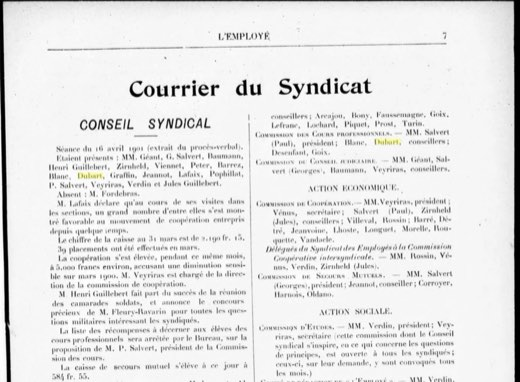
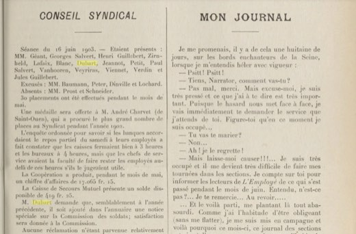
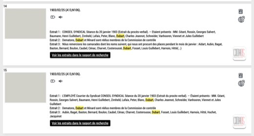
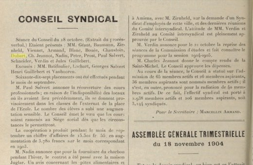


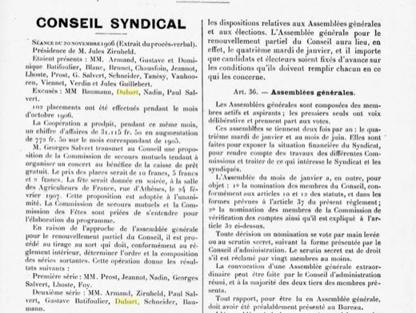
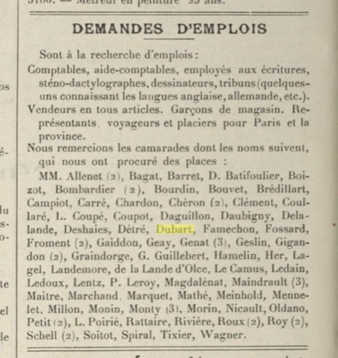
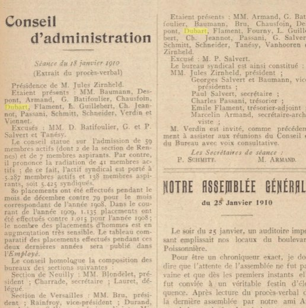
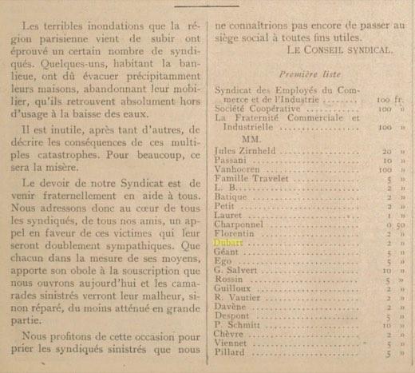
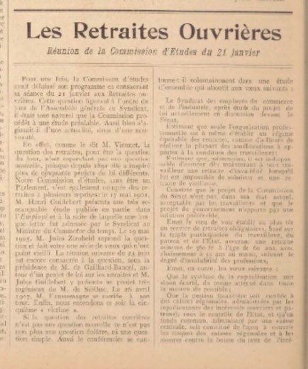
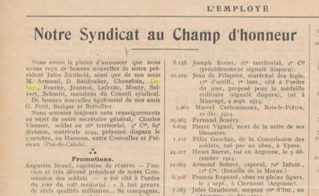
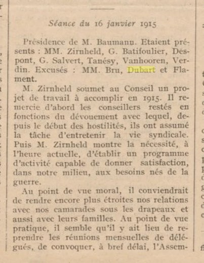

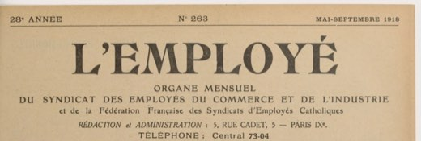
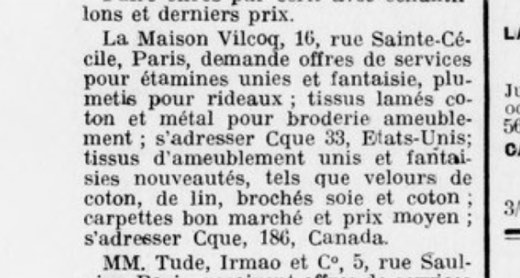
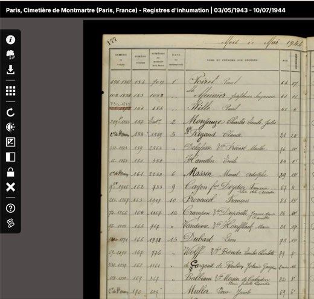
Autres sources citées
- Union des associations des anciens élèves des écoles supérieures de commerce, Annuaire général (extrait indexé Geneanet) Annuaire, almanach · Geneanet, fonds Bibliothèque (index OCR)
- Le Radical, 15 mai 1888 (extrait indexé Geneanet) : « Ier prix. M. Vilcoq (Henri), Institut commercial du Grand Orient de France » Presse · Geneanet, fonds Bibliothèque (index OCR)
- Le Petit journal, 30 juillet 1888 (extrait indexé Geneanet) : « M. Henri Vilcoq a remporté le prix du conseil municipal » Presse · Geneanet, fonds Bibliothèque (index OCR)
- Index Geneanet « Bibliothèque » (presse) : extraits du « Courrier » (anciennement Guide du commerce et Courrier des hôtels) pour « Vilcoq Henri », 16 rue Sainte-Cécile Presse · Geneanet, fonds Bibliothèque (presse)
- Paris-Hachette, annuaire 1910, volume 1 (copie numérique PDF) : 2e partie alphabétique avec téléphones, 3e partie par rues Annuaire, almanach · University of Illinois, Brittle Books (copie numérique) · hach0001parhacv01910i00002
- Répertoire des entreprises coloniales 1910 : banques et sociétés d'études, négociants (PDF, p. 28 du PDF) Annuaire, almanach · entreprises-coloniales.fr (copie numérique) · REC_1910-Banques&negoce.pdf
- Le Courrier, mars et mai 1913, rubrique « New-York » (extraits indexés Geneanet) : « M. Henri Vilcoq, 16, rue Sainte-Cécile, reçoit de 9 heures à midi… » Presse · Geneanet, fonds Bibliothèque (index OCR)
- « L'Employé » (Paris), rubrique « Notre Syndicat au Champ d'honneur — Citations et promotions » Presse · Gallica (BnF)
- « L'Employé : organe du Syndicat des employés du commerce et de l'industrie » (Paris), Conseil d'administration, extrait des procès-verbaux, séance du 8 juillet 1917 Presse · Gallica (BnF)
- « L'Employé : organe du Syndicat des employés du commerce et de l'industrie » (Paris), numéro avec les PV du Conseil d'administration des 14 octobre et 24 novembre 1917 Presse · Gallica (BnF)
- The New York Herald, 11 novembre 1918, « At London Hotels » (extrait indexé Geneanet) Presse · Geneanet, fonds Bibliothèque (index OCR)
- « L'Employé : organe du Syndicat des employés du commerce et de l'industrie » (Paris), numéro de 1918 (extrait indexé Geneanet, recherche « Dubart Léon ») Presse · Geneanet, fonds Bibliothèque (index OCR)
- « L'Employé : organe du Syndicat des employés du commerce et de l'industrie » (Paris), numéro avec les PV du Conseil d'administration des 18 octobre et 10 novembre 1918 Presse · Gallica (BnF)
- Didot-Bottin 1921 (extrait indexé Geneanet) : « Vilcoq (Henri), agent (vente et achat)… » Annuaire, almanach · Geneanet, fonds Bibliothèque (index OCR)
- Didot-Bottin 1921 (extrait indexé Geneanet, page 5 de l'index « Vilcoq Henri »), entrée d'un parfum Annuaire, almanach · Geneanet, fonds Bibliothèque (index OCR)
- Didot-Bottin 1922 (extrait indexé Geneanet) : « Vilcoq (Henri), 16, rue Sainte-Cécile » Annuaire, almanach · Geneanet, fonds Bibliothèque (index OCR)
- « L'Employé : organe du Syndicat des employés du commerce et de l'industrie » (Paris), numéro de 1922 (extrait indexé Geneanet, recherche « Dubart Léon ») Presse · Geneanet, fonds Bibliothèque (index OCR)
- Annuaire industriel, 1925, 1935 et 1938 (extraits indexés Geneanet, page 5 de l'index « Vilcoq Henri ») Annuaire, almanach · Geneanet, fonds Bibliothèque (index OCR)
- Didot-Bottin 1926 (extrait indexé Geneanet) : « Vilcoq (Henri), 16, rue Sainte-Cécile » Annuaire, almanach · Geneanet, fonds Bibliothèque (index OCR)
- Bulletin de l'Institut catholique de Paris, 25 octobre 1927 et 25 novembre 1928 (extraits indexés Geneanet) : dons de « M. et Mme Henri Vilcoq » Presse · Geneanet, fonds Bibliothèque (index OCR)
- Table des décès et des successions, 8e bureau (9e arr.), lettre D, juillet 1937 – décembre 1944 : mai 1944, ligne n° 8 (Dubart Léon), image 137/154 Dossier administratif · Archives de Paris · DQ8 2794
- Décès de Jeanne Augustine Baron Marchal, épouse Dubart, Paris 10e, 4 mai 1922 (photocopie conforme délivrée le 17/09/2012) Acte d'état civil · Mairie du 10e arrondissement de Paris · non visible
- Faire-part de décès de Madame Léon Dubart, née Jeanne Augustine Orsay-Marchal (imprimé, Administration spéciale des Funérailles, Maison Henri de Borniol) Document de famille · Famille Robert
- Faire-part de mariage de Léon Dubart et Mademoiselle Augustine Baron, envoyé par M. et Mme Edmond Dubart, Paris (3 rue Taitbout), 27 avril 1897 Document de famille · Famille Robert
- Décès de Charles DUBART, Paris 17e arr., 26/06/1890 (acte dressé le 27/06/1890) Acte d'état civil · Archives de Paris · V4E 7490
- Faire-part de décès de Madame veuve DUBART née Marie RIGNAULT, 18/02/1918 (imprimé, bordure noire) Document de famille · Famille Robert (documents reçus le 02/11/2026)
- Naissance de Léon DUBART, Paris 17e arr., acte dressé le 20/04/1869 Acte d'état civil · Archives de Paris · V4E 2064
- Table décennale 1863-1872 de l'état civil de Paris 17e arr. (naissances) : entrée « Dubart Léon 20 avr. 1869 » Acte d'état civil · Archives de Paris
- Naissance d'Édouard Jean René DUBART, Paris 2e arr., acte dressé le 20/01/1900 (avec mentions marginales de mariage 1922 et de décès 1994) Acte d'état civil · État civil de Paris 2e arr. (dépôt non visible sur l'image)
- Registre matricule de Léon DUBART, classe 1889, n° matricule 1452, 9e arr. de Paris Dossier militaire · Archives de Paris (registres matricules)
- Registre matricule de René DUBART, classe de mobilisation 1919 [?], n° matricule 245, liste du 10e arr. de Paris Dossier militaire · Archives de Paris (registres matricules)
- Décès de Léon DUBART, Paris 15e arr., 11/05/1944 (acte dactylographié) Acte d'état civil · Archives de Paris · 15D 399
- Mariage d'Édouard Jean René DUBART et Luce Renée LEBLANC, Vincennes, 24/10/1922 : copie intégrale délivrée le 17/09/2012 Acte d'état civil · Mairie de Vincennes (copie intégrale)
- Mariage de Léon DUBART et Solange GASNIER, Paris 12e arr., 02/06/1923 : photocopie conforme délivrée le 15/06/2011 Acte d'état civil · Mairie du 12e arrondissement de Paris (copie)
- Trow's general directory of the boroughs of Manhattan and Bronx, New York (extrait indexé Geneanet) : « Vilcoq Henri agent 458 Bway » Annuaire, almanach · Geneanet, fonds Bibliothèque (index OCR)
- Annuaire des anciens élèves des écoles supérieures de commerce (extrait indexé Geneanet, page 5 de l'index « Vilcoq Henri ») Annuaire, almanach · Geneanet, fonds Bibliothèque (index OCR)
Ce qu'on ignore
L'employeur de Léon DUBART entre 1900 et 1917, la maison de 1917 et l'éventuelle succession de 1944 ne sont pas établis par les sources en ligne accessibles.
recherche infructueuse Gallica a répondu 403 ; les annuaires, tables de successions et registres exigent un navigateur. · A0845
La table de succession de mai 1944 nomme, comme conjoint survivant de Léon DUBART, « Vincent » [lecture incertaine].
non résolu Lecture non confirmée ; la table est un index administratif, qui peut contenir une erreur de saisie ou de lecture. Pas de lien établi avec une personne nommée Vincent. · A0853
Le Paris-Hachette 1910 (parties consultées : alphabétique avec téléphones, par rues) ne donne aucune maison « Vilcoq » ni « Vilcog » au 16 rue Sainte-Cécile : aucune entrée exploitable pour cette adresse.
recherche infructueuse Ne prouve pas que la maison n'existait pas en 1917. Ne dit rien de la nature du commerce. La graphie « Vilcog » ou « Vilcoq » n'est pas trouvée dans le texte parcouru, ce qui ne dit pas qu'elle est absente du volume. CORRECTION 25/11/2026 : l'omission du Paris-Hachette 1910 est contredite par une source de 1910, le Répertoire des entreprises coloniales (S0464, A0857) : le silence du volume vient de la recherche par mots, non de l'absence de la maison. · A0855
Un Dubart siège à la séance du 8 juillet 1917 (A0878) alors que la fiche matricule de Léon DUBART le fait passer au 35e RI le 13/06/1917 (A0847) : si c'est lui, sa situation ce jour-là (civil, permission, détachement) n'est pas établie.
non résolu « Civil » n'est pas établi ; « à Paris » non plus (lieu de séance non indiqué, siège du syndicat supposé parisien d'après le sous-titre « Paris » du journal). Le papillon est lu avec doutes. · A0880
Un Dubart siège au Conseil d'administration le 10 novembre 1918 (A0887), quatre jours avant le 15 novembre 1918, date de la libération définitive de Léon DUBART de toute obligation militaire (A0849) ; il siège aussi le 14 octobre 1917 (A0885), après le sursis d'appel au titre de la maison Vilcoq (A0848, dépêche du 1er 9bre 1917 : date ambiguë).
non résolu Aucune cause ni conséquence n'est alléguée. Identité de Dubart non donnée par le passage (A0881). La date de la dépêche du sursis est ambiguë (nov. ou sept. 1917), donc l'ordre avec le 14/10/1917 n'est pas établi. Mise à jour 26/11/2026 : voir A0911 (présences d'avril à juillet 1918, concordance avec le sursis sans preuve). · A0890
Un « Dubart » siège au Conseil d'administration les 14 avril, 12 mai, 16 juin et 21 juillet 1918 (A0903-A0906), sans excuse notée, avant la libération définitive de Léon DUBART de toute obligation militaire du 15 novembre 1918 (A0849), après son passage au 35e RI le 13 juin 1917 (A0847) et le sursis d'appel de novembre [?] 1917 (A0848).
non résolu Concorde sans prouver : aucun extrait ne dit que Léon était à Paris ni qu'il bénéficiait du sursis ; le sursis ne dit pas où il se trouvait ; le lieu des séances n'est pas écrit ; le prénom est absent. Date de la dépêche du sursis ambiguë (nov. ou sept. 1917). Prolonge A0890. · A0911
Quel est le numéro d'acte exact du mariage de Léon DUBART et Solange GASNIER (Paris 12e, 02/06/1923), noté « 7?0 » ?
partiel · 2026-11-02 — Copie de l'acte lue AP98 ; numéro non établi (« 740 » probable, 2e chiffre 4 ou 9). Sans conséquence sur la date ni le lieu. Pistes : Table décennale du 12e arr. 1923-1932 (entrée Dubart / Gasnier avec numéro) ; registre du 12e arr. de 1923 aux Archives de Paris ; recadrer le seul numéro en marge de la copie. · R0120
Quelle est la rue de naissance de Léon (« Bendant » 19 selon la relecture) et la rue du grand-père Rignault (« Nègole » 34) ?
partiel · 2026-11-02 — Lecture « Bendant 19 » probable, rapprochée par l'arbre de la rue Beudant (17e) ; non confirmé AP30. Rue du grand-père : illisible. Pistes : Almanach-Bottin 1869 et 1870 ; plan du 17e arr. (Batignolles) ; recadrer les deux noms de rue à fort grossissement ; recensement/listes électorales du 17e. · R0123
Où habitait Léon DUBART au printemps 1897 : 21 boulevard Haussmann (acte de Tours, A0011) ou 139 rue d'Aboukir (feuille matricule, 18/03/1897 [?]) ?
partiel · 2026-11-02 — Écart non résolu AP40. Le 139 rue d'Aboukir est certain en janvier 1900 (naissance de René). La date de la mention de la feuille est lue avec doute. Pistes : Recadrer le tableau des résidences de la feuille matricule ; annuaires/listes électorales du 2e arr. 1897-1900 ; actes de Tours (S0002) et son 21 boulevard Haussmann. · R0125
Quelle est la maison « Vilcoq » [?] (16 rue Sainte-Cécile) qui obtient un sursis pour Léon DUBART, « directeur de succursale », en 1917 ?
partiel · 2026-11-02 — Papillon relu le 25/11/2026 (S0196) : sursis « au titre de la maison Vilcog [Vilcoq ?], 16 rue Ste Cécile, en qualité de Directeur de Succursale », dépêche du G.M.P. n° 19.200 du 1er 9bre [novembre ? septembre ?] 1917 (A0848). Nom et nature de la maison non identifiés ; la date de la dépêche n'est pas celle d'une décision établie. Non établi : quelle maison, quel commerce. Ajout 25/11/2026 : le Paris-Hachette 1910 (S0463) et Gallica n'apportent rien sur la maison (R0322, A0855). Trouvaille isolée non vérifiée « Dubart, représentant de commerce, Montmartre 132 » (A0856), homonymie possible. Mise à jour 25/11/2026 : identification faite pour le nom et l'activité en 1910 (S0464, A0857) : « Vilcoq (H.) », 16 rue Sainte-Cécile, modes, tissus, objets d'art, colonies ; prénom « Henri » non vérifié. Reste non établi : rôle de Léon, structure juridique, succursales, annonces 1916-1918. Ajout 25/11/2026 : annonce de la Maison Vilcoq trouvée par Jessica dans Le Courrier (S0465, A0858), 17/07/1919 selon Jessica (numéro et page inconnus) : confirme nom et adresse, activité de négoce/intermédiaire en tissus d'ameublement (demandes des États-Unis et du Canada) ; la maison existe encore en 1919 si la date du 17/07/1919 est exacte ; ne dit rien de Léon. Les annonces du Courrier avancées par un tiers ne sont pas reprises faute de lecture. Mise à jour 26/11/2026 : identification faite pour le patron et l'activité. L'index Geneanet (S0466) confirme le prénom Henri (A0859) et montre une activité d'acheteur/commissionnaire pour clients étrangers (références « Cque ») de 1909 à 1929 au moins (A0860) ; creux d'index juillet 1916 - janvier 1919, signalé comme limite et non comme fait (A0861). Hypothèse non vérifiée : bureau d'achat pour un client étranger, qui serait compatible avec « directeur de succursale » ; rien ne nomme Léon. Rôle de Léon non établi. Mise à jour 26/11/2026 (pages 2 à 4 de l'index) : Didot-Bottin 1921, 1922, 1926 et annuaire d'anciens élèves : Henri Vilcoq, négociant-commissionnaire, agent de vente et d'achat (tissus), 16 rue Sainte-Cécile, domicile 7 rue Lentonnet (A0862-A0865) ; homonymes possibles non fusionnés (A0866-A0869). Rôle de Léon toujours non établi. Ajout 26/11/2026 (page 5 et ouvrages, R0325) : « L'Employé » 1918 et 1922 (S0477, S0478 ; A0870-A0872) : Léon Dubart membre du Conseil syndical (1918) puis conseiller honoraire (1922) du Syndicat des employés du commerce et de l'industrie, donc salarié du commerce et syndiqué (extraits, identité par deux concordances) ; maison Henri Vilcoq : A0873-A0877 (S0479-S0481). Reste : ouvrir L'Employé 1918 et 1922 et chercher d'autres numéros sur Léon Dubart (employeur ? fonction ?), Bottin 1917-1920, registre du commerce. Mise à jour 26/11/2026 (R0326) : le Léon Dubart du Conseil syndical est établi comme P5227 par deux sources (A0879, A0397 ; A0881, A0872 relevée) ; il siège (ou un Dubart siège) au Conseil le 8 juillet 1917 (A0878), situation militaire alors non établie (A0880). Ajout 26/11/2026 (R0328) : un Dubart au Conseil du Syndicat les 14/10/1917, 18/10/1918, 10/11/1918 (A0885-A0887), absent de la liste le 24/11/1917 (A0888) ; présent le 10/11/1918, quatre jours avant la libération du 15/11/1918 (A0890) ; rapprochement non interprété, rôle chez Vilcoq toujours non établi. Ajout 26/11/2026 (R0326) : l'annonce de L'Avenir Mutuel du 15/12/1906 (A0934) place « M. Dubart » au 28 boulevard Bonne-Nouvelle dans le secteur des assurances ; hypothèse de rôle A0935 concordant avec AR0019 (non vérifié) ; rôle chez Vilcoq en 1917 toujours non établi. Pistes : Page 5 de l'index Geneanet (pages 1 à 4 lues, R0324) ; ouvrir les numéros du Courrier 1916-1918 (et celui du 17/07/1919) ; Bottin 1917-1920 (volumes 1921-1926 dans Geneanet : chercher aussi 1917-1920) ; registre du commerce (D33U3), annonces légales ; année du Trow's ; sens de « Cque » ; rôle de Léon DUBART dans la maison. Numéro et page de l'annonce du 17/07/1919. R0326 : adresse du numéro du 1er mars 1915, relecture du papillon (date de nomination), autres numéros de L'Employé 1914-1922, fonction au Conseil. Piste ajoutée 26/11/2026 : Annuaires 1906-1911 « Dubart, assurances, 28 boulevard Bonne-Nouvelle » ; L'Avenir Mutuel (JO, Archives de Paris). · R0131
Trajectoire de Léon DUBART après 1900 : employeur, adresses, argent, succession (sources en ligne : Gallica, Retronews, Archives de Paris, Mémoire des hommes, Geneanet public, moteur web)
infructueuse · 2026-11-25 — Rien de nouveau trouvé ; aucune source ouverte, donc aucune consultation enregistrée. Non établi : employeur 1900-1917 et 1922, nom de la maison de 1917, succession. Le silence en ligne ne prouve rien. Pistes : Liste détaillée de pistes navigateur dans recherches/generation-3/leon-apres-1900/enquete.md (Didot-Bottin 1917-1920, tables de successions 1944, minutier Robineau, listes électorales, registre du commerce). · R0320
Table des décès et successions de Léon DUBART (mai 1944) : conjoint survivant et existence d'une succession
partiel · 2026-11-25 — Décès le 11 mai 1944, 75 ans, 43 rue Saint-Georges, marié, confirmés par l'index (A0851, A0852). Conjoint survivant lu « Vincent » [?] : écart avec l'acte de décès (Solange Gasnier), non résolu (A0853). Une déclaration de succession existe (nov.-déc. 1944, numéros [?]) (A0854). Non établi : contenu de la succession et héritiers. Pistes : Déclaration de succession en salle de lecture (DQ7) ; acte de décès du 9e arr. du 11/05/1944 ; éventuel acte de mariage d'un remariage avec une Vincent (Léon est dit époux de Solange en 1944, A0468) ; relire le mot sur l'image. · R0321
La maison « Vilcoq » (Vilcog ?), 16 rue Sainte-Cécile, figure-t-elle dans le Paris-Hachette 1910 (partie alphabétique et partie par rues) ou dans Gallica (Didot-Bottin 1917-1920) ? Un « Dubart » du même annuaire peut-il être relié à Léon DUBART ?
partiel · 2026-11-25 — Non établi : la maison « Vilcoq » (16 rue Sainte-Cécile) n'apparaît pas dans les parties consultées du Paris-Hachette 1910 (A0855, valeur faible : 1910 ne dit rien de 1917). « Ste-Cécile 16 » est celui de « Ben Strauss & Cie, représentants » : probablement un téléphone, sans rapport. Trouvaille isolée : « Dubart, représentant de commerce, Montmartre 132 » (A0856), sans prénom ni rue, non rattachée à Léon DUBART, homonymie possible. Gallica : rien pour le Didot-Bottin 1917-1920 (probablement non numérisé). CORRECTION 25/11/2026 : résultats web non ouverts : le REC 1910 (entreprises-coloniales.fr) y figurait et décrit la maison (S0464, A0857) ; la conclusion « infructueuse » valait pour les seules sources ouvertes, la recherche était en réalité partielle. Pistes : Bottin du commerce 1917-1920 (Didot-Bottin) hors Gallica : à consulter par Jessica dans un autre fonds ; registre du commerce de la Seine (Archives de Paris, D33U3) ; annonces légales et presse de 1917 ; autres volumes du Paris-Hachette (1911-1920, si numérisés) pour voir la maison et l'entrée Dubart ; recadrage du seul mot « Vilcog » sur l'image du papillon si un document le permet. · R0322
L'index Geneanet « Bibliothèque » (presse) donne-t-il des extraits du Courrier pour « Vilcoq Henri » (prénom, activité, années) ?
partiel · 2026-11-26 — Prénom Henri confirmé (A0859) ; activité d'acheteur/commissionnaire pour clients étrangers, 1909-1929 au moins (A0860) ; creux d'index juillet 1916 - janvier 1919 (A0861, limite). Aucune mention de Léon. Suite : pages 2 à 4 lues (R0324). Pistes : Page 5 de l'index Geneanet (pages 1 à 4 lues, R0324) ; ouvrir les numéros du Courrier 1916-1918 (et celui du 17/07/1919) ; Bottin 1917-1920 (volumes 1921-1926 dans Geneanet : chercher aussi 1917-1920) ; registre du commerce (D33U3), annonces légales ; année du Trow's ; sens de « Cque » ; rôle de Léon DUBART dans la maison. ; page 5 lue (R0325) ; ouvrir L'Employé 1918 et 1922 ; autres numéros de L'Employé sur Léon Dubart (employeur, fonction) ; Bottin 1917-1920 ; registre du commerce · R0323
Les pages 2 à 4 de l'index Geneanet « Bibliothèque » pour « Vilcoq Henri » donnent-elles d'autres documents sur la maison (annuaires, presse) et des homonymes possibles ?
partiel · 2026-11-26 — Maison confirmée par trois volumes du Didot-Bottin (1921, 1922, 1926) et par un annuaire d'anciens élèves d'écoles de commerce : Henri Vilcoq, négociant-commissionnaire, agent de vente et d'achat, spécialité tissus, 16 rue Sainte-Cécile, tél. Central 51-23, domicile 7 rue Lentonnet (A0862-A0865). Homonymes possibles (New York, Victor Henri Vilcoq 1918, élève de 1888, dons à l'Institut catholique) enregistrés comme pistes non vérifiées, sans fusion (A0866-A0869). Aucune mention de Léon DUBART ; rien de 1916-1918 sur ces pages (A0861). Pistes : Page 5 de l'index ; ouvrir les numéros du Courrier 1916-1918 ; Bottin 1917-1920 (les volumes 1921-1926 sont dans Geneanet : les y chercher aussi) ; registre du commerce ; année du Trow's ; année de l'annuaire d'anciens élèves ; rôle de Léon dans la maison. · R0324
Page 5 de l'index Geneanet « Vilcoq Henri » et recherche « Dubart Léon » dans L'Employé : que disent-ils de la maison Vilcoq et du rôle de Léon ?
partiel · 2026-11-26 — Léon Dubart : membre du Conseil syndical (1918), conseiller honoraire (1922) du Syndicat des employés du commerce et de l'industrie (A0870, A0871), identifié par deux concordances (A0872). Maison Vilcoq : I.C. 1888, Arthur Abrial, société 1925 (partielle), concessionnaire d'un parfum 1921, présente jusqu'en 1938 (A0873-A0877). Aucune mention de Vilcoq près de Léon ; homonymes (employé de chemin de fer 1902, meubles à Lyon 1927) écartés sans lien établi. Mise à jour 26/11/2026 (R0326) : le Léon Dubart du Conseil syndical est établi comme P5227 par deux sources (A0879, A0397 ; A0881, A0872 relevée) ; il siège (ou un Dubart siège) au Conseil le 8 juillet 1917 (A0878), situation militaire alors non établie (A0880). Pistes : Ouvrir L'Employé 1918 et 1922 ; autres numéros sur Léon Dubart (employeur, fonction) ; Bottin 1917-1920 ; registre du commerce ; entrée complète de l'Annuaire industriel 1925. R0326 : adresse du numéro du 1er mars 1915, relecture du papillon (date de nomination), autres numéros de L'Employé 1914-1922, fonction au Conseil. · R0325
Que disent les numéros de « L'Employé » (Gallica, texte brut) où figure « Dubart » : Léon Dubart est-il bien le Léon de la lignée, que fait-il au Syndicat en 1917 ?
partiel · 2026-11-26 — Deux occurrences : « Dubart » présent au Conseil d'administration le 8 juillet 1917, sans prénom (A0878) ; « Léon Dubart, membre du Conseil syndical, nommé maréchal des logis au 19e escadron du train » (A0879). Avec le papillon (A0397), l'identité entre le Léon du syndicat et P5227 est établie par deux sources (A0881, A0872 relevée). Situation de Léon le 8 juillet 1917 non établie : le papillon le met au 35e RI depuis le 13/06/1917 et la dépêche du sursis est datée du 1er 9bre 1917 (A0880). Troisième numéro : aucune occurrence. Mise à jour 26/11/2026 : voir R0328 (autres numéros : présences du 14/10/1917, 18/10/1918, 10/11/1918, absence du 24/11/1917, A0885-A0890). Mise à jour 26/11/2026 : voir R0328 (numéro du 05/02/1910, A0892-A0895, hypothèse d'identité par continuité). Mise à jour 26/11/2026 : numéro du 01/05/1901 : un Dubart présent au Conseil syndical le 16/04/1901 (A0896), dans trois commissions pour 1901 (A0897) ; contexte 2.061 syndiqués (A0898) ; hypothèse d'identité par continuité, prénom absent. Mise à jour 26/11/2026 : début 1915 (S0494-S0495, captures de Jessica, relues ; date des numéros à confirmer) : un Dubart du Conseil donne de bonnes nouvelles (A0899), est excusé le 16/01/1915 (A0900) ; contexte (A0901). Hypothèses d'identité très probables par recoupement avec A0879/A0397, prénom absent. Mise à jour 26/11/2026 : en-tête du n° 247 (photographie de Jessica) : numéro double janvier-février 1915 (Gallica : 01/01/1915), fédération « Syndicats d'Employés Catholiques » (la notice Gallica dit « chrétiens »), siège 14 bis boulevard Poissonnière, Paris 9e, Central 73-04 (A0902, contexte de la source). Mise à jour 26/11/2026 : n° 263 (mai-septembre 1918, S0496, captures de Jessica relues) : un Dubart présent aux séances des 14/04, 12/05, 16/06 et 21/07/1918 (A0903-A0906), hors Bureau élu le 12/05 (A0907) ; contexte A0908-A0910 ; concordance avec le sursis d'appel sans preuve (A0911). Mise à jour 26/11/2026 : numéro du 25/02/1906 (S0497) : un Dubart (prénom absent) présent au Conseil les 16 et 30/01/1906, hors Bureau (A0912) ; Commission des secours mutuels et représentant du Conseil à la Commission des soldats en 1906 (A0913) ; hypothèses d'identité par continuité ; contexte : Zirnheld élu président le 30/01/1906 selon L'Employé (le Maitron dit le 31 : écart d'un jour non expliqué, A0914), 742 placements en 1905 (A0915). Mise à jour 26/11/2026 : numéro du 25/11/1904 (S0498, quatre captures de Jessica, relues) : un Dubart présent au Conseil le 18/10/1904 (A0916) ; un M. Dubart expose les travaux de la Commission des soldats depuis sa fondation lors d'une réunion de conscrits, fin 1904 (A0917) ; contexte 3.144 syndiqués (A0918) ; hypothèses d'identité par continuité, prénom absent. Complément 26/11/2026 : même numéro du 25/11/1904, article « En manœuvre » (deux captures supplémentaires) : un Dubart, membre de la Commission des soldats, représente le parti ennemi à la manœuvre du 18/09/1904 (A0919). Complément 26/11/2026 : numéro du 25/07/1903 (S0499) : un Dubart présent au Conseil le 16/06/1903 (A0923), demande une notice sur la Commission des soldats dans l'annuaire (A0924), intervient deux fois à la Commission d'études 1902-1903 (A0925-A0926) ; contexte A0927 ; hypothèses d'identité par continuité, prénom absent. Mise à jour 26/11/2026 : liste de résultats de recherche plein texte « Dubart » (captures de Jessica ; S0500-S0501 ; numéros NON ouverts, extraits OCR de moteur ; S0497 rattaché au résultat n° 13) : numéros du 25/02/1903 (Conseil du 20/01/1903 : présence A0928, réélection à la Commission de contrôle A0929, place procurée A0930) et du 25/04/1904 (Conseil du 15/03/1904 : présence A0931, exposé au nom de la Commission des soldats du programme de la réunion du lundi de Pâques A0932, extrait isolé sur « ces mesures » A0933). Hypothèses d'identité par continuité, prénom absent. Ajout 26/11/2026 : numéro du 15/12/1906 (S0502) : l'annonce de L'Avenir Mutuel renvoie à « M. DUBART, 28, boulevard Bonne-Nouvelle » : première coïncidence d'adresse avec Léon (A0399, A0453, A0459), identité probable, non vérifiée (A0934) ; Dubart excusé au Conseil du 20/11/1906 (A0937). Pistes : Adresse exacte du numéro du 1er mars 1915 (cb32766548x) ; relecture du papillon en recadrant sur la date de nomination (5 octobre 1914 [?]) avant tout écart ou concordance ; adresse du deuxième lien ; autres numéros de L'Employé de 1914 à 1922 pour « Léon Dubart » ; fonction de Léon au Conseil ; date de son entrée au Conseil ; relecture du papillon sur 19e escadron/35e RI/sursis. R0328 : numéros 1919-1922, mars 1918, fonction exacte. Confirmer l'identité par un numéro 1900-1914 donnant prénom ou profession ; chercher « Dubart » dans les rapports de la Commission d'études. Restent : numéros de 1902 à 1909 ou 1911-1913 donnant un prénom ou une profession de Dubart ; adresse Gallica du numéro du 1er mai 1901 à relever. Adresse Gallica du n° 247 à relever ; n° 248 (1er mars 1915) à vérifier. Adresse Gallica du n° 263 à relever ; numéros de 1919-1922 ; mars 1918 (mort de la mère). Après le numéro de 1906 : restent 1902-1905, 1907-1909 (sauf 06/12/1908) et 1911-1913 pour un prénom ou une profession de Dubart ; mars 1918 ; 1919-1922 ; adresse Gallica du numéro du 25/02/1906 à relever. Après le numéro du 25/11/1904 : restent 1902-1903, 1905, 1907-1909 (sauf 06/12/1908), 1911-1913 pour un prénom ou une profession de Dubart ; mars 1918 ; 1919-1922 ; date de la réunion de conscrits de 1904 et adresse Gallica du numéro à relever. Après le numéro du 25/07/1903 : restent 1902, 1905, 1907-1909 (sauf 06/12/1908), 1911-1913 pour un prénom ou une profession de Dubart ; mars 1918 ; 1919-1922 ; date des séances de discussion des vœux de la Commission d'études et adresse Gallica du numéro du 25/07/1903 à relever. Pistes : ouvrir le numéro du 25/04/1904 (14e année, n° 120) pour identifier « ces mesures » (A0933) et lire le programme de Pâques ; ouvrir le numéro du 25/02/1903 (n° 106) ; ouvrir les autres numéros de la liste de résultats (résultats 1 à 11 et suivants non vus) ; adresses Gallica/CODHOS des numéros à relever. Piste ajoutée 26/11/2026 : Chercher L'Avenir Mutuel (Journal officiel 1902-1910, Archives de Paris, annuaire des assurances) ; ouvrir ce numéro de L'Employé pour relever l'adresse Gallica ; relever dans Bottin/annuaire 1906-1911 « Dubart, assurances, 28 boulevard Bonne-Nouvelle ». · R0326
Où et quand Léon Dubart (†11/05/1944) a-t-il été inhumé : registre d'inhumation de Montmartre, mai 1944, et lien avec la concession 542 (1871) de ses parents ?
partiel · 2026-11-26 — TROUVÉ : inscription « Dubart Léon », 75 ans, 15e, n° d'ordre 166, mandat 1798, inhumation le 13 mai 1944 (A0882). Numéro de titre « 54[?]-1871 », dernier chiffre surchargé et illisible (A0883) ; identité avec la concession 542 de 1871 non établie : hypothèse (A0884). Pistes : Voir la partie droite de la page (division, ligne, n° de tombe) sur Geneanet ; relire le titre sur la page originale en plein cadre ; chercher si Solange Gasnier (veuve de Léon) est inscrite à Montmartre ou à la même concession ; vérifier la reprise de concession de 1911 de l'arbre (AR0019) ; relever l'URL de la page. · R0327
Autres numéros de « L'Employé » (Gallica, texte brut) : Dubart au Conseil d'administration en 1917-1918, fonction, présence aux séances ?
partiel · 2026-11-26 — Un « Dubart » (prénom non donné) siège au Conseil d'administration les 14/10/1917, 18/10/1918 et 10/11/1918 (A0885-A0887) ; absent de la liste le 24/11/1917 (A0888) ; aucune fonction nommée dans l'extrait d'octobre 1917 (A0889). Présent le 10/11/1918, quatre jours avant la libération du 15/11/1918 (A0890, juxtaposition non interprétée). Quatre numéros sans occurrence. Numéro du 06/12/1908 : un « Dubart » sans prénom parmi les camarades ayant procuré des places (A0891, hypothèse faible, concordance de nom). Mise à jour 26/11/2026 : numéro du 05/02/1910 : un Dubart au Conseil le 18/01/1910 (A0892), 2 fr. à la souscription (A0893), seule voix contre les vœux sur les retraites ouvrières le 21/01/1910 (A0894) ; contexte SECI (A0895). Identité avec Léon non établie pour 1910 (prénom absent). Mise à jour 26/11/2026 : numéro du 01/05/1901 : un Dubart présent au Conseil syndical le 16/04/1901 (A0896), dans trois commissions pour 1901 (A0897) ; contexte 2.061 syndiqués (A0898) ; hypothèse d'identité par continuité, prénom absent. Mise à jour 26/11/2026 : début 1915 (S0494-S0495, captures de Jessica, relues ; date des numéros à confirmer) : un Dubart du Conseil donne de bonnes nouvelles (A0899), est excusé le 16/01/1915 (A0900) ; contexte (A0901). Hypothèses d'identité très probables par recoupement avec A0879/A0397, prénom absent. Mise à jour 26/11/2026 : en-tête du n° 247 (photographie de Jessica) : numéro double janvier-février 1915 (Gallica : 01/01/1915), fédération « Syndicats d'Employés Catholiques » (la notice Gallica dit « chrétiens »), siège 14 bis boulevard Poissonnière, Paris 9e, Central 73-04 (A0902, contexte de la source). Mise à jour 26/11/2026 : n° 263 : présences du Dubart du Conseil aux quatre séances de 1918 (A0903-A0906), hors Bureau (A0907) ; mort du président Baumann le 6/05/1918 et nouveau Bureau (A0908), effectifs 8.864 puis 8.925 (A0909), siège 5 rue Cadet en 1918 (A0910) ; recoupement avec le sursis : A0911. Mise à jour 26/11/2026 : numéro du 25/02/1906 (S0497) : un Dubart (prénom absent) présent au Conseil les 16 et 30/01/1906, hors Bureau (A0912) ; Commission des secours mutuels et représentant du Conseil à la Commission des soldats en 1906 (A0913) ; hypothèses d'identité par continuité ; contexte : Zirnheld élu président le 30/01/1906 selon L'Employé (le Maitron dit le 31 : écart d'un jour non expliqué, A0914), 742 placements en 1905 (A0915). Mise à jour 26/11/2026 : numéro du 25/11/1904 (S0498, quatre captures de Jessica, relues) : un Dubart présent au Conseil le 18/10/1904 (A0916) ; un M. Dubart expose les travaux de la Commission des soldats depuis sa fondation lors d'une réunion de conscrits, fin 1904 (A0917) ; contexte 3.144 syndiqués (A0918) ; hypothèses d'identité par continuité, prénom absent. Complément 26/11/2026 : même numéro du 25/11/1904, article « En manœuvre » (deux captures supplémentaires) : un Dubart, membre de la Commission des soldats, représente le parti ennemi à la manœuvre du 18/09/1904 (A0919). Complément 26/11/2026 : numéro du 25/07/1903 (S0499) : un Dubart présent au Conseil le 16/06/1903 (A0923), demande une notice sur la Commission des soldats dans l'annuaire (A0924), intervient deux fois à la Commission d'études 1902-1903 (A0925-A0926) ; contexte A0927 ; hypothèses d'identité par continuité, prénom absent. Mise à jour 26/11/2026 : liste de résultats de recherche plein texte « Dubart » (captures de Jessica ; S0500-S0501 ; numéros NON ouverts, extraits OCR de moteur ; S0497 rattaché au résultat n° 13) : numéros du 25/02/1903 (Conseil du 20/01/1903 : présence A0928, réélection à la Commission de contrôle A0929, place procurée A0930) et du 25/04/1904 (Conseil du 15/03/1904 : présence A0931, exposé au nom de la Commission des soldats du programme de la réunion du lundi de Pâques A0932, extrait isolé sur « ces mesures » A0933). Hypothèses d'identité par continuité, prénom absent. Ajout 26/11/2026 : numéro du 15/12/1906 (S0502, cinq captures relues) : A0934 (annonce Avenir Mutuel, adresse de Léon), A0935 (rôle, hypothèse), A0936 (concours de tir), A0937 (Conseil du 20/11/1906), contexte A0938. Hypothèses d'identité des autres assertions renforcées par l'adresse sans changement de statut. Pistes : Numéros de 1919 à 1922 ; numéro de mars 1918 (hors mention de la mère) ; qui est dit « conseiller honoraire » et à quelle date ; fonction exacte au Conseil ; dates de parution des numéros ; relecture sur l'image des listes de présents. Confirmer l'identité par un numéro de 1908-1914 donnant le prénom ou la profession ; chercher les numéros de 1900 à 1914 ; adresse Gallica du numéro de 1908 à relever. Piste : un numéro 1900-1914 donnant prénom ou profession de Dubart ; chercher « Dubart » dans les rapports de la Commission d'études (retraites ouvrières) ; relever les adresses Gallica des numéros de 1908 et 1910 ; date de la seconde liste de présents visible sur la capture S0490. Restent : numéros de 1902 à 1909 ou 1911-1913 donnant un prénom ou une profession de Dubart ; adresse Gallica du numéro du 1er mai 1901 à relever. Adresse Gallica du n° 247 à relever ; n° 248 (1er mars 1915) à vérifier. Restent : numéro de mars 1918 ; numéros de 1919-1922 ; adresse Gallica du n° 263 ; date du déménagement du siège (1915-1918) ; fonction exacte au Conseil. Après le numéro de 1906 : restent 1902-1905, 1907-1909 (sauf 06/12/1908) et 1911-1913 pour un prénom ou une profession de Dubart ; mars 1918 ; 1919-1922 ; adresse Gallica du numéro du 25/02/1906 à relever. Après le numéro du 25/11/1904 : restent 1902-1903, 1905, 1907-1909 (sauf 06/12/1908), 1911-1913 pour un prénom ou une profession de Dubart ; mars 1918 ; 1919-1922 ; date de la réunion de conscrits de 1904 et adresse Gallica du numéro à relever. Après le numéro du 25/07/1903 : restent 1902, 1905, 1907-1909 (sauf 06/12/1908), 1911-1913 pour un prénom ou une profession de Dubart ; mars 1918 ; 1919-1922 ; date des séances de discussion des vœux de la Commission d'études et adresse Gallica du numéro du 25/07/1903 à relever. Pistes : ouvrir le numéro du 25/04/1904 (14e année, n° 120) pour identifier « ces mesures » (A0933) et lire le programme de Pâques ; ouvrir le numéro du 25/02/1903 (n° 106) ; ouvrir les autres numéros de la liste de résultats (résultats 1 à 11 et suivants non vus) ; adresses Gallica/CODHOS des numéros à relever. Piste ajoutée 26/11/2026 : Mêmes pistes ; ouvrir le numéro du 15/12/1906 sur Gallica pour l'adresse ; chercher le numéro de janvier-février 1907 (renouvellement du Conseil, 2e série). · R0328
Continuer l'exploration
Dossier complet : toutes les informations et leurs sources
Sosa 2.
Biographie
Récit rédigé le 2026-11-26 à partir de la base, qui fait foi. Les crochets renvoient aux assertions (onglet Toutes les informations).
À revoir : 18 information(s) ajoutée(s) depuis la rédaction (A0916, A0917, A0919, A0922, A0923, A0924, A0925, A0926, A0928, A0929, A0930, A0931, A0932, A0933, A0934, A0935, A0936, A0937).
Léon naît le 18 avril 1869 à Paris, dans le 17e arrondissement, au domicile de ses parents, Edmond Dubart et Marie Félicie Rignault ; l'acte, lu avec une probabilité moyenne, les place rue Beudant, dans les Batignolles, un quartier rattaché à Paris en 1860 et en grande partie bâti sous le Second Empire. Son oncle Charles Dubart, employé à Levallois-Perret, est témoin de la naissance (l'identification est déduite). L'acte de mariage de 1897 donne 1868 pour l'année de naissance, mais l'acte de naissance tranche pour 1869. Léon a un frère cadet, Marcel Jean Dubart, né le 14 septembre 1876 à Paris (16e) : le seul acte lu qui le nomme, celui de son décès, le dit fils d'Edmond et de Marie Félicie. [A0387, A0388, A0389, A0380, A0018, A0724]
À vingt ans, inscrit sur la liste de la classe 1889, il est « employé de commerce, vendeur », mesure 1 m 70 et a les yeux bleus ; ses parents habitent alors 17 boulevard Haussmann, dans le 9e, une voie récente, ouverte par tronçons depuis 1857 au milieu d'un quartier de banques. Il part en novembre 1890 pour le 22e régiment de dragons, est nommé brigadier en septembre 1891, avec un certificat de bonne conduite, puis envoyé en congé en 1893 et versé dans la réserve le 1er novembre de cette année-là. En mars 1895, il déclare avec son père le décès d'un François Émile Rignault, qui porte le nom de sa mère ; l'acte ne dit pas le lien, et dit seulement que Léon, employé, demeure rue d'Hauteville 47, adresse du défunt. [A0393, A0394, A0395, A0396, A0749]
Le 26 avril 1897, à 15 h, il épouse à Tours Jeanne Augustine Baron Marchal. Il a 28 ans, est employé de commerce et demeure 21 boulevard Haussmann. Née en 1873 à Clermont-Ferrand, elle est la fille naturelle d'Anne Baron, sans père nommé, et a été adoptée quelques semaines plus tôt par Anne Louise Angélique Marchal, épouse Orsay ; le mariage se fait sans contrat, devant quatre témoins que l'acte dit amis (un négociant parisien, un chef de bureau de la mairie de Tours, un rentier et un employé du chemin de fer d'Orléans). De Paris, Edmond et Marie Félicie annoncent le mariage de « leur fils » par un faire-part de leur domicile, 3 rue Taitbout. [A0010, A0011, A0013, A0015, A0016, A0359, A0001]
Deux ans plus tard, le 15 août 1899, son frère Marcel meurt à Tours, à vingt-deux ans, célibataire et employé, domicilié chez leurs parents rue Taitbout ; l'acte est déclaré par deux amis. En janvier 1900, Léon est caissier et habite 139 rue d'Aboukir, où naît son fils René, Edouard Jean dit René ; sa femme, âgée de 26 ans, est dite couturière. Sa feuille matricule le porte ensuite 28 boulevard Bonne-Nouvelle à partir d'avril 1904 (dates lues avec doute), adresse où René, étudiant, vit avec ses parents. Edmond meurt en 1903 ; Marie Félicie, veuve, en février 1918, et le faire-part nomme « Monsieur et Madame Léon Dubart, ses fils et belle-fille » (seul Léon est nommé, l'épouse ne l'est pas). [A0724, A0021, A0402, A0403, A0399, A0412, A0381, A0366, A0371]
Dans le monde des employés, un nom revient aux côtés du sien : celui du Syndicat des employés du commerce et de l'industrie, dont « L'Employé » est le journal. L'en-tête du numéro de janvier-février 1915 le dit organe de la Fédération française des syndicats d'employés catholiques (la notice du catalogue de Gallica écrit « chrétiens ») : c'est un syndicat catholique, installé boulevard Poissonnière en 1915 et rue Cadet en 1918. Les débuts de la série sont des hypothèses : le journal n'écrit qu'un « Dubart », sans prénom, et le nom seul ne prouve rien ; seule la continuité du même nom au même Conseil, jusqu'au moment où l'identité de Léon est établie, les soutient. Un Dubart, très probablement Léon, est parmi les dix-huit conseillers présents à la séance du 16 avril 1901, quand le syndicat compte 2 061 membres ; la même année, il est conseiller dans les commissions des cours professionnels, des soldats et des fêtes. En janvier 1906, il est de nouveau au Conseil, aux séances des 16 et 30 janvier, ce dernier jour où Jules Zirnheld est élu président du syndicat ; la presse syndicale le range cette année-là parmi les membres de la Commission des secours mutuels et, avec un autre conseiller, parmi les représentants du Conseil à la Commission des soldats. Un numéro de décembre 1908 range encore un « Dubart » parmi les camarades qui ont procuré des places aux demandeurs d'emploi : mention plus faible, qui peut viser un homonyme. [A0896, A0897, A0898, A0912, A0913, A0914, A0891]
Le 18 janvier 1910, un Dubart, très probablement Léon, est présent à la séance du Conseil d'administration, présidée par Zirnheld, sans appartenir au bureau ; le syndicat compte alors, selon son propre procès-verbal, 5 425 syndiqués et 1 135 placements en 1909, et son siège est boulevard Poissonnière. Dans le même numéro du 5 février, un Dubart verse 2 francs à la souscription du Conseil pour les victimes de la crue de la Seine. Et à la réunion de la Commission d'études du 21 janvier sur les retraites ouvrières, « M. Dubart » conteste, avec un M. Louis, la nécessité de l'obligation, discute de capitalisation avec Zirnheld et d'autres, puis reste seul contre les vœux adoptés à l'unanimité « moins la voix de M. Dubart qui couche fièrement sur sa position ». Si c'est bien Léon, il tient là une position dissidente que le journal relève avec une pointe d'ironie. [A0892, A0893, A0894, A0895]
La guerre le rappelle : mobilisé le 1er août 1914, il rejoint le 13 août le 19e escadron du train des équipages et est maréchal des logis en octobre. Au syndicat, la rubrique « Notre Syndicat au Champ d'honneur » du numéro de janvier-février 1915 annonce de bonnes nouvelles de Zirnheld et d'amis membres du Conseil syndical, parmi lesquels un Dubart ; à la séance du Conseil du 16 janvier 1915, un Dubart figure parmi les excusés. Puis le numéro du 1er mars 1915 écrit : « Léon Dubart, membre du Conseil syndical, a été nommé maréchal des logis au 19e escadron du train ». C'est le grade et l'unité que la feuille matricule donne à Léon : l'identité est établie, par deux sources indépendantes, et le mobilisé de 1914 était donc déjà conseiller. Un papillon collé sur sa feuille matricule en suit ensuite la trace : le 3 mars 1916, une dépêche du général commandant la 122e division l'envoie au 1er escadron du train, sans en dire la raison ; le 13 juin 1917, il passe au 35e régiment d'infanterie. Le même papillon compte pour lui une campagne contre l'Allemagne du 13 août 1914 au 1er novembre 1917 (la fin est écrite en abrégé, « 9bre », et sa lecture reste à confirmer). Il y est enfin placé en sursis d'appel illimité, en qualité de directeur de succursale, au titre d'une maison dont le nom se lit « Vilcog » ou « Vilcoq », 16 rue Sainte-Cécile ; la dépêche citée est de l'automne 1917, le mois restant incertain. Il est libéré définitivement de toute obligation militaire le 15 novembre 1918, quatre jours après l'armistice. Les autres unités mentionnées par des lectures plus anciennes restent incertaines. [A0397, A0398, A0846, A0847, A0848, A0849, A0850, A0899, A0900, A0879, A0881]
De cette maison, on sait ce que les annuaires et la presse commerciale en disent, et ils ne nomment pas Léon. Elle porte le nom d'Henri Vilcoq : un répertoire des entreprises coloniales de 1910 la range à cette adresse parmi les maisons de modes, tissus et objets d'art pour les colonies, et des extraits du « Courrier », de 1909 à 1929 au moins, montrent Henri Vilcoq y publiant des demandes d'offres de fabricants français (tissus, dentelles, broderies, nouveautés) pour des clients étrangers ; une annonce de 1919, d'après Jessica (l'année n'est pas vérifiée sur la page), cherche des tissus d'ameublement pour des demandes venues des États-Unis et du Canada. Les Didot-Bottin de 1921, 1922 et 1926 y inscrivent Henri Vilcoq, agent de vente et d'achat pour des produits français, anglais et américains, spécialité tissus, au même téléphone, et un annuaire d'anciens élèves d'écoles de commerce le dit négociant-commissionnaire et importateur de produits américains, domicilié 7 rue Lentonnet, dans le 9e ; l'Annuaire industriel mentionne la maison à cette adresse en 1925, 1935 et 1938. Ces extraits, indexés par un site de généalogie, n'ont pas été ouverts en entier. D'autres Vilcoq (un Henri agent de « cotton goods » à New York, un élève primé d'une école de commerce en 1888, un « Victor Henri » descendu à Londres en novembre 1918, des dons à l'Institut catholique) sont des homonymes possibles : rien ne les relie à cette maison, et on ne les lui attribue pas. Que Léon, employé de commerce puis caissier, ait été attaché à une maison de ce genre reste une hypothèse tirée de l'activité de la maison : « directeur de succursale » est tout ce que l'on sait de sa place, et ce qu'il y faisait, ni depuis quand, rien ne l'établit. [A0857, A0858, A0859, A0860, A0862, A0863, A0864, A0865, A0876, A0877, A0866, A0867, A0868, A0869, A0873, A0874, A0875]
Le journal continue de le montrer au Conseil pendant ces deux années. Un « Dubart », sans prénom, est présent le 8 juillet 1917, puis le 14 octobre 1917, sans fonction ni commission attribuée ; il n'est ni parmi les présents ni parmi les excusés le 24 novembre. En 1918, il est présent aux quatre séances du 14 avril, du 12 mai, du 16 juin et du 21 juillet, sans excuse notée et sans figurer au bureau élu le 12 mai, puis les 18 octobre et 10 novembre, quatre jours avant sa libération. Si c'est Léon (ce que ni le prénom ni la fonction ne disent pour ces séances), sa situation militaire ne se laisse pas réduire à un mot : la feuille matricule le met au 35e régiment d'infanterie depuis le 13 juin 1917, le sursis d'appel qu'elle date de l'automne 1917 vient après la séance de juillet, et il n'est libéré qu'au 15 novembre 1918. On ne dira donc pas qu'il est alors un civil ; la juxtaposition n'est pas interprétée. En revanche, le journal le nomme sans ambiguïté en 1918, « camarade Léon Dubart, membre du Conseil syndical », à propos de la mort de sa mère le 18 février, et en 1922 il annonce le mariage de René avec Mlle Renée Leblanc le 24 octobre en nommant son père « conseiller honoraire du syndicat » : ces deux recoupements confirment encore l'identité. [A0878, A0880, A0885, A0886, A0887, A0888, A0889, A0890, A0903, A0904, A0905, A0906, A0907, A0911, A0870, A0871, A0872]
Selon l'arbre familial, non vérifié, il aurait été inspecteur d'assurances en 1911 et aurait repris à son cousin germain Maurice Charles Dubart, en décembre de cette année-là, la concession du cimetière Montmartre. [AR0019, AR0020]
Jeanne Augustine meurt en mai 1922. Léon déclare lui-même le décès avec Louis Caron, employé rue d'Anjou ; le faire-part est émis par lui, par René et par Madame veuve Orsay-Marchal, que l'acte dit mère adoptive de la défunte. L'acte de 1923 le dit veuf depuis le 3 mai, une autre pièce donne le 4 : la date n'est pas tranchée. Le 24 octobre 1922, représentant de commerce, domicilié boulevard Bonne-Nouvelle, il consent au mariage de René avec Luce Renée Leblanc, célébré à Vincennes. Le 2 juin 1923, à 10 h, il épouse à Paris (12e) Solange Gasnier, fille d'Alfred Gasnier et de Solange Minois, après un contrat reçu le 24 mai par Me Robineau. René et Renée ont une fille, Annie, née en 1930, petite-fille de Léon. [A0353, A0355, A0458, A0453, A0451, A0449, A0457, A0461, A0463, A0471]
Léon meurt le 11 mai 1944 à 5 h 30, 60 rue Violet, dans le 15e arrondissement, à 75 ans, sans profession, domicilié 43 rue Saint-Georges ; l'acte, déclaré par un employé qui n'est pas dit parent, le nomme veuf de Jeanne Augustine et époux de Solange. Paris est alors occupé. La table des successions de mai 1944 le retrouve, sous le même jour, l'âge et l'adresse, marié ; mais le nom du conjoint survivant s'y lit « Vincent » (lecture incertaine), en écart avec Solange Gasnier, et l'on n'explique pas cet écart. Des mentions de novembre et décembre 1944 indiquent qu'une déclaration de succession a été faite ; son contenu, qu'il faudra consulter, n'est pas connu. Le registre d'inhumation du cimetière de Montmartre porte « Dubart Léon », 75 ans, du 15e arrondissement, pour une inhumation le 13 mai 1944 ; le numéro de titre se lit « 54[?]-1871 », le dernier chiffre étant surchargé. Qu'il repose dans la concession 542, ouverte en 1871, où sont ses parents, est une hypothèse, non établie. Restent à éclaircir son rôle dans la maison Vilcoq, son adresse exacte au printemps 1897 (boulevard Haussmann ou rue d'Aboukir) et le lieu précis de son décès. [A0467, A0468, A0469, A0851, A0852, A0853, A0854, A0882, A0883, A0884, AR0024, A0399]
Contexte : recherches/generation-4/dubart-edmond/contexte-historien-3-lieux.md (Batignolles, boulevard Haussmann) ; recherches/generation-3/leon-apres-1900/enquete.md (procès-verbaux et rubriques publiés par L'Employé, en-têtes des numéros de 1915 et 1918).
Faits clés
- Naissance : 18/04/1869, Paris 17e — vérifié [A0387]
- Baptême : 27/05/1869, Paris — non vérifié (arbre familial) [AR0015]
- Parents : Edmond DUBART (P5232) et Marie Félicie RIGNAULT (P5234) — vérifié [A0388]
- Mariage : avec Jeanne Augustine BARON MARCHAL (P5229) — 26/04/1897, Tours — vérifié [A0010]
- Mariage : avec Solange GASNIER (P5241) — 02/06/1923, Paris 12e — vérifié [A0457]
- Décès : 11/05/1944, Paris 15e — vérifié [A0467]
- Inhumation : 13/05/1944, Paris, cimetière de Montmartre — vérifié [A0882]
Versions divergentes (voir Toutes les informations) : décès A0458.
Famille
Liens tirés des assertions de la base ; le statut de chaque lien est celui des assertions citées. Les proches plus éloignés sont calculés à partir de ces liens directs.
Parents
- Edmond DUBART (P5232) [A0359 partiellement vérifié, A0388 vérifié, A0389 partiellement vérifié, A0394 partiellement vérifié, A0459 vérifié, A0469 vérifié, AR0179 non vérifié]
- Marie Félicie RIGNAULT (P5234) [A0359 partiellement vérifié, A0371 partiellement vérifié, A0388 vérifié, A0391 vérifié, A0394 partiellement vérifié, A0459 vérifié, A0469 vérifié, AR0179 non vérifié]
Conjoint(s)
- Jeanne Augustine BARON MARCHAL (P5229) — mariage 1897-04-26 [A0010 vérifié, A0355 partiellement vérifié, A0458 partiellement vérifié, A0468 vérifié, AR0170 non vérifié]
- Solange GASNIER (P5241) — mariage 1923-06-02 [A0457 vérifié, A0463 partiellement vérifié, A0468 vérifié, A0853 non résolu, AR0172 non vérifié]
Enfants
- Edouard Jean "René" DUBART (P5184) [A0402 vérifié, A0412 partiellement vérifié, A0451 vérifié, A0872 vérifié, A0881 vérifié, AR0171 non vérifié]
Frères et sœurs
- Marcel Jean DUBART (PN0003) [A0359 partiellement vérifié, A0371 partiellement vérifié, A0388 vérifié, A0389 partiellement vérifié, A0391 vérifié, A0394 partiellement vérifié, A0459 vérifié, A0469 vérifié, A0724 vérifié, A0819 vérifié, A0824 vérifié, AR0179 non vérifié]
Proches et alliés (calculés)
Grands-parents
- Louis Charles Ambroise DUBART (P5761) — par Edmond DUBART (P5232) [A0240 vérifié, A0252 vérifié, A0257 vérifié, A0258 vérifié, A0259 vérifié, A0359 partiellement vérifié, A0384 vérifié, A0388 vérifié, A0389 partiellement vérifié, A0394 partiellement vérifié, A0459 vérifié, A0469 vérifié, AR0179 non vérifié, AR0181 non vérifié]
- Jean Louis Alexandre RIGNAULT (P5764) — par Marie Félicie RIGNAULT (P5234) [A0258 vérifié, A0359 partiellement vérifié, A0361 vérifié, A0371 partiellement vérifié, A0388 vérifié, A0391 vérifié, A0394 partiellement vérifié, A0459 vérifié, A0469 vérifié, AR0179 non vérifié, AR0183 non vérifié]
- Adèle Félicie BOSSE (P5767) — par Marie Félicie RIGNAULT (P5234) [A0258 vérifié, A0359 partiellement vérifié, A0361 vérifié, A0371 partiellement vérifié, A0388 vérifié, A0391 vérifié, A0394 partiellement vérifié, A0459 vérifié, A0469 vérifié, AR0179 non vérifié, AR0183 non vérifié]
- Marie Octavie GIBERT (P7411) — par Edmond DUBART (P5232) [A0257 vérifié, A0258 vérifié, A0359 partiellement vérifié, A0384 vérifié, A0388 vérifié, A0389 partiellement vérifié, A0394 partiellement vérifié, A0459 vérifié, A0469 vérifié, AR0179 non vérifié, AR0181 non vérifié]
Oncles et tantes
- Charles Alfred DUBART (P5762) — frère ou sœur de Edmond DUBART (P5232) [A0239 vérifié, A0240 vérifié, A0252 vérifié, A0256 partiellement vérifié, A0257 vérifié, A0258 vérifié, A0259 vérifié, A0359 partiellement vérifié, A0376 vérifié, A0384 vérifié, A0388 vérifié, A0389 partiellement vérifié, A0394 partiellement vérifié, A0459 vérifié, A0469 vérifié, AR0179 non vérifié, AR0180 non vérifié, AR0181 non vérifié]
- Eugène Émile RIGNAULT (PN0095) — frère ou sœur de Marie Félicie RIGNAULT (P5234) [A0258 vérifié, A0359 partiellement vérifié, A0361 vérifié, A0371 partiellement vérifié, A0388 vérifié, A0391 vérifié, A0394 partiellement vérifié, A0459 vérifié, A0469 vérifié, A0773 non vérifié, AR0179 non vérifié, AR0183 non vérifié]
Oncles et tantes par alliance
- Mathilde Emilie CINOT [?] (PN0027) — conjoint de Charles Alfred DUBART (P5762) [A0239 vérifié, A0240 vérifié, A0252 vérifié, A0256 partiellement vérifié, A0257 vérifié, A0258 vérifié, A0259 vérifié, A0359 partiellement vérifié, A0376 vérifié, A0378 partiellement vérifié, A0384 vérifié, A0388 vérifié, A0389 partiellement vérifié, A0394 partiellement vérifié, A0459 vérifié, A0469 vérifié, AR0179 non vérifié, AR0180 non vérifié, AR0181 non vérifié]
Cousins germains
- Charles DUBART (PN0028) — enfant de Charles Alfred DUBART (P5762) [A0239 vérifié, A0240 vérifié, A0252 vérifié, A0256 partiellement vérifié, A0257 vérifié, A0258 vérifié, A0259 vérifié, A0359 partiellement vérifié, A0376 vérifié, A0379 partiellement vérifié, A0384 vérifié, A0388 vérifié, A0389 partiellement vérifié, A0394 partiellement vérifié, A0459 vérifié, A0469 vérifié, AR0179 non vérifié, AR0180 non vérifié, AR0181 non vérifié]
- Maurice Charles DUBART (PN0054) — enfant de Charles Alfred DUBART (P5762) [A0239 vérifié, A0240 vérifié, A0252 vérifié, A0256 partiellement vérifié, A0257 vérifié, A0258 vérifié, A0259 vérifié, A0359 partiellement vérifié, A0376 vérifié, A0384 vérifié, A0388 vérifié, A0389 partiellement vérifié, A0394 partiellement vérifié, A0459 vérifié, A0469 vérifié, A0477 non vérifié, AR0179 non vérifié, AR0180 non vérifié, AR0181 non vérifié]
Beaux-parents
- Augustine MARCHAL (P13354) — parent de Jeanne Augustine BARON MARCHAL (P5229) [A0010 vérifié, A0355 partiellement vérifié, A0458 partiellement vérifié, A0468 vérifié, AR0170 non vérifié, AR0209 non vérifié]
- Anne BARON (PN0008) — parent de Jeanne Augustine BARON MARCHAL (P5229) [A0003 vérifié, A0010 vérifié, A0013 vérifié, A0351 vérifié, A0355 partiellement vérifié, A0458 partiellement vérifié, A0468 vérifié, AR0170 non vérifié]
- Alfred GASNIER (PN0046) — parent de Solange GASNIER (P5241) [A0457 vérifié, A0461 vérifié, A0463 partiellement vérifié, A0468 vérifié, A0853 non résolu, AR0172 non vérifié]
- Solange MINOIS (PN0047) — parent de Solange GASNIER (P5241) [A0457 vérifié, A0461 vérifié, A0463 partiellement vérifié, A0468 vérifié, A0853 non résolu, AR0172 non vérifié]
Gendres et belles-filles
- Luce "Renée" LEBLANC (P5187) — conjoint de Edouard Jean "René" DUBART (P5184) [A0402 vérifié, A0408 vérifié, A0412 partiellement vérifié, A0449 vérifié, A0451 vérifié, A0456 partiellement vérifié, A0872 vérifié, A0881 vérifié, AR0164 non vérifié, AR0165 non vérifié, AR0171 non vérifié]
Petits-enfants
- Annie Marguerite Jeannine DUBART (PN0051) — par Edouard Jean "René" DUBART (P5184) [A0402 vérifié, A0412 partiellement vérifié, A0451 vérifié, A0471 vérifié, A0473 vérifié, A0872 vérifié, A0881 vérifié, AR0171 non vérifié]
Autres parentés dites par les actes
- Edouard Jean "René" DUBART (P5184) — fils ; marié le 24/10/1922 (autre) [A0871 partiellement vérifié]
- Luce "Renée" LEBLANC (P5187) — épouse de René (autre) [A0871 partiellement vérifié]
- Marie Félicie RIGNAULT (P5234) — mère décédée le 18/02/1918 (autre) [A0872 vérifié, A0881 vérifié]
- Marie Félicie RIGNAULT (P5234) — mère, inhumée dans la concession 542 (A0757) (autre) [A0884 non vérifié]
- Charles Alfred DUBART (P5762) — oncle [A0380 partiellement vérifié]
- Jean Louis Alexandre RIGNAULT (P5764) — grand-père (témoin) [A0391 vérifié]
Autres personnes citées dans les mêmes actes (sans parenté établie)
- Anne Louise Angélique MARCHAL (PN0001) — apparenté de Jeanne Augustine BARON MARCHAL (P5229) [A0355 partiellement vérifié]
- François Emile RIGNAULT (PN0006) — mentionné [A0749 vérifié]
- Augustin BEAUD (PN0096) — mentionné [A0016 vérifié]
- Augustin BEAUD (PN0097) — mentionné [A0922 non vérifié]
Toutes les informations
- [A0387] vérifié · fait attesté · confiance forte — Léon DUBART est né le 18/04/1869 à Paris (17e arr.), au domicile de ses parents ; acte dressé le 20/04/1869.
-
[A0389] partiellement vérifié · transcription · confiance faible — Le domicile des parents de Léon à sa naissance (1869) est rue « Bendant » [Beudant ?] n° 19 (lecture probable), Paris 17e.
- Limite : Rapprochement avec la rue Beudant non établi ; à contrôler sur plans et annuaires de 1869. Variante envisagée dans l'acte : « Bridaine ? » (hypothèse de lecture écartée à la relecture).
- Possibilités : Autre rue du 17e.
- Sources : S0193
-
[A0380] partiellement vérifié · inférence · confiance moyenne — Le témoin « Charles Dubart, âgé de trente-neuf ans, employé, rue de Cormeilles 31 à Levallois-Perret, oncle de l'enfant » (naissance de Léon, 1869) est Charles DUBART, frère d'Edmond et né en 1829 (identification déduite).
- Limite : Le lien fraternel est déduit (père non écrit dans l'acte de 1869) ; la résidence de Charles en 1869 (Levallois) n'est pas dans l'acte de 1890 (Paris 17e, vingt ans plus tard).
- Possibilités : Homonyme du même âge ; oncle par alliance (dans ce cas il ne porterait en principe pas le nom Dubart).
- Sources : S0193, S0186
- [A0388] vérifié · fait attesté · confiance forte — Léon DUBART est le fils légitime d'Edmond DUBART et de Marie Félicie RIGNAULT.
- [A0868] non vérifié · hypothèse · confiance faible — Piste non vérifiée : Le Radical du 15 mai 1888 porte « Ier prix. M. Vilcoq (Henri), Institut commercial du Grand Orient de France, M. Labonne, professeur » et Le Petit journal du 30 juillet 1888 « M. Henri Vilcoq a remporté le prix du conseil municipal » (Vanves) : un Henri Vilcoq est élève d'une école de commerce en 1888.
- [A0873] partiellement vérifié · fait attesté · confiance moyenne — L'annuaire des anciens élèves des écoles supérieures de commerce porte, selon un extrait indexé : « Vilcoq (Henri), I. C. 1888 » : Henri Vilcoq est inscrit comme ancien élève de l'Institut commercial, promotion 1888 (lecture de « I. C. » comme Institut commercial, non confirmée par l'extrait).
-
[A0393] partiellement vérifié · transcription · confiance moyenne — Léon DUBART, de la classe 1889 (matricule du recrutement 1452, Paris 9e), est « employé de commerce, vendeur [?] », taille 1 m 70, yeux bleus, degré d'instruction 3.
- Limite : Cote du registre non visible.
- Sources : S0196
-
[A0395] partiellement vérifié · transcription · confiance faible — Léon DUBART part le 13/11/1890 [lecture incertaine] pour le 22e régiment (de dragons) : « dragon de 2e classe » le 13 novembre 1890.
- Limite : La feuille hésite entre infanterie et dragons dans la première ligne ; la mention de dragon et le corps portent 22e régiment de dragons.
- Possibilités : 22e régiment d'infanterie.
- Sources : S0196
-
[A0396] partiellement vérifié · transcription · confiance moyenne — Léon DUBART est nommé brigadier le 24/09/1891, reçoit un certificat de bonne conduite, puis est envoyé en congé le 24/09/1893 et passe dans la réserve de l'armée active le 01/11/1893.
- Sources : S0196
-
[A0749] vérifié · fait attesté · confiance moyenne — Le 15 mars 1895, Léon Dubart, 26 ans (âge déclaré), employé, demeurant rue d'Hauteville 47, déclare le décès de François Émile Rignault avec Edmond Dubart ; il demeure à l'adresse même du défunt
- Limite : Âge déclaré 26 ans pour 25 réels ; l'acte ne dit pas pourquoi Léon demeure à l'adresse du défunt (rien n'est établi sur un hébergement ou un travail commun).
- Sources : S0417
-
[A0010] vérifié · fait attesté · confiance forte — Léon Dubart et Jeanne Augustine Baron Marchal se marient à Tours le 26 avril 1897 à 15 h.
- Sources : S0002
-
[A0011] vérifié · fait attesté · confiance forte — En 1897, Léon Dubart a 28 ans, est employé de commerce et demeure 21 boulevard Haussmann, Paris 9e.
- Sources : S0002
-
[A0359] partiellement vérifié · transcription · confiance moyenne — Le faire-part du 27/04/1897 émis de Paris par M. et Mme Edmond Dubart (3 rue Taitbout) annonce le mariage de « Monsieur Léon Dubart, leur fils » avec Mademoiselle Augustine Baron.
- Limite : L'épouse d'Edmond n'est pas nommée (« Madame Edmond Dubart ») ; la filiation de Léon se prouve par son acte de naissance (lot B2).
- Sources : S0184
- [A0922] non vérifié · hypothèse · confiance faible — Raisonnement conditionnel (non un fait) : si l'identification A0921 est exacte, un ami de Léon Dubart assez proche pour être son témoin de mariage en 1897 préside la Commission des soldats du Syndicat où siège un « Dubart » de 1901 à 1906 ; cela renforcerait l'hypothèse que ce « Dubart » est Léon (A0897, A0913, A0917).
- [A0402] vérifié · fait attesté · confiance forte — René DUBART est le fils de Léon DUBART (31 ans, caissier) et de Jeanne Augustine BARON MARCHAL (26 ans, couturière), « mariés ».
-
[A0403] vérifié · fait attesté · confiance moyenne — En janvier 1900, Léon DUBART a 31 ans et est « caissier ».
- Limite : Qualification sans employeur. Voir aussi 1917 (directeur de succursale) et 1922-1923 (représentant de commerce).
- Sources : S0195
-
[A0897] non vérifié · hypothèse · confiance moyenne — Un « Dubart » (prénom non donné) est nommé dans trois commissions du Syndicat pour l'année 1901 : conseiller de la Commission des cours professionnels (avec Blanc ; président P. Salvert), de la Commission des soldats (président Beaud) et de la Commission des fêtes (liste de conseillers).
- Limite : Identité avec Léon NON établie avant le 1er mars 1915 (S0483) ; prénom jamais donné ; homonyme possible. « Liste et composition des commissions pour l'année 1901 » telle que publiée ; on ignore si les trois mentions désignent la même personne (même nom, même liste, ce qui le rend probable mais non démontré) ; aucune activité effective n'est documentée. La Commission des soldats (suivi des syndiqués sous les drapeaux) est cohérente avec le passé de dragon de Léon (A0397) : simple cohérence, pas une preuve. Présence continue au Conseil 1901-1922 : hypothèse. Mise à jour 26/11/2026 : un Dubart figure aussi au Conseil et dans deux commissions en 1906 (A0912-A0913) ; série de présences 1901, 1906, 1910, 1915, 1917-1918 : hypothèse de continuité, non établie. Mise à jour 26/11/2026 : un Dubart figure aussi au Conseil le 18/10/1904 (A0916) et expose les travaux de la Commission des soldats fin 1904 (A0917) ; série 1901, 1904, 1906, 1910, 1915, 1917-1918 : hypothèse de continuité, non établie. Mise à jour 26/11/2026 : si Augustin Beaud, témoin du mariage de 1897 (A0016), est le président de la Commission (A0921, hypothèse, A0920), un ami de Léon présiderait cette Commission, ce qui renforcerait l'hypothèse « le Dubart est Léon » (A0922, conditionnel, non établi). Mise à jour 26/11/2026 : un Dubart figure aussi au Conseil le 16/06/1903 (A0923), y demande une notice sur la Commission des soldats (A0924) et intervient à la Commission d'études 1902-1903 (A0925-A0926) ; série 1901, 1903, 1904, 1906, 1910, 1915, 1917-1918 : hypothèse de continuité, non établie. Mise à jour 26/11/2026 : voir aussi A0932 (Commission des soldats, 15/03/1904) (extraits de moteur, S0500-S0501, numéros non ouverts).
- Possibilités : Un autre Dubart ; ou plusieurs personnes de ce nom.
- Sources : S0493
-
[A0896] non vérifié · hypothèse · confiance moyenne — Un « Dubart » (prénom non donné) figure parmi les 18 conseillers présents à la séance du Conseil syndical du Syndicat des employés du commerce et de l'industrie du 16 avril 1901 (extrait du procès-verbal publié dans L'Employé du 1er mai 1901) ; M. Fordebras est absent.
- Limite : Identité avec Léon NON établie avant le 1er mars 1915 (S0483) ; prénom jamais donné ; homonyme possible. Liste de présents telle que publiée ; aucune fonction n'est donnée dans cet extrait ; la présence continue au Conseil de 1901 à 1922 est une hypothèse, non un fait établi. Une cohérence avec le passé de dragon de Léon (A0397) n'est pas une preuve. Mise à jour 26/11/2026 : un Dubart figure aussi au Conseil et dans deux commissions en 1906 (A0912-A0913) ; série de présences 1901, 1906, 1910, 1915, 1917-1918 : hypothèse de continuité, non établie. Mise à jour 26/11/2026 : un Dubart figure aussi au Conseil le 18/10/1904 (A0916) et expose les travaux de la Commission des soldats fin 1904 (A0917) ; série 1901, 1904, 1906, 1910, 1915, 1917-1918 : hypothèse de continuité, non établie. Mise à jour 26/11/2026 : un Dubart figure aussi au Conseil le 16/06/1903 (A0923), y demande une notice sur la Commission des soldats (A0924) et intervient à la Commission d'études 1902-1903 (A0925-A0926) ; série 1901, 1903, 1904, 1906, 1910, 1915, 1917-1918 : hypothèse de continuité, non établie. Mise à jour 26/11/2026 : voir aussi A0928 (20/01/1903) et A0931 (15/03/1904) (extraits de moteur, S0500-S0501, numéros non ouverts).
- Possibilités : Un autre Dubart, conseiller syndical en 1901.
- Sources : S0493
-
[A0925] non vérifié · hypothèse · confiance moyenne — Dans le rapport de la Commission d'études du Syndicat (session 1902-1903), à propos du 3e vœu (faculté pour les syndicats de faire des actes de commerce), « MM. Dubart et Texier ajoutent que les coopératives de consommation sont si peu commerçantes qu'elles ne peuvent pas être déclarées en faillite » (L'Employé, 25 juillet 1903) ; date de la séance non précisée (après la conférence du 15 mai 1903).
- Limite : Identité avec Léon NON établie avant le 1er mars 1915 (S0483) ; prénom jamais donné ; homonyme possible. Propos rapportés par le compte rendu du Syndicat, non vérifiés en droit ; la date de la séance n'est pas donnée (postérieure à la conférence du 15 mai 1903 d'après l'ordre du rapport) ; on ignore si le Dubart de la Commission d'études est celui du Conseil. Mise à jour 26/11/2026 : voir aussi A0933 (extrait isolé 1904) (extraits de moteur, S0500-S0501, numéros non ouverts).
- Possibilités : Un autre Dubart ; ou plusieurs personnes de ce nom.
- Sources : S0499
-
[A0926] non vérifié · hypothèse · confiance moyenne — Dans le même rapport, à propos du 5e vœu (représentation des membres en justice par le syndicat, sans mandat spécial) et de l'amendement de M. Le Boulanger (« après mandat spécial »), « M. Dubart demande comment l'on procéderait si plusieurs syndicats se présentaient pour défendre un seul individu » (L'Employé, 25 juillet 1903) ; date de la séance non précisée.
- Limite : Identité avec Léon NON établie avant le 1er mars 1915 (S0483) ; prénom jamais donné ; homonyme possible. Question rapportée, sans réponse directe de Dubart dans le texte (Le Boulanger et Zirnheld répondent sur d'autres points) ; la date de la séance n'est pas donnée ; on ignore si ce Dubart est celui du Conseil. Prêter à cette question des compétences juridiques serait une extrapolation. Mise à jour 26/11/2026 : voir aussi A0933 (extrait isolé 1904) (extraits de moteur, S0500-S0501, numéros non ouverts).
- Possibilités : Un autre Dubart ; ou plusieurs personnes de ce nom.
- Sources : S0499
-
[A0930] non vérifié · hypothèse · confiance faible — « Dubart » (prénom non donné) figure parmi les « camarades [...] qui nous ont procuré des places pendant le mois de janvier » (1903), dans L'Employé du 25 février 1903 (comme en décembre 1908, A0891).
- Limite : Liste tronquée sur la capture ; un seul placement apparemment, nombre non donné ; ni fonction ni métier ; aucun métier d'employeur n'est à en conclure. Extraits OCR d'une liste de résultats de moteur de recherche : numéro non ouvert, contexte non lu. Identité avec Léon NON établie avant le 1er mars 1915 (S0483) ; prénom jamais donné ; homonyme possible.
- Possibilités : Un autre Dubart, syndiqué ou non.
- Sources : S0501
-
[A0928] non vérifié · hypothèse · confiance moyenne — Un « Dubart » (prénom non donné) figure parmi les 15 conseillers présents à la séance du Conseil syndical du Syndicat des employés du commerce et de l'industrie du 20 janvier 1903 (extrait du procès-verbal publié dans L'Employé du 25 février 1903, 13e année, n° 106).
- Limite : Aucune fonction n'est donnée dans l'extrait. Extraits OCR d'une liste de résultats de moteur de recherche : numéro non ouvert, contexte non lu. Identité avec Léon NON établie avant le 1er mars 1915 (S0483) ; prénom jamais donné ; homonyme possible.
- Possibilités : Un autre Dubart, conseiller syndical en 1903.
- Sources : S0501
-
[A0929] non vérifié · hypothèse · confiance moyenne — Dans la même séance du 20 janvier 1903, « Dematons, Dubart et Minard sont réélus membres de la Commission de contrôle » (L'Employé, 25 février 1903).
- Limite : Rôle de la Commission de contrôle non précisé dans l'extrait (on ne sait pas ce qu'elle contrôle) ; « réélus » implique un mandat antérieur non documenté. Extraits OCR d'une liste de résultats de moteur de recherche : numéro non ouvert, contexte non lu. Identité avec Léon NON établie avant le 1er mars 1915 (S0483) ; prénom jamais donné ; homonyme possible.
- Possibilités : Un autre Dubart ; ou plusieurs personnes de ce nom.
- Sources : S0501
-
[A0923] non vérifié · hypothèse · confiance moyenne — Un « Dubart » (prénom non donné) figure parmi les 15 conseillers présents à la séance du Conseil syndical du Syndicat des employés du commerce et de l'industrie du 16 juin 1903 (excusés : Baumann, Peter, Dinville, Lochart ; absents : Prost, Schneider), publiée dans L'Employé du 25 juillet 1903.
- Limite : Identité avec Léon NON établie avant le 1er mars 1915 (S0483) ; prénom jamais donné ; homonyme possible. Liste de présents telle que publiée ; aucune fonction n'est donnée ; la présence continue au Conseil de 1901 à 1922 reste une hypothèse. Mise à jour 26/11/2026 : voir aussi A0928 (20/01/1903) et A0931 (15/03/1904) (extraits de moteur, S0500-S0501, numéros non ouverts).
- Possibilités : Un autre Dubart, conseiller syndical en 1903.
- Sources : S0499
-
[A0924] non vérifié · hypothèse · confiance moyenne — À la séance du Conseil syndical du 16 juin 1903, « M. Dubart » demande que, comme l'année précédente, une notice spéciale sur la Commission des soldats soit ajoutée dans l'annuaire du Syndicat ; il est indiqué que satisfaction sera donnée à la Commission (L'Employé, 25 juillet 1903).
- Limite : Identité avec Léon NON établie avant le 1er mars 1915 (S0483) ; prénom jamais donné ; homonyme possible. Le journal rapporte la demande ; on ignore si la notice a paru et sa teneur. Même sujet que A0897 (1901), A0913 (1906) et A0917, A0919 (1904) : cohérence avec le passé de dragon de Léon (A0397), pas une preuve. Il n'est pas dit que M. Dubart appartient à la Commission en 1903. Mise à jour 26/11/2026 : voir aussi A0932 (extraits de moteur, S0500-S0501, numéros non ouverts).
- Possibilités : Un autre Dubart ; ou plusieurs personnes de ce nom.
- Sources : S0499
-
[A0917] non vérifié · hypothèse · confiance moyenne — Lors d'une réunion publique de conscrits de la Commission des soldats du Syndicat (grande salle de la rue des Petits-Carreaux, environ 120 assistants, date non lisible, fin 1904), un « M. Dubart » (prénom non donné), cité parmi les personnalités de la table d'honneur, reçoit la parole après la lecture du procès-verbal par d'Hébécourt (secrétaire de la Commission) pour l'exposé des travaux de la Commission des soldats depuis sa fondation, devant les généraux Kirgener de Planta, Jacquey et Libermann, les abbés Casabianca et Ambler et, à son entrée, le député Lasies ; il n'est désigné ni président (M. Beaud) ni secrétaire de la Commission. Source : L'Employé du 25 novembre 1904, p. 9.
- Limite : Identité avec Léon NON établie avant le 1er mars 1915 (S0483) ; prénom jamais donné ; homonyme possible. Le journal rapporte l'exposé ; la qualité exacte de M. Dubart au sein de la Commission n'est pas donnée ; la date de la réunion n'est pas lisible ; on ignore si le rapport a été lu jusqu'au bout (interrompu par l'arrivée de M. Lasies) et s'il est de sa plume. La Commission des soldats suit les syndiqués sous les drapeaux : cohérence avec le passé de dragon de Léon (A0397), pas une preuve. Mise à jour 26/11/2026 : si Augustin Beaud, témoin du mariage de 1897 (A0016), est le président de la Commission (A0921, hypothèse, A0920), un ami de Léon présiderait cette Commission, ce qui renforcerait l'hypothèse « le Dubart est Léon » (A0922, conditionnel, non établi). Mise à jour 26/11/2026 : un Dubart figure aussi au Conseil le 16/06/1903 (A0923), y demande une notice sur la Commission des soldats (A0924) et intervient à la Commission d'études 1902-1903 (A0925-A0926) ; série 1901, 1903, 1904, 1906, 1910, 1915, 1917-1918 : hypothèse de continuité, non établie. Mise à jour 26/11/2026 : voir aussi A0932 (extraits de moteur, S0500-S0501, numéros non ouverts).
- Possibilités : Un autre Dubart ; ou plusieurs personnes de ce nom.
- Sources : S0498
-
[A0933] non vérifié · hypothèse · confiance faible — Dans un extrait isolé du numéro de L'Employé du 25 avril 1904 : « Dubart, Vanhooren, Viennet, Bourgoin et quelques autres membres voudraient voir appliquer ces mesures à tous les employés, sans tenir compte de leurs appointements (...) » ; les « mesures » ne sont pas identifiées.
- Limite : Date de la séance et nature des « mesures » inconnues : contexte à lire dans le numéro du 25/04/1904 ; on ne sait pas si l'extrait rapporte une séance du Conseil ou d'une commission ; aucune opinion personnelle n'est à en déduire au-delà de l'extrait. Extraits OCR d'une liste de résultats de moteur de recherche : numéro non ouvert, contexte non lu. Identité avec Léon NON établie avant le 1er mars 1915 (S0483) ; prénom jamais donné ; homonyme possible.
- Possibilités : Un autre Dubart ; ou nom en tête de phrase pour une autre personne de ce nom.
- Sources : S0500
-
[A0931] non vérifié · hypothèse · confiance moyenne — Un « Dubart » (prénom non donné) figure parmi les 17 conseillers présents à la séance du Conseil syndical du 15 mars 1904 (extrait du procès-verbal publié dans L'Employé du 25 avril 1904, 14e année, n° 120).
- Limite : Date « i5 mars » lue 15 mars (OCR de moteur) ; aucune fonction donnée. Extraits OCR d'une liste de résultats de moteur de recherche : numéro non ouvert, contexte non lu. Identité avec Léon NON établie avant le 1er mars 1915 (S0483) ; prénom jamais donné ; homonyme possible.
- Possibilités : Un autre Dubart, conseiller en 1904.
- Sources : S0500
-
[A0932] non vérifié · hypothèse · confiance moyenne — À la séance du Conseil syndical du 15 mars 1904, « au nom de la Commission des Soldats, M. Dubart expose le programme de la réunion des syndiqués soldats, qui se tiendra le lundi de Pâques » (L'Employé, 25 avril 1904).
- Limite : Programme non reproduit dans l'extrait ; on ignore l'année de Pâques visée (a priori 1904, lundi de Pâques à vérifier) ; l'extrait ne dit pas que M. Dubart appartient à la Commission. Cohérence avec le passé de dragon de Léon (A0397) : pas une preuve. Extraits OCR d'une liste de résultats de moteur de recherche : numéro non ouvert, contexte non lu. Identité avec Léon NON établie avant le 1er mars 1915 (S0483) ; prénom jamais donné ; homonyme possible.
- Possibilités : Un autre Dubart, membre de la Commission des soldats.
- Sources : S0500
-
[A0399] partiellement vérifié · transcription · confiance faible — Léon DUBART déclare habiter : 21 boulevard Haussmann (Paris) à une date lue 8 déc. 1896 [?], puis 139 rue d'Aboukir (Paris) à une date lue 18/03/1897 [?], puis 28 boulevard Bonne-Nouvelle à partir du 11/04/1904 [?].
- Limite : Tension à relever : le mariage de Tours du 26/04/1897 donne Léon domicilié 21 boulevard Haussmann (A0011), alors que la fiche place le 139 rue d'Aboukir au 18/03/1897 [?] ; lecture de la date à vérifier. Le 139 rue d'Aboukir est confirmé en janvier 1900 par l'acte de naissance de René.
- Sources : S0196, S0195
-
[A0919] non vérifié · hypothèse · confiance moyenne — Selon l'article « En manœuvre » de L'Employé du 25 novembre 1904, lors de la manœuvre de garnison du dimanche 18 septembre 1904 exécutée par les élèves du cours militaire du Syndicat sous la direction du président de la Commission des soldats (thème : un parti ennemi A à Meaux, reconnaissance à Chelles, parti B de la garnison de Paris cantonné à Rosny-sous-Bois, compagnie en grand'garde au hameau de Bois-d'Avron), l'attaque est menée « par le parti ennemi représenté par MM. Dubart et Gaschat, membres de la Commission des soldats et porteurs de fanions dans la circonstance » ; un « Dubart » (prénom non donné) participe donc en personne à la manœuvre.
- Limite : Identité avec Léon NON établie avant le 1er mars 1915 (S0483) ; prénom jamais donné ; homonyme possible. Le nom du second est écrit « Gaschat » dans l'article et « Gaschet » dans la liste de la réunion de conscrits (A0917). Le thème de la manœuvre est celui de l'article ; le lieu réel de l'exercice n'est pas précisé dans les extraits (la manœuvre se termine à 11 h 1/2). Contexte : président de la Commission des soldats nommé « lieutenant Beaud » dans l'article ; professeur M. Petit absent car en période de 28 jours ; quatre membres de la Commission présents. Cohérence avec le passé de dragon de Léon (A0397) : pas une preuve. Mise à jour 26/11/2026 : un Dubart figure aussi au Conseil le 16/06/1903 (A0923), y demande une notice sur la Commission des soldats (A0924) et intervient à la Commission d'études 1902-1903 (A0925-A0926) ; série 1901, 1903, 1904, 1906, 1910, 1915, 1917-1918 : hypothèse de continuité, non établie. Mise à jour 26/11/2026 : voir aussi A0932 (extraits de moteur, S0500-S0501, numéros non ouverts).
- Possibilités : Un autre Dubart ; ou plusieurs personnes de ce nom.
- Sources : S0498
-
[A0916] non vérifié · hypothèse · confiance moyenne — Un « Dubart » (prénom non donné), non nommé à une fonction dans l'extrait, figure parmi les 17 conseillers présents à la séance du Conseil syndical du Syndicat des employés du commerce et de l'industrie du 18 octobre 1904 (extrait du procès-verbal, « Pour le Secrétaire : Marcellin Armand »), publiée dans L'Employé du 25 novembre 1904.
- Limite : Identité avec Léon NON établie avant le 1er mars 1915 (S0483) ; prénom jamais donné ; homonyme possible. Liste de présents telle que publiée ; aucune fonction n'est donnée dans cet extrait ; la présence continue au Conseil de 1901 à 1922 reste une hypothèse. Une cohérence avec le passé de dragon de Léon (A0397) n'est pas une preuve. Mise à jour 26/11/2026 : un Dubart figure aussi au Conseil le 16/06/1903 (A0923), y demande une notice sur la Commission des soldats (A0924) et intervient à la Commission d'études 1902-1903 (A0925-A0926) ; série 1901, 1903, 1904, 1906, 1910, 1915, 1917-1918 : hypothèse de continuité, non établie. Mise à jour 26/11/2026 : voir aussi A0928, A0931 (extraits de moteur, S0500-S0501, numéros non ouverts).
- Possibilités : Un autre Dubart, conseiller syndical en 1904.
- Sources : S0498
-
[A0913] non vérifié · hypothèse · confiance moyenne — Pour 1906, un « Dubart » (prénom non donné) est nommé membre de la Commission des secours mutuels (président G. Salvert, administrateur de la Caisse de prêt gratuit et de secours ; avec Ch. Jeannot et Tanésy) et, avec Foy, « représentant du Conseil » à la Commission des soldats (président Beaud), selon L'Employé du 25 février 1906, p. 25.
- Limite : Identité avec Léon NON établie avant le 1er mars 1915 (S0483) ; prénom jamais donné ; homonyme possible. On ignore si les deux mentions de 1906 désignent la même personne (même nom, même numéro : probable, non démontré) ; aucune activité effective n'est documentée ; la Commission des soldats suit les syndiqués sous les drapeaux : cohérence avec le passé de dragon de Léon (A0397), pas une preuve. Mise à jour 26/11/2026 : un Dubart figure aussi au Conseil le 18/10/1904 (A0916) et expose les travaux de la Commission des soldats fin 1904 (A0917) ; série 1901, 1904, 1906, 1910, 1915, 1917-1918 : hypothèse de continuité, non établie. Mise à jour 26/11/2026 : si Augustin Beaud, témoin du mariage de 1897 (A0016), est le président de la Commission (A0921, hypothèse, A0920), un ami de Léon présiderait cette Commission, ce qui renforcerait l'hypothèse « le Dubart est Léon » (A0922, conditionnel, non établi). Mise à jour 26/11/2026 : un Dubart figure aussi au Conseil le 16/06/1903 (A0923), y demande une notice sur la Commission des soldats (A0924) et intervient à la Commission d'études 1902-1903 (A0925-A0926) ; série 1901, 1903, 1904, 1906, 1910, 1915, 1917-1918 : hypothèse de continuité, non établie. Mise à jour 26/11/2026 : voir aussi A0932 (extraits de moteur, S0500-S0501, numéros non ouverts).
- Possibilités : Un autre Dubart ; ou deux personnes de ce nom.
- Sources : S0497
-
[A0912] non vérifié · hypothèse · confiance moyenne — Un « Dubart » (prénom non donné), non membre du Bureau, figure parmi les présents aux séances du Conseil du Syndicat des employés du commerce et de l'industrie du 16 janvier 1906 (présidence de Georges Salvert) et du 30 janvier 1906 (à l'issue de l'Assemblée générale, présidence de M. Rossin), publiées dans L'Employé du 25 février 1906.
- Limite : Identité avec Léon NON établie avant le 1er mars 1915 (S0483) ; prénom jamais donné ; homonyme possible. Listes de présents telles que publiées ; le Bureau élu le 30/01 (Zirnheld, Salvert, Baumann, Viennet, Vanhooren, Brunet, Armand) ne comprend pas Dubart ; aucune fonction au Conseil n'est donnée dans ces extraits. La présence continue au Conseil de 1901 à 1922 reste une hypothèse. Mise à jour 26/11/2026 : un Dubart figure aussi au Conseil le 18/10/1904 (A0916) et expose les travaux de la Commission des soldats fin 1904 (A0917) ; série 1901, 1904, 1906, 1910, 1915, 1917-1918 : hypothèse de continuité, non établie. Mise à jour 26/11/2026 : un Dubart figure aussi au Conseil le 16/06/1903 (A0923), y demande une notice sur la Commission des soldats (A0924) et intervient à la Commission d'études 1902-1903 (A0925-A0926) ; série 1901, 1903, 1904, 1906, 1910, 1915, 1917-1918 : hypothèse de continuité, non établie. Mise à jour 26/11/2026 : voir aussi A0928, A0931 (extraits de moteur, S0500-S0501, numéros non ouverts).
- Possibilités : Un autre Dubart, conseiller syndical en 1906.
- Sources : S0497
-
[A0937] non vérifié · hypothèse · confiance moyenne — Dans L'Employé du 15 décembre 1906, le procès-verbal du Conseil syndical du 20 novembre 1906 (présidence de Jules Zirnheld) donne : « Excusés : MM Baumann, Dubart, Nadin, Paul Salvert » et, au tirage au sort des séries sortantes en vue du renouvellement partiel du Conseil, « Deuxième série : MM. Armand, Zirnheld, Paul Salvert, Gustave Batifoulier, Dubart, Schneider, Baumann ».
- Limite : Prénom absent ; on ne sait pas si l'ordre des séries sortantes a eu une suite (Assemblée générale du quatrième mardi de janvier 1907, non lue) ; motif de l'absence non donné.
- Possibilités : Un autre Dubart au Conseil.
- Sources : S0502
-
[A0936] non vérifié · hypothèse · confiance faible — Dans L'Employé du 15 décembre 1906, les résultats du concours de tir de la société « Les Petits Carreaux » (société de tir et de sports du Syndicat, siège 14 rue des Petits-Carreaux) donnent : « Fusil Lebel (hommes), 1er prix, M. Pastourelle ; 2e prix, M. Genat ; 3e prix, M. Barral ; 4e prix, M. Beaud ; 5e prix, M. Dubart ; 6e prix, M. Fernande » et « Revolver (hommes), 1er prix, M. Dubart ; 2e prix, M. Croze ; 3e prix ex-æquo, MM. Genat et Gombault ».
- Limite : Prénom absent ; date exacte du concours non donnée (numéro du 15/12/1906) ; on ne sait pas si M. Dubart est membre de la société ; compatibilité avec le passé militaire de Léon : pas une preuve.
- Possibilités : Un autre Dubart, membre de la société de tir.
- Sources : S0502
-
[A0934] partiellement vérifié · recoupement · confiance moyenne — Dans une annonce de « L'Avenir Mutuel, société française d'assurances mutuelles sur la vie » (décret présidentiel du 5 décembre 1902 ; siège administratif 45 rue du Faubourg-Montmartre), publiée dans L'Employé du 15 décembre 1906, on lit : « Pour tous renseignements gratuits et notices, s'adresser à M. DUBART, 28, boulevard Bonne-Nouvelle, ou au siège du Syndicat. » Ce M. Dubart est probablement Léon DUBART.
- Limite : Adresse de la fiche matricule lue avec [?] (date et numéro) ; prénom absent de l'annonce ; homonyme à la même adresse improbable mais non exclu ; on ne sait pas si l'annonce a été payée par la société ou par le syndicat, ni quelle était la relation entre M. Dubart et la société ; l'annonce dit ce que l'éditeur a publié, pas la vérité.
- Possibilités : Un autre Dubart (employé du syndicat, parent ou colocataire du 28 boulevard Bonne-Nouvelle) ; adresse prise comme poste de correspondance de la société.
- Sources : S0502, S0196
-
[A0935] non vérifié · hypothèse · confiance faible — Hypothèse de rôle : en décembre 1906, Léon DUBART serait correspondant, agent ou démarcheur de L'Avenir Mutuel, société d'assurances mutuelles sur la vie, auprès des syndiqués ; cela concorderait avec la note de l'arbre « inspecteur d'assurances » en 1911 (AR0019, non vérifié).
- Limite : Fonction non nommée ; on ne sait pas s'il était salarié, commissionnaire ou simple point de contact ; identité avec Léon seulement probable (A0934) ; l'arbre ne cite pas sa source pour 1911. Léon est « représentant de commerce » en 1922-1923 (A0453, A0459) et directeur de succursale en 1917 (A0848) : fonction d'assurances non démontrée.
- Possibilités : Simple adresse de renseignements sans fonction ; autre profession en 1906.
- Sources : S0502
-
[A0891] non vérifié · hypothèse · confiance faible — « Dubart » (prénom non donné) figure parmi les « camarades qui nous ont procuré des places » dans la rubrique « Demandes d'emplois » de L'Employé du 6 décembre 1908.
- Limite : Un seul placement (pas de chiffre) ; pas de prénom ; la liste ne dit ni la fonction ni le métier du camarade ; aucun métier d'employeur n'est à en conclure ; homonymes possibles. Le lieu « Paris » n'est pas dans l'extrait. Concordance possible avec A0892-A0894 (un Dubart au Conseil et à la Commission d'études en janvier 1910), qui reste une continuité de nom, pas une identification. Mise à jour 26/11/2026 : un Dubart figure aussi au Conseil syndical et dans trois commissions en 1901 (A0896-A0897) ; la présence continue de Léon au Conseil de 1901 à 1922 reste une hypothèse par continuité de nom, non établie. Mise à jour 26/11/2026 : un Dubart figure aussi parmi les camarades ayant procuré des places en janvier 1903 (A0930, extrait de moteur).
- Possibilités : Un autre Dubart, syndiqué ou non, du commerce parisien.
- Sources : S0489
-
[A0860] partiellement vérifié · recoupement · confiance moyenne — Des extraits du « Courrier » indexés par Geneanet, de 1909 à 1929 au moins, montrent « Henri Vilcoq », 16 rue Sainte-Cécile, publiant des demandes d'offres de fabricants français (tissus, dentelles, broderies, nouveautés, bijouterie imitation, étoffes, draps) pour des clients étrangers désignés par des références « Cque » : activité d'acheteur ou de commissionnaire d'exportation.
- Limite : Extraits OCR ; page 1 de 100 résultats sur 469 ; sens de « Cque » non établi ; déclaration publicitaire ; aucune mention de Léon DUBART ; statut juridique de la maison inconnu. Complément 26/11/2026 : annonces de 1913 (« reçoit de 9 heures à midi », rubrique New-York ; S0476) ; pages 2-4 lues.
- Possibilités : « Cque » pourrait désigner autre chose qu'un client (référence de demande).
- Sources : S0466, S0466, S0466, S0476
-
[A0856] partiellement vérifié · transcription · confiance faible — Le Paris-Hachette 1910 porte une entrée « Dubart, représentant de commerce, Montmartre 132 » (sans prénom ni rue) ; aucun lien établi avec Léon DUBART (P5227).
- Limite : Piste NON vérifiée. La date 1910 est celle de l'édition, non celle d'une activité de représentant. Ne pas attribuer cette entrée à P5227 sans recoupement (prénom, adresse, employeur, papillon).
- Possibilités : Un autre Dubart représentant de commerce à Paris vers 1910, non examiné.
- Sources : S0463
-
[A0857] partiellement vérifié · fait attesté · confiance moyenne — Le Répertoire des entreprises coloniales de 1910 porte l'entrée « Vilcoq (H.) 16, rue Sainte-Cécile, Paris. Modes, tissus, objets d'art, etc. Toutes les colonies françaises. » : une maison Vilcoq (H.) existait à cette adresse en 1910, active en modes, tissus et objets d'art pour les colonies.
- Limite : Prénom « Henri » : confirmé par des extraits indexés du Courrier (A0859, S0466), numéros non ouverts. Ne dit rien du rôle de Léon DUBART, de la structure juridique, d'éventuelles succursales ni de l'activité en 1917. Entrée déclarative du répertoire.
- Possibilités : Homonymie d'adresse avec une autre maison en 1917 : peu probable mais non exclue.
- Sources : S0464, S0196
-
[A0892] non vérifié · hypothèse · confiance moyenne — Un « Dubart » (prénom non donné), non membre du bureau syndical, est parmi les présents à la séance du Conseil d'administration du SECI du 18 janvier 1910 (présidence de Jules Zirnheld).
- Limite : Identité avec Léon NON établie avant le 1er mars 1915 (S0483) ; prénom jamais donné ; homonyme possible. Procès-verbal publié dans le numéro du 5 février 1910 : liste de présents telle que publiée. Le bureau (Zirnheld, G. Salvert, Baumann, P. Salvert, Passani, Flament, Armand) ne comprend pas Dubart ; aucune fonction n'est donnée. Mise à jour 26/11/2026 : un Dubart figure aussi au Conseil syndical et dans trois commissions en 1901 (A0896-A0897) ; la présence continue de Léon au Conseil de 1901 à 1922 reste une hypothèse par continuité de nom, non établie. Mise à jour 26/11/2026 : un Dubart figure aussi au Conseil et dans deux commissions en 1906 (A0912-A0913) ; série de présences 1901, 1906, 1910, 1915, 1917-1918 : hypothèse de continuité, non établie.
- Possibilités : Un autre Dubart, administrateur du SECI.
- Sources : S0490
-
[A0894] non vérifié · hypothèse · confiance faible — Lors de la réunion de la Commission d'études du 21 janvier 1910 sur les retraites ouvrières, « M. Dubart » conteste, avec un M. Louis, la nécessité de l'obligation ; il débat de la capitalisation avec MM. Le Boulanger, Mian, Zirnheld et Viennet ; les vœux sont adoptés à l'unanimité « moins la voix de M. Dubart qui couche fièrement sur sa position » (compte rendu signé P. C.).
- Limite : Identité avec Léon NON établie avant le 1er mars 1915 (S0483) ; prénom jamais donné ; homonyme possible. Compte rendu d'un tiers (P. C.), non le procès-verbal ; « M. Dubart » n'est pas dit membre du Conseil dans cet article ; aucune motivation de sa position n'est donnée ; « fièrement » est l'expression du chroniqueur, pas une intention établie de Dubart ; pas de lecture sur le contenu de ses opinions au-delà de ce qui est écrit. Mise à jour 26/11/2026 : un Dubart figure aussi au Conseil syndical et dans trois commissions en 1901 (A0896-A0897) ; la présence continue de Léon au Conseil de 1901 à 1922 reste une hypothèse par continuité de nom, non établie. Mise à jour 26/11/2026 : un Dubart figure aussi au Conseil et dans deux commissions en 1906 (A0912-A0913) ; série de présences 1901, 1906, 1910, 1915, 1917-1918 : hypothèse de continuité, non établie.
- Possibilités : Un autre M. Dubart, membre de la Commission d'études.
- Sources : S0492
-
[A0893] non vérifié · hypothèse · confiance moyenne — « Dubart » (prénom non donné) figure pour 2 fr. dans la première liste de souscription du Conseil syndical en faveur des victimes des inondations (crue de janvier 1910), publiée dans L'Employé du 5 février 1910.
- Limite : Identité avec Léon NON établie avant le 1er mars 1915 (S0483) ; prénom jamais donné ; homonyme possible. Le montant (2 fr.) ne renseigne ni sur la fortune ni sur les motifs ; aucun sinistre personnel n'est établi. Mise à jour 26/11/2026 : un Dubart figure aussi au Conseil syndical et dans trois commissions en 1901 (A0896-A0897) ; la présence continue de Léon au Conseil de 1901 à 1922 reste une hypothèse par continuité de nom, non établie. Mise à jour 26/11/2026 : un Dubart figure aussi au Conseil et dans deux commissions en 1906 (A0912-A0913) ; série de présences 1901, 1906, 1910, 1915, 1917-1918 : hypothèse de continuité, non établie.
- Possibilités : Un autre Dubart, syndiqué ou administrateur.
- Sources : S0491
-
[A0859] partiellement vérifié · recoupement · confiance moyenne — Des extraits du « Courrier » indexés par Geneanet (1910-01-15, 1914, 1915-06-21, 1919-03-24, 1928-11-21, 1929-04-18) portent « Henri Vilcoq », ou « Vilcoq (Henri) », 16 rue Sainte-Cécile, Paris : le prénom de « Vilcoq (H.) » est Henri.
- Limite : Extraits OCR, numéros non ouverts ; page 1 de 100 résultats sur 469 ; aucune mention de Léon DUBART. Identité d'un même Henri sur 1909-1929 supposée par nom et adresse.
- Possibilités : Homonymie de prénom (Henri Vilcoq lauréat à Vanves en 1888 : aucun lien établi).
- Sources : S0466, S0466, S0466
-
[A0397] partiellement vérifié · transcription · confiance moyenne — Léon DUBART est rappelé à l'activité par la mobilisation générale du 1er août 1914 et arrive au 19e escadron du train des équipages le 13/08/1914 ; maréchal des logis le 05/10/1914.
- Limite : Passage au 15e escadron (16/11/1915), au 1er escadron (03/03/1916), au 35e régiment d'infanterie (13/06/1917) : mêmes réserves de lecture. L'arbre a une autre trajectoire (non lue ici).
- Sources : S0196
-
[A0850] partiellement vérifié · fait attesté · confiance moyenne — Le papillon indique pour Léon DUBART une campagne contre l'Allemagne du 13 août 1914 au 1er 9bre 1917.
- Limite : La fin de campagne est écrite « 1er 9bre 1917 » ; le papillon ne dit pas si elle marque la fin de la campagne ou une autre date. Les lieux de la campagne ne sont pas détaillés.
- Sources : S0196
-
[A0899] non vérifié · hypothèse · confiance moyenne — « L'Employé », rubrique « Notre Syndicat au Champ d'honneur » : « Nous avons le plaisir d'annoncer que nous avons reçu de bonnes nouvelles de notre président Jules Zirnheld, ainsi que de nos amis M. Armand, D. Batifoulier, Chausfoin, Dubart, Fourny, Jeannot, Lefranc, Monty, Salvert, Schmitt, membres du Conseil syndical. »
- Limite : Prénom absent ; l'identité repose sur le recoupement, très probable mais non établie par ce passage seul. Numéro : n° 247 (25e année), numéro double janvier-février 1915 (Gallica : 01/01/1915) (en-tête). Le texte ne dit ni où ni quand les nouvelles ont été reçues.
- Possibilités : Un autre Dubart, conseiller mobilisé (écarté par A0879/A0881 mais non exclu par ce passage).
- Sources : S0494, S0196
-
[A0881] vérifié · recoupement · confiance forte — Le Léon Dubart, membre du Conseil syndical du Syndicat des employés du commerce et de l'industrie, est Léon DUBART (P5227), père de René : établi par deux sources indépendantes l'une de l'autre, la mention de « L'Employé » (nomination maréchal des logis au 19e escadron du train, numéro du 1er mars 1915, A0879) et le papillon de la fiche matricule (arrivée au 19e escadron du train le 13/08/1914, maréchal des logis le 05/10/1914, A0397), en plus des recoupements de 1918 et 1922 (A0872).
- Limite : Le papillon (S0196) est lu avec lectures incertaines sur les dates (A0397 partiellement vérifiée) ; l'unité et le grade ne sont pas marqués incertains dans la transcription de l'enquête. Texte de L'Employé en OCR non vérifié sur l'image ; 1915-03-01 = date du numéro de S0483, non celle de la nomination ; la date de nomination du papillon (5 octobre 1914) est à relire en recadrant avant de conclure à une concordance ou un écart. Mise à jour 26/11/2026 : A0899-A0900 (début 1915) montrent un Dubart conseiller mobilisé, cohérent avec le papillon (A0397) ; prénom absent, hypothèse d'identité.
- Possibilités : Homonyme (écarté par la concordance de trois faits).
- Sources : S0483, S0196
-
[A0900] non vérifié · hypothèse · confiance moyenne — « L'Employé » publie le procès-verbal de la séance du Conseil du 16 janvier 1915 (présidence de M. Baumann) : « Etaient présents : MM. Zirnheld, G. Batifoulier, Despont, G. Salvert, Tanésy, Vanhooren, Verdin. Excusés : MM. Bru, Dubart et Flament. »
- Limite : Le motif de l'excuse n'est pas donné ; le lieu de la séance n'est pas indiqué. Numéro publiant le PV : n° 247 (25e année), numéro double janvier-février 1915 (Gallica : 01/01/1915) ; compatible avec la séance du 16/01/1915.
- Possibilités : Un autre Dubart ; excuse pour un autre motif que la mobilisation.
- Sources : S0495
-
[A0879] vérifié · transcription · confiance moyenne — « L'Employé », rubrique « Notre Syndicat au Champ d'honneur — Citations et promotions » : « Léon Dubart, membre du Conseil syndical, a été nommé maréchal des logis au 19e escadron du train. »
- Limite : 1915-03-01 est la date du numéro (notice Gallica), pas celle de la nomination ; l extrait ne donne ni la date de la nomination ni l'employeur. Le texte ne dit pas à quelle date Léon est entré au Conseil.
- Sources : S0483
-
[A0846] vérifié · fait attesté · confiance moyenne — Léon DUBART est passé au 1er escadron du train le 3 mars 1916, par dépêche du général commandant la 122e D.E. du 3 mars 1916 (n° 542/R).
- Limite : Changement d'unité lu (après le 19e escadron du train en 1914, A0397), pas expliqué. A0397 (lecture antérieure, avec réserves) signale aussi un passage au 15e escadron le 16/11/1915 : ce passage ne figure pas dans la transcription du 25/11/2026 ; à vérifier sur l'image avant de le retenir.
- Sources : S0196
-
[A0861] recherche infructueuse · fait attesté · confiance faible — Sur la page 1 de l'index Geneanet (100 résultats sur 469), aucun numéro du « Courrier » mentionnant Vilcoq, 16 rue Sainte-Cécile, n'est indexé entre le 26 juin 1916 et le 10 janvier 1919.
- Limite : LIMITE, non un fait sur la maison : page 1 seulement, numérisation possiblement lacunaire, pages 2-5 non lues. Ne dit pas que la maison était inactive ni que Léon y travaillait en 1917. Mise à jour 26/11/2026 : les pages 2 à 4 de l'index (S0476) ne montrent rien non plus de 1916 à 1918 hors 1916-06-26 ; pages 2-4 lues sur 5, page 5 non lue ; le constat reste une limite d'index.
- Sources : S0466, S0476
- [A0847] vérifié · fait attesté · confiance moyenne — Léon DUBART est passé au 35e régiment d'infanterie le 13 juin 1917.
-
[A0878] vérifié · transcription · confiance moyenne — « L'Employé » publie un extrait des procès-verbaux du Conseil d'administration du Syndicat : à la séance du 8 juillet 1917 (présidence de M. Baumann), « Sont présents : MM. Despont, Dubart, Lacoste, Schneider, Tanésy, Verdin, Barthomeuf et Tessier. »
- Limite : Le prénom de « Dubart » n'est pas donné dans l'extrait : l'identification avec Léon (P5227) repose sur A0879/A0881, pas sur ce passage seul. Le lieu de la séance n'est pas indiqué dans l'extrait. Fonction de Dubart au Conseil non précisée. Le PV dit qui était présent, pas ce qu'il y faisait.
- Possibilités : Un autre Dubart, membre du Conseil, mais A0879 nomme un Léon Dubart au Conseil syndical.
- Sources : S0482
-
[A0880] non résolu · recoupement · confiance faible — Un Dubart siège à la séance du 8 juillet 1917 (A0878) alors que la fiche matricule de Léon DUBART le fait passer au 35e RI le 13/06/1917 (A0847) : si c'est lui, sa situation ce jour-là (civil, permission, détachement) n'est pas établie.
- Limite : « Civil » n'est pas établi ; « à Paris » non plus (lieu de séance non indiqué, siège du syndicat supposé parisien d'après le sous-titre « Paris » du journal). Le papillon est lu avec doutes.
- Possibilités : Permission, détachement ou service dans la région parisienne ; Dubart différent de Léon.
- Sources : S0482, S0196
-
[A0885] vérifié · transcription · confiance moyenne — À la séance du 14 octobre 1917 du Conseil d'administration du Syndicat (présidence de M. Baumann), la liste porte : « Membres présents : MM. D. et G. Batifoulier, Despont, Dubart, Géant, Lacoste, Lapérouze, Rossin, Tanésy, Verdin, Villeval, Barthomeuf et Tessier. Excusé : M. Zandyck. »
- Limite : Prénom non donné : l'identification avec Léon (P5227) repose sur A0881 (L'Employé du 1er mars 1915 et papillon), pas sur ce passage seul ; l'extrait prouve la présence d'un « Dubart » sur la liste, non son rôle. Lieu de la séance non indiqué. Texte OCR non vérifié sur l'image. Mise à jour 26/11/2026 : séances des 14/04, 12/05, 16/06 et 21/07/1918 dans le n° 263 (A0903-A0906, S0496) : même série de présences ; cette liste ne dit toujours pas la fonction.
- Possibilités : Un autre Dubart au Conseil, mais A0881 établit un Léon Dubart au Conseil syndical.
- Sources : S0487
-
[A0889] vérifié · transcription · confiance faible — Dans l'extrait des PV du 14 octobre 1917 (constitution d'un Bureau provisoire, reconstitution des commissions : Coopération, Recrutement, Groupes professionnels, Placement, Cours), aucune fonction ni commission n'est attribuée à Dubart.
- Limite : Limite de lecture, pas un fait sur sa vie : l'extrait peut être partiel et ne dit pas si Dubart avait une fonction ailleurs. Fonction exacte de Dubart au Conseil non établie. Mise à jour 26/11/2026 : séances des 14/04, 12/05, 16/06 et 21/07/1918 dans le n° 263 (A0903-A0906, S0496) : même série de présences ; cette liste ne dit toujours pas la fonction.
- Sources : S0487
-
[A0848] partiellement vérifié · transcription · confiance moyenne — Léon DUBART est placé en sursis d'appel illimité au titre de la maison « Vilcog [Vilcoq ?] », 16 rue Sainte-Cécile, en qualité de directeur de succursale ; la mention cite une dépêche du G.M.P. n° 19.200 du 1er 9bre [novembre ? septembre ?] 1917.
- Limite : Nom exact de la maison (« Vilcog » ou « Vilcoq ») et nature de la maison inconnus : la maison n'est pas identifiée (Bottin 1917-1920 à faire). Le papillon ne nomme pas Paris ; le 9e arrondissement ne vient que de la rue Sainte-Cécile, à vérifier. Le mois de la dépêche est lu [novembre ? septembre ?] ; « 9bre » = novembre en abréviation usuelle. A0398 date la « décision » du 01/11/1917 : le papillon donne la date d'une dépêche, pas nécessairement celle de la décision. A0398 reste en place, non remplacée. Le lien entre la dépêche et le sursis n'est pas écrit.
- Sources : S0196
- [A0398] partiellement vérifié · transcription · confiance faible — Léon DUBART bénéficie d'un sursis d'appel illimité (décision du 01/11/1917) au titre de la maison « Vilcoq [?] », 16 rue Sainte-Cécile, en qualité de directeur de succursale.
-
[A0888] vérifié · transcription · confiance moyenne — À la séance du 24 novembre (1917) du Conseil d'administration (présidence de M. Baumann), le nom de Dubart ne figure ni parmi les présents (Despont, Géant, Lacoste, Rossin, Verdin, Tanésy, Tessier, Zandyck) ni parmi les excusés (Barthomeuf, Lapérouze, Villeval).
- Limite : Fait de la liste uniquement, non interprété : l'extrait ne dit pas pourquoi Dubart n'y figure pas (oubli de liste, absence, autre cause). L'année 1917 est déduite de la place de la séance dans le numéro (S0487) ; la date de parution n'est pas relevée. Rien ne relie cette absence à la dépêche du 1er 9bre 1917 (A0848). Mise à jour 26/11/2026 : séances des 14/04, 12/05, 16/06 et 21/07/1918 dans le n° 263 (A0903-A0906, S0496) : même série de présences ; cette liste ne dit toujours pas la fonction.
- Sources : S0487
-
[A0870] partiellement vérifié · fait attesté · confiance moyenne — « L'Employé », organe du Syndicat des employés du commerce et de l'industrie, porte dans un numéro de 1918, selon un extrait indexé : « …Dubart, mère de notre camarade Léon Dubart, membre du Conseil syndical (18 février 1918). » : un Léon Dubart est membre du Conseil syndical de ce syndicat en 1918.
- Limite : Identité de ce Léon Dubart avec P5227 : deux concordances, confirmée depuis par A0879/A0881 (maréchal des logis, 19e escadron du train) (mère morte en février 1918 ; fils René marié à une Leblanc en octobre) ; extrait, numéro non ouvert ; homonymes écartés mais non exclus par un document (Léon Dubart employé de chemin de fer 1902, meubles à Lyon 1927, sans lien établi). Le numéro et sa date de parution ne sont pas relevés ; l'extrait ne dit pas l'employeur ni la fonction professionnelle.
- Sources : S0477
-
[A0371] partiellement vérifié · fait attesté · confiance moyenne — Le faire-part nomme « Monsieur et Madame Léon DUBART, ses fils et belle-fille » ; l'épouse de Léon n'est pas nommée.
- Limite : L'épouse de Léon en 1918 est Jeanne Augustine d'après les autres actes (déduit, non écrit ici). Le texte dit « fils » au pluriel pour un seul prénom : Léon seul est nommé.
- Sources : S0191
-
[A0903] vérifié · transcription · confiance moyenne — À la séance du 14 avril 1918 du Conseil d'administration du Syndicat, la liste porte : « Présidence de M. Baumann. — Etaient présents : MM. D. Batifoulier, Despont, Dubart, Rossin, Salvert, Schneider, Vénus, Verdin, Tessier. Excusés : MM. Lacoste, Lapérouze, Villeval. »
- Limite : Prénom non donné : l'identification avec Léon (P5227) repose sur A0881 (L'Employé du 1er mars 1915 : « Léon Dubart, membre du Conseil syndical », et papillon), pas sur ce passage ; les présences relèvent de la même série de conseillers (liste récurrente des mêmes noms) sans que le prénom soit écrit. L'extrait prouve la présence d'un « Dubart » sur la liste, non son rôle ; lieu de la séance non indiqué. Aucune fonction nommée.
- Possibilités : Un autre Dubart au Conseil, mais A0881 établit un Léon Dubart au Conseil syndical.
- Sources : S0496
-
[A0911] non résolu · recoupement · confiance faible — Un « Dubart » siège au Conseil d'administration les 14 avril, 12 mai, 16 juin et 21 juillet 1918 (A0903-A0906), sans excuse notée, avant la libération définitive de Léon DUBART de toute obligation militaire du 15 novembre 1918 (A0849), après son passage au 35e RI le 13 juin 1917 (A0847) et le sursis d'appel de novembre [?] 1917 (A0848).
- Limite : Concorde sans prouver : aucun extrait ne dit que Léon était à Paris ni qu'il bénéficiait du sursis ; le sursis ne dit pas où il se trouvait ; le lieu des séances n'est pas écrit ; le prénom est absent. Date de la dépêche du sursis ambiguë (nov. ou sept. 1917). Prolonge A0890.
- Possibilités : Un autre Dubart ; permission ou détachement dans la région parisienne ; séances tenues sans que l'intéressé soit mobilisé.
- Sources : S0496, S0196
-
[A0904] vérifié · transcription · confiance moyenne — À la séance du 12 mai 1918 du Conseil d'administration du Syndicat, la liste porte : « Présidence de M. G. Salvert. — Etaient présents : MM. Despont, Dubart, Lacoste, Rossin, Vénus, Verdin, Barthomeuf et Tessier. Excusés : MM. Lapérouze et Villeval. »
- Limite : Prénom non donné : l'identification avec Léon (P5227) repose sur A0881 (L'Employé du 1er mars 1915 : « Léon Dubart, membre du Conseil syndical », et papillon), pas sur ce passage ; les présences relèvent de la même série de conseillers (liste récurrente des mêmes noms) sans que le prénom soit écrit. L'extrait prouve la présence d'un « Dubart » sur la liste, non son rôle ; lieu de la séance non indiqué. Aucune fonction nommée.
- Possibilités : Un autre Dubart au Conseil, mais A0881 établit un Léon Dubart au Conseil syndical.
- Sources : S0496
- [A0907] vérifié · transcription · confiance moyenne — À la séance du 12 mai 1918, le Conseil procède à l'élection du Bureau : « Président : M. Villeval ; Suppléants : MM. Verdin et Rossin ; Vice-Présidents : MM. Géant, Lacoste, Despont, G. Salvert. Secrétaire archiviste : M. Schneider ; [...] Relations extérieures : Despont. » Dubart n'y figure pas (le texte de la capture est coupé entre « Secré- » et « tion : Verdin »).
-
[A0905] vérifié · transcription · confiance moyenne — À la séance du 16 juin 1918 du Conseil d'administration du Syndicat, la liste porte : « Présidence de M. Villeval. — Etaient présents : MM. D. Batifoulier, Despont, Dubart, Géant, Lapérouze, Rossin, G. Salvert, Schneider, Tanésy, Vénus, Verdin et Tessier. Excusés : MM. Barthomeuf, Lacoste, G. Batifoulier. »
- Limite : Prénom non donné : l'identification avec Léon (P5227) repose sur A0881 (L'Employé du 1er mars 1915 : « Léon Dubart, membre du Conseil syndical », et papillon), pas sur ce passage ; les présences relèvent de la même série de conseillers (liste récurrente des mêmes noms) sans que le prénom soit écrit. L'extrait prouve la présence d'un « Dubart » sur la liste, non son rôle ; lieu de la séance non indiqué. Aucune fonction nommée.
- Possibilités : Un autre Dubart au Conseil, mais A0881 établit un Léon Dubart au Conseil syndical.
- Sources : S0496
-
[A0906] vérifié · transcription · confiance moyenne — À la séance du 21 juillet 1918 du Conseil d'administration du Syndicat, la liste porte : « Présidence de M. Villeval. — Etaient présents : MM. Despont, Dubart, Géant, Lapérouze, Schneider, Verdin et Tessier. Excusés : MM. Lacoste, Rossin et Vénus. »
- Limite : Prénom non donné : l'identification avec Léon (P5227) repose sur A0881 (L'Employé du 1er mars 1915 : « Léon Dubart, membre du Conseil syndical », et papillon), pas sur ce passage ; les présences relèvent de la même série de conseillers (liste récurrente des mêmes noms) sans que le prénom soit écrit. L'extrait prouve la présence d'un « Dubart » sur la liste, non son rôle ; lieu de la séance non indiqué. Aucune fonction nommée.
- Possibilités : Un autre Dubart au Conseil, mais A0881 établit un Léon Dubart au Conseil syndical.
- Sources : S0496
-
[A0886] vérifié · transcription · confiance moyenne — À la séance du 18 octobre 1918 du Conseil d'administration (présidence de M. Rossin), la liste porte : « Sont présents : MM. Despont, Dubart, Lacoste, G. Salvert, Schneider, Verdin, Barthomeuf et Tessier. Excusés : MM. Villeval, Géant, Lapérouze et Vénus. »
- Limite : Prénom non donné : l'identification avec Léon (P5227) repose sur A0881 (L'Employé du 1er mars 1915 et papillon), pas sur ce passage seul ; l'extrait prouve la présence d'un « Dubart » sur la liste, non son rôle. Lieu de la séance non indiqué. Texte OCR non vérifié sur l'image. Mise à jour 26/11/2026 : séances des 14/04, 12/05, 16/06 et 21/07/1918 dans le n° 263 (A0903-A0906, S0496) : même série de présences ; cette liste ne dit toujours pas la fonction.
- Possibilités : Un autre Dubart au Conseil, mais A0881 établit un Léon Dubart au Conseil syndical.
- Sources : S0486
-
[A0887] vérifié · transcription · confiance moyenne — À la séance du 10 novembre 1918 du Conseil d'administration (présidence de M. Villeval), la liste porte : « Sont présents : MM. D. Batifoulier, Despont, Dubart, Géant, Rossin, G. Salvert, Schneider, Verdin, Barthomeuf et Tessier. »
- Limite : Prénom non donné : l'identification avec Léon (P5227) repose sur A0881 (L'Employé du 1er mars 1915 et papillon), pas sur ce passage seul ; l'extrait prouve la présence d'un « Dubart » sur la liste, non son rôle. Lieu de la séance non indiqué. Texte OCR non vérifié sur l'image. Mise à jour 26/11/2026 : séances des 14/04, 12/05, 16/06 et 21/07/1918 dans le n° 263 (A0903-A0906, S0496) : même série de présences ; cette liste ne dit toujours pas la fonction.
- Possibilités : Un autre Dubart au Conseil, mais A0881 établit un Léon Dubart au Conseil syndical.
- Sources : S0486
-
[A0890] non résolu · recoupement · confiance faible — Un Dubart siège au Conseil d'administration le 10 novembre 1918 (A0887), quatre jours avant le 15 novembre 1918, date de la libération définitive de Léon DUBART de toute obligation militaire (A0849) ; il siège aussi le 14 octobre 1917 (A0885), après le sursis d'appel au titre de la maison Vilcoq (A0848, dépêche du 1er 9bre 1917 : date ambiguë).
- Limite : Aucune cause ni conséquence n'est alléguée. Identité de Dubart non donnée par le passage (A0881). La date de la dépêche du sursis est ambiguë (nov. ou sept. 1917), donc l'ordre avec le 14/10/1917 n'est pas établi. Mise à jour 26/11/2026 : voir A0911 (présences d'avril à juillet 1918, concordance avec le sursis sans preuve).
- Possibilités : Un autre Dubart ; permission, détachement ou service dans la région parisienne.
- Sources : S0486, S0196
-
[A0867] non vérifié · hypothèse · confiance faible — Piste non vérifiée : le New York Herald du 11 novembre 1918 (rubrique « At London Hotels », extrait indexé) porte : « M. Victor Henri Vilcoq, of Paris, has arrived at the Waldorf Hotel from Manchester. »
- Limite : Identité avec Henri Vilcoq NON établie. Extrait OCR ; date 11/11/1918 selon l'extrait (la date 18/11 d'une consigne était erronée ; à revérifier sur le document). Rien ne relie ce voyage à la maison ou à Léon.
- Possibilités : Un autre Vilcoq de Paris.
- Sources : S0472
-
[A0849] vérifié · fait attesté · confiance moyenne — Léon DUBART est libéré définitivement de toute obligation militaire par le C.M. n° 24913 du 15 novembre 1918.
- Limite : « C.M. » n'est pas développé dans la transcription : nature de la pièce citée non établie. La date n'est confrontée à aucun autre document.
- Sources : S0196
-
[A0858] partiellement vérifié · fait attesté · confiance moyenne — Une annonce de « Le Courrier » (anciennement « Guide du commerce »), datée du 17 juillet 1919 selon Jessica, porte : la Maison Vilcoq, 16 rue Sainte-Cécile, Paris, demande des offres de services de fabricants pour des tissus d'ameublement (étamines, plumetis, lamés, velours, brochés, carpettes), pour des demandes venues des États-Unis et du Canada.
- Limite : Numéro et page inconnus ; date (17/07/1919) non vérifiée sur la page. Ne mentionne pas Léon DUBART. « Cque 33 » et « Cque 186 » : sens non établi. Déclaration publicitaire de la maison.
- Possibilités : Homonymie d'adresse : peu probable mais non exclue.
- Sources : S0465
-
[A0862] partiellement vérifié · fait attesté · confiance moyenne — Le Didot-Bottin 1921 porte, selon un extrait indexé par Geneanet : « Vilcoq (Henri), agent (vente et achat) pour tous produits français, anglais et américains, spécial. tissus, r… » : Henri Vilcoq est agent de vente et d'achat pour des produits français, anglais et américains, avec spécialité tissus.
- Limite : Extrait OCR tronqué d'un annuaire non ouvert ; déclaration de l'inscrit ; ne mentionne pas Léon DUBART ; ne dit rien du statut juridique de la maison. Adresse non lue dans cet extrait.
- Sources : S0467
-
[A0876] partiellement vérifié · fait attesté · confiance moyenne — Le Didot-Bottin de 1921 porte, selon un extrait indexé : « … parfum des Neurasthéniques, Concessionnaire pour l'Exportation, Henri Vilcoq, r. Ste-Cécile, 16 » : Henri Vilcoq, 16 rue Sainte-Cécile, est concessionnaire pour l'exportation d'un parfum.
- Limite : Extrait OCR d'un annuaire non ouvert ; nom exact du parfum à relire (« parfum des Neurasthéniques » comme lu) ; déclaration de l'inscrit ; ne mentionne pas Léon DUBART.
- Sources : S0481
-
[A0863] partiellement vérifié · fait attesté · confiance moyenne — Le Didot-Bottin 1922 porte, selon un extrait indexé par Geneanet : « Vilcoq (Henri), 16, rue Sainte-Cécile. — Central 51-23. États-Unis, Canada, Angleterre, Afrique du Sud, Italie,… » : la maison est à l'adresse, avec le téléphone Central 51-23 et des marchés cités.
- Limite : Extrait OCR tronqué d'un annuaire non ouvert ; déclaration de l'inscrit ; ne mentionne pas Léon DUBART ; ne dit rien du statut juridique de la maison. La liste de pays est tronquée ; son sens exact n'est pas lu.
- Sources : S0468
-
[A0871] partiellement vérifié · fait attesté · confiance moyenne — « L'Employé » porte dans un numéro de 1922, selon un extrait indexé : « …René Dubart, fils de M. Léon Dubart, conseiller honoraire du syndicat, avec Mlle Renée Leblanc (24 octobre). » : Léon Dubart est conseiller honoraire du syndicat en 1922 et son fils René épouse Mlle Renée Leblanc (le 24 octobre).
- Limite : Identité de ce Léon Dubart avec P5227 : deux concordances, confirmée depuis par A0879/A0881 (maréchal des logis, 19e escadron du train) (mère morte en février 1918 ; fils René marié à une Leblanc en octobre) ; extrait, numéro non ouvert ; homonymes écartés mais non exclus par un document (Léon Dubart employé de chemin de fer 1902, meubles à Lyon 1927, sans lien établi). L'année du numéro (1922) est celle de l'index ; le jour de parution n'est pas relevé. « Conseiller honoraire » : statut précis non documenté.
- Sources : S0478
-
[A0872] vérifié · recoupement · confiance forte — Le Léon Dubart de « L'Employé » (1918, 1922) est Léon DUBART (P5227), père de René (P5184) : recoupements de 1918 (mère morte le 18/02/1918, A0365) et de 1922 (fils René épouse une Renée Leblanc le 24 octobre, A0408), confirmés par la nomination au 19e escadron du train (A0879, A0397 ; synthèse A0881).
- Limite : Pas d'état civil complet de l'homonyme hypothétique ; extraits de 1918 et 1922 non ouverts (OCR indexé Geneanet) ; date du numéro de S0483 : 1er mars 1915 (nomination non datée par l extrait) ; lectures incertaines du papillon.
- Possibilités : Un homonyme (écarté seulement par vraisemblance).
- Sources : S0477, S0478, S0483, S0196
- [A0458] partiellement vérifié · fait attesté · confiance moyenne — L'acte de mariage de 1923 déclare Léon DUBART « veuf de Jeanne Augustine BARON MARCHAL depuis le 3 mai 1922 ».
-
[A0353] vérifié · transcription · confiance forte — Le décès de 1922 est déclaré par le mari Léon Dubart, 52 ans, employé, et par Louis Caron, 54 ans, employé, demeurant 2 rue d'Anjou.
- Limite : L'adresse de Louis Caron est aussi celle de l'imprimeur du faire-part (Administration spéciale des Funérailles, 2 rue d'Anjou) : coïncidence relevée, aucune conclusion sur son emploi.
- Sources : S0181
-
[A0355] partiellement vérifié · transcription · confiance moyenne — Le faire-part de 1922 est émis par Léon Dubart « son mari », René Dubart « son fils » et Madame veuve Orsay-Marchal « sa mère » ; la défunte y est nommée « Madame Léon Dubart, née Jeanne Augustine Orsay-Marchal ».
- Limite : « Sa mère » désigne la mère adoptive d'après l'acte de 1922 ; la filiation de René n'est pas établie par cette pièce (voir son acte de naissance, lot B2).
- Sources : S0182
- [A0451] vérifié · fait attesté · confiance forte — À son mariage (1922), René DUBART est dit fils de Léon DUBART, représentant de commerce, présent et consentant, et de Jeanne Augustine BARON MARCHAL, « son épouse, décédée ».
- [A0453] vérifié · fait attesté · confiance moyenne — Le 24/10/1922, Léon DUBART est « représentant de commerce » et domicilié 28 boulevard Bonne-Nouvelle (Paris).
-
[A0463] partiellement vérifié · fait attesté · confiance moyenne — Les futurs époux de 1923 déclarent un contrat de mariage reçu le 24/05/1923 par Me Robineau, notaire à Paris.
- Limite : Piste : minutier de Me Robineau.
- Sources : S0207
- [A0392] partiellement vérifié · transcription · confiance faible — L'acte de naissance de Léon porte une mention marginale de mariage à Paris (12e arr.) le 02/06/1923 avec Solange Gasnier [?] (lecture partielle).
- [A0457] vérifié · fait attesté · confiance forte — Léon DUBART et Solange GASNIER se marient à Paris (12e arr.) le 02/06/1923 à 10 h.
- [A0459] vérifié · fait attesté · confiance moyenne — En juin 1923, Léon DUBART a 54 ans, est représentant de commerce, domicilié 28 boulevard Bonne-Nouvelle, et fils d'Edmond DUBART et de Marie Félicie RIGNAULT, décédés.
-
[A0875] non vérifié · fait attesté · confiance faible — L'Annuaire industriel de 1925 porte, selon un extrait partiel indexé : « … Étienne Védie, négociant, Henri Vilcoq. Capital 1 million 200.000 fr. Direction : Louis Wittersheim » : Henri Vilcoq figure dans une société, avec Étienne Védie, de capital 1 200 000 francs et dirigée par Louis Wittersheim.
- Limite : Extrait partiel : nature de la société, rôle de Vilcoq (associé, administrateur, autre) et lien avec la maison de la rue Sainte-Cécile non établis ; homonymie non écartée ; ne mentionne pas Léon DUBART.
- Sources : S0480
-
[A0877] partiellement vérifié · fait attesté · confiance moyenne — L'Annuaire industriel de 1925, 1935 et 1938 porte, selon des extraits indexés : « Vilcoq (Henri), 16, r. Ste-Cécile, Paris » : la maison figure à cette adresse jusqu'en 1938 au moins.
- Limite : Extraits OCR ; annuaires non ouverts ; une inscription d'annuaire peut survivre à l'activité ; ne mentionne pas Léon DUBART.
- Sources : S0480
-
[A0864] partiellement vérifié · fait attesté · confiance moyenne — Le Didot-Bottin 1926 porte, selon un extrait indexé par Geneanet : « Vilcoq (Henri), 16, rue Sainte-Cécile. — Central 51.23. » : la maison est encore à la même adresse et au même numéro de téléphone en 1926.
- Limite : Extrait OCR tronqué d'un annuaire non ouvert ; déclaration de l'inscrit ; ne mentionne pas Léon DUBART ; ne dit rien du statut juridique de la maison.
- Sources : S0469
-
[A0869] non vérifié · hypothèse · confiance faible — Piste non vérifiée : le Bulletin de l'Institut catholique de Paris des 25 octobre 1927 et 25 novembre 1928 mentionne des dons de « M. et Mme Henri Vilcoq » et de « M. Henri Vilcoq ».
- Limite : Identité NON établie. Extraits OCR, bulletins non ouverts. Ne pas déduire d'opinion ni de religion de ces mentions.
- Possibilités : Homonyme.
- Sources : S0475
- [A0467] vérifié · fait attesté · confiance forte — Léon DUBART est décédé le 11/05/1944 à 5 h 30, 60 rue Violet (Paris 15e), à 75 ans, sans profession, domicilié 43 rue Saint-Georges.
- [A0468] vérifié · fait attesté · confiance forte — À son décès, Léon DUBART est dit « veuf en premières noces de Jeanne Augustine BARON-MARCHAL, et époux en secondes noces de Solange GASNIER ».
-
[A0469] vérifié · fait attesté · confiance moyenne — À son décès, Léon DUBART est dit fils d'Edmond DUBART et de Marie Félicie RIGNAULT, décédés, et né à Paris (17e) le 18/04/1869.
- Limite : Pas une source indépendante de l'acte de naissance. Déclarant : Roger Rétat [?], 43 ans, employé, sans lien indiqué.
- Sources : S0199
-
[A0851] partiellement vérifié · transcription · confiance moyenne — Selon la table des décès et successions du 8e bureau, Léon DUBART, dit sans profession [?], est décédé le 11 mai 1944 à 75 ans, domicilié 43 rue Saint-Georges.
- Limite : Table d'index administrative : le mois vient du classement, seul le jour (11) est écrit dans la ligne ; ne donne pas le lieu du décès. Adresse = domicile déclaré.
- Sources : S0462
-
[A0852] vérifié · transcription · confiance moyenne — La table de succession de mai 1944 porte pour Léon DUBART la mention « M. » (marié).
- Limite : Ne précise pas avec qui.
- Sources : S0462
-
[A0853] non résolu · transcription · confiance faible — La table de succession de mai 1944 nomme, comme conjoint survivant de Léon DUBART, « Vincent » [lecture incertaine].
- Limite : Lecture non confirmée ; la table est un index administratif, qui peut contenir une erreur de saisie ou de lecture. Pas de lien établi avec une personne nommée Vincent.
- Possibilités : Lecture fautive du nom (Gasnier ?) ; erreur de l'index ; autre conjoint ou remariage non documenté ; nom ou prénom de la seconde épouse à relire. Note de prudence : « Vincent » est aussi le nom de la mère de Lucien Charles André et de Charles Maurice (D4R1 1596 et 1703) ; coïncidence de nom, aucun rapprochement n'est fait.
- Sources : S0462, S0199 (contredit)
-
[A0882] vérifié · fait attesté · confiance forte — Léon Dubart, 75 ans, du 15e arrondissement, est inscrit au registre d'inhumation du cimetière de Montmartre, p. 177 (mois de mai 1944), sous le n° d'ordre 166, mandat 1798, pour une inhumation datée du 13 (mai 1944).
- Limite : Capture partielle de la page : division, ligne et numéro de tombe (colonnes de droite) non vus. Le registre n'indique pas l'identité des proches. Le mois est celui de l'en-tête de page (« Mois de Mai 1944 »), le jour est lu « 13 » dans la colonne des dates.
- Sources : S0485
-
[A0883] partiellement vérifié · transcription · confiance faible — Le numéro de titre (concession) de la ligne « Dubart Léon » du registre d'inhumation de Montmartre de mai 1944 se lit « 54[?]-1871 » : le chiffre des unités est surchargé et illisible.
- Limite : Le numéro 542 n'est pas confirmé. La résolution de la capture est limitée ; seule l'image originale (ou une meilleure vue) pourrait trancher.
- Sources : S0485
- [A0884] non vérifié · hypothèse · confiance faible — Léon Dubart a été inhumé le 13/05/1944 dans la concession 542 de 1871 du cimetière de Montmartre, celle où sa mère Marie Félicie Rignault avait été inhumée le 21/02/1918 (A0757).
-
[A0854] partiellement vérifié · transcription · confiance faible — La page de droite de la table de mai 1944 porte des mentions manuscrites indiquant qu'une déclaration de succession de Léon DUBART existe, en novembre-décembre 1944 (22 nov. et 4 déc. 1944, numéros [?] ; fiche 1211 établie).
- Limite : Dates, numéros et montants non confirmés ; la déclaration (DQ7) n'est pas consultée : héritiers, actif et conjoint déclarés inconnus.
- Sources : S0462
-
[A0015] vérifié · fait attesté · confiance forte — Le mariage de 1897 est célébré sans contrat de mariage.
- Sources : S0002
-
[A0016] vérifié · transcription · confiance moyenne — Témoins du mariage de 1897, dits amis : Augustin Beaud (24 ans, négociant, Paris, 15 rue du Sentier), Stanislas Verna (46 ans, chef de bureau à la mairie de Tours, rue Colbert 67), Charles Gérard (73 ans, rentier, 4 rue des Acacias), Jules [lecture incertaine] Buravant (44 ans, employé au chemin de fer d'Orléans, rue des Acacias).
- Sources : S0002
-
[A0018] vérifié · recoupement · confiance forte — Date de naissance de Léon Dubart : 18 avril 1869 selon l'arbre, 18 avril 1868 selon son acte de mariage.
- Limite : L'ancienne note « [sic, 1869 en réalité] » de preuves.md n'était pas prouvée. Reclassé le 2026-11-02 : question résolue par lecture de l'acte de naissance (A0387) ; l'énoncé reste exact en tant que constat de divergence entre l'arbre et l'acte de mariage.
- Possibilités : 1869 (arbre) ; 1868 (acte de mariage)
- Sources : S0002, S-ARBRE, S0193, S0194, S0196
- [A0394] partiellement vérifié · transcription · confiance moyenne — À l'inscription de Léon sur la liste de la classe 1889, ses parents Edmond et Marie Félicie sont domiciliés boulevard Haussmann n° 17 (Paris 9e).
-
[A0412] partiellement vérifié · transcription · confiance moyenne — À l'inscription sur la liste, René DUBART est étudiant, résidant avec ses parents 28 boulevard Bonne-Nouvelle (Paris, 10e arr.).
- Limite : Mention du domicile des parents : la mère y est dite avec le nom « Baron Marchal Jeanne Augustine ».
- Sources : S0197
-
[A0845] recherche infructueuse · fait attesté · confiance faible — L'employeur de Léon DUBART entre 1900 et 1917, la maison de 1917 et l'éventuelle succession de 1944 ne sont pas établis par les sources en ligne accessibles.
- Limite : Gallica a répondu 403 ; les annuaires, tables de successions et registres exigent un navigateur.
- Sources : aucune
-
[A0855] recherche infructueuse · fait attesté · confiance faible — Le Paris-Hachette 1910 (parties consultées : alphabétique avec téléphones, par rues) ne donne aucune maison « Vilcoq » ni « Vilcog » au 16 rue Sainte-Cécile : aucune entrée exploitable pour cette adresse.
- Limite : Ne prouve pas que la maison n'existait pas en 1917. Ne dit rien de la nature du commerce. La graphie « Vilcog » ou « Vilcoq » n'est pas trouvée dans le texte parcouru, ce qui ne dit pas qu'elle est absente du volume. CORRECTION 25/11/2026 : l'omission du Paris-Hachette 1910 est contredite par une source de 1910, le Répertoire des entreprises coloniales (S0464, A0857) : le silence du volume vient de la recherche par mots, non de l'absence de la maison.
- Sources : S0463
-
[A0874] partiellement vérifié · fait attesté · confiance moyenne — L'annuaire des anciens élèves porte, selon un extrait indexé : « Abrial (Arthur), maison Henri Vilcoq, commissionnaire, 16, rue Sainte-Cécile, Paris. T. 251.23 » : un Arthur Abrial est rattaché à la « maison Henri Vilcoq » à cette adresse.
- Limite : Année de l'annuaire inconnue ; la nature du lien (employé, associé, autre) n'est pas dite ; « commissionnaire » se rapporte à Abrial ou à la maison selon la lecture ; ne mentionne pas Léon DUBART.
- Sources : S0479
-
[A0866] non vérifié · hypothèse · confiance faible — Piste non vérifiée : le Trow's general directory (Manhattan et Bronx, New York ; année non établie) porte « Vilcoq Henri agent 458 Bway h 316 W 31st » et « Vilcoq Henri cottongds 458 Bway » : un Henri Vilcoq, agent de « cotton goods », à New York, 458 Broadway.
- Limite : Identité avec Henri Vilcoq de Paris NON établie. Une succursale ou un bureau à New York est une hypothèse non vérifiée. Extrait OCR, année inconnue.
- Possibilités : Homonyme sans rapport.
- Sources : S0471
- [A0865] partiellement vérifié · fait attesté · confiance moyenne — Un annuaire général de l'Union des associations des anciens élèves des écoles supérieures de commerce (année non établie), selon un extrait indexé par Geneanet, porte : « Vilcoq (Henri), 7, rue Lentonnet, Paris (IXe). Négociant-commissionnaire, importateur de produits américains, 16, rue Sainte-Cécile, Paris… » : Henri Vilcoq, ancien élève d'une école supérieure de commerce, est domicilié 7 rue Lentonnet (9e) et exerce comme négociant-commissionnaire et importateur de produits américains au 16 rue Sainte-Cécile.
- [AR0014] non vérifié · rapporté par un tiers · confiance faible — naissance ; 1869-04-18 ; Paris, 17ème — note de l'arbre : né au domicile de ses parents
-
[AR0015] non vérifié · rapporté par un tiers · confiance faible — bapteme ; 1869-05-27 ; Paris — note de l'arbre : Paroisse Sainte Marie des Batignolles
- Sources : S-ARBRE
-
[AR0016] non vérifié · rapporté par un tiers · confiance faible — evenement:Military service ; 1889 — note de l'arbre : en liste principale du 6ème bureau de Paris (arrondissments 8, 9, 17, 18), matricule 1452 vol 2
- Sources : S-ARBRE
-
[AR0017] non vérifié · rapporté par un tiers · confiance faible — evenement:Residence ; 1895 ; Paris — note de l'arbre : 47 rue d'Hauteville
- Sources : S-ARBRE
-
[AR0018] non vérifié · rapporté par un tiers · confiance faible — evenement:Residence ; 1897 — note de l'arbre : 139 rue d'Aboukir à Paris
- Sources : S-ARBRE
-
[AR0170] non vérifié · rapporté par un tiers · confiance faible — mariage ; 1897-04-26 ; Tours, Indre-et-Loire, Centre — note de l'arbre : Le faire part de mariage (établi avant l'adoption) indique que M et Mme ORSAY sont heureux de faire part du mariage de leur nièce Jeanne Augustine.
- Sources : S-ARBRE
-
[AR0019] non vérifié · rapporté par un tiers · confiance faible — profession ; 1911 — note de l'arbre : inspecteur d'assurances
- Sources : S-ARBRE
-
[AR0020] non vérifié · rapporté par un tiers · confiance faible — evenement ; 1911-12-22 ; Paris — note de l'arbre : Léon DUBART reprend la concession à perpétuité du cimetière Montmartre n°542 à Maurice Charles DUBART son cousin germain. Cession faite à titre gratuit. Fait devant notaire, Maitre Pierre Robineau.
- Sources : S-ARBRE
-
[AR0022] non vérifié · rapporté par un tiers · confiance faible — evenement:Residence ; 1923 — note de l'arbre : 43 rue St georges (selon liste electorale)
- Sources : S-ARBRE
- [AR0172] non vérifié · rapporté par un tiers · confiance faible — mariage ; 1923-06-02 ; Paris, 12ème
-
[AR0021] non vérifié · rapporté par un tiers · confiance faible — evenement:Residence ; 1923/1926 ; Paris — note de l'arbre : 28 boulevard Bonne Nouvelle (figurent sur sur recensement de 1926)
- Sources : S-ARBRE
-
[AR0173] non vérifié · rapporté par un tiers · confiance faible — evenement couple:Residence ; 1934/1944 ; Paris, 9ème — note de l'arbre : 43 rue Saint Georges
- Sources : S-ARBRE
-
[AR0023] non vérifié · rapporté par un tiers · confiance faible — deces ; 1944-05-11 ; Paris, 15ème — note de l'arbre : décédé 60 rue Violet
- Sources : S-ARBRE
-
[AR0024] non vérifié · rapporté par un tiers · confiance faible — inhumation ; 1944-05-13 ; Paris — note de l'arbre : Cimetière Montmartre
- Sources : S-ARBRE
-
[AR0013] non vérifié · rapporté par un tiers · confiance faible — profession ; Caissier / Représentant de commerce
- Sources : S-ARBRE
- [AR0171] non vérifié · rapporté par un tiers · confiance faible — filiation : Edouard Jean "René" DUBART (P5184) enfant de Léon DUBART (P5227) et Jeanne Augustine BARON MARCHAL (P5229)
- [AR0179] non vérifié · rapporté par un tiers · confiance faible — filiation : Léon DUBART (P5227) enfant de Edmond DUBART (P5232) et Marie Félicie RIGNAULT (P5234)
Recherches menées
- [R0114] Faire-part de mariage de 1897 (Orsay / Dubart) — trouve : Léon est dit fils d'Edmond Dubart (AP98) ; Augustine Baron est dite « nièce » des Orsay (AP97) alors que l'arrêt d'adoption est du 17/03/1897. Pas de date de cérémonie dans les faire-part. Pistes : Aucun.
- [R0120] Quel est le numéro d'acte exact du mariage de Léon DUBART et Solange GASNIER (Paris 12e, 02/06/1923), noté « 7?0 » ? — partiel : Copie de l'acte lue AP98 ; numéro non établi (« 740 » probable, 2e chiffre 4 ou 9). Sans conséquence sur la date ni le lieu. Pistes : Table décennale du 12e arr. 1923-1932 (entrée Dubart / Gasnier avec numéro) ; registre du 12e arr. de 1923 aux Archives de Paris ; recadrer le seul numéro en marge de la copie.
- [R0123] Quelle est la rue de naissance de Léon (« Bendant » 19 selon la relecture) et la rue du grand-père Rignault (« Nègole » 34) ? — partiel : Lecture « Bendant 19 » probable, rapprochée par l'arbre de la rue Beudant (17e) ; non confirmé AP30. Rue du grand-père : illisible. Pistes : Almanach-Bottin 1869 et 1870 ; plan du 17e arr. (Batignolles) ; recadrer les deux noms de rue à fort grossissement ; recensement/listes électorales du 17e.
- [R0124] La date de naissance de Léon DUBART est-elle le 18 avril 1869 (arbre) ou 1868 (acte de mariage de Tours de 1897, A0018) ? — trouve : Résolu en faveur du 18/04/1869 : acte de naissance, table décennale et feuille matricule concordent AP28. L'année 1868 de l'acte de 1897 est une erreur de cet acte, en tension avec ses propres 28 ans ; A0018 (non_resolu) est à reclasser et à journaliser à l'intégration. Pistes : Rien de plus à chercher pour la date ; le journal doit consigner le reclassement de A0018.
- [R0125] Où habitait Léon DUBART au printemps 1897 : 21 boulevard Haussmann (acte de Tours, A0011) ou 139 rue d'Aboukir (feuille matricule, 18/03/1897 [?]) ? — partiel : Écart non résolu AP40. Le 139 rue d'Aboukir est certain en janvier 1900 (naissance de René). La date de la mention de la feuille est lue avec doute. Pistes : Recadrer le tableau des résidences de la feuille matricule ; annuaires/listes électorales du 2e arr. 1897-1900 ; actes de Tours (S0002) et son 21 boulevard Haussmann.
- [R0131] Quelle est la maison « Vilcoq » [?] (16 rue Sainte-Cécile) qui obtient un sursis pour Léon DUBART, « directeur de succursale », en 1917 ? — partiel : Papillon relu le 25/11/2026 (S0196) : sursis « au titre de la maison Vilcog [Vilcoq ?], 16 rue Ste Cécile, en qualité de Directeur de Succursale », dépêche du G.M.P. n° 19.200 du 1er 9bre [novembre ? septembre ?] 1917 (A0848). Nom et nature de la maison non identifiés ; la date de la dépêche n'est pas celle d'une décision établie. Non établi : quelle maison, quel commerce. Ajout 25/11/2026 : le Paris-Hachette 1910 (S0463) et Gallica n'apportent rien sur la maison (R0322, A0855). Trouvaille isolée non vérifiée « Dubart, représentant de commerce, Montmartre 132 » (A0856), homonymie possible. Mise à jour 25/11/2026 : identification faite pour le nom et l'activité en 1910 (S0464, A0857) : « Vilcoq (H.) », 16 rue Sainte-Cécile, modes, tissus, objets d'art, colonies ; prénom « Henri » non vérifié. Reste non établi : rôle de Léon, structure juridique, succursales, annonces 1916-1918. Ajout 25/11/2026 : annonce de la Maison Vilcoq trouvée par Jessica dans Le Courrier (S0465, A0858), 17/07/1919 selon Jessica (numéro et page inconnus) : confirme nom et adresse, activité de négoce/intermédiaire en tissus d'ameublement (demandes des États-Unis et du Canada) ; la maison existe encore en 1919 si la date du 17/07/1919 est exacte ; ne dit rien de Léon. Les annonces du Courrier avancées par un tiers ne sont pas reprises faute de lecture. Mise à jour 26/11/2026 : identification faite pour le patron et l'activité. L'index Geneanet (S0466) confirme le prénom Henri (A0859) et montre une activité d'acheteur/commissionnaire pour clients étrangers (références « Cque ») de 1909 à 1929 au moins (A0860) ; creux d'index juillet 1916 - janvier 1919, signalé comme limite et non comme fait (A0861). Hypothèse non vérifiée : bureau d'achat pour un client étranger, qui serait compatible avec « directeur de succursale » ; rien ne nomme Léon. Rôle de Léon non établi. Mise à jour 26/11/2026 (pages 2 à 4 de l'index) : Didot-Bottin 1921, 1922, 1926 et annuaire d'anciens élèves : Henri Vilcoq, négociant-commissionnaire, agent de vente et d'achat (tissus), 16 rue Sainte-Cécile, domicile 7 rue Lentonnet (A0862-A0865) ; homonymes possibles non fusionnés (A0866-A0869). Rôle de Léon toujours non établi. Ajout 26/11/2026 (page 5 et ouvrages, R0325) : « L'Employé » 1918 et 1922 (S0477, S0478 ; A0870-A0872) : Léon Dubart membre du Conseil syndical (1918) puis conseiller honoraire (1922) du Syndicat des employés du commerce et de l'industrie, donc salarié du commerce et syndiqué (extraits, identité par deux concordances) ; maison Henri Vilcoq : A0873-A0877 (S0479-S0481). Reste : ouvrir L'Employé 1918 et 1922 et chercher d'autres numéros sur Léon Dubart (employeur ? fonction ?), Bottin 1917-1920, registre du commerce. Mise à jour 26/11/2026 (R0326) : le Léon Dubart du Conseil syndical est établi comme P5227 par deux sources (A0879, A0397 ; A0881, A0872 relevée) ; il siège (ou un Dubart siège) au Conseil le 8 juillet 1917 (A0878), situation militaire alors non établie (A0880). Ajout 26/11/2026 (R0328) : un Dubart au Conseil du Syndicat les 14/10/1917, 18/10/1918, 10/11/1918 (A0885-A0887), absent de la liste le 24/11/1917 (A0888) ; présent le 10/11/1918, quatre jours avant la libération du 15/11/1918 (A0890) ; rapprochement non interprété, rôle chez Vilcoq toujours non établi. Ajout 26/11/2026 (R0326) : l'annonce de L'Avenir Mutuel du 15/12/1906 (A0934) place « M. Dubart » au 28 boulevard Bonne-Nouvelle dans le secteur des assurances ; hypothèse de rôle A0935 concordant avec AR0019 (non vérifié) ; rôle chez Vilcoq en 1917 toujours non établi. Pistes : Page 5 de l'index Geneanet (pages 1 à 4 lues, R0324) ; ouvrir les numéros du Courrier 1916-1918 (et celui du 17/07/1919) ; Bottin 1917-1920 (volumes 1921-1926 dans Geneanet : chercher aussi 1917-1920) ; registre du commerce (D33U3), annonces légales ; année du Trow's ; sens de « Cque » ; rôle de Léon DUBART dans la maison. Numéro et page de l'annonce du 17/07/1919. R0326 : adresse du numéro du 1er mars 1915, relecture du papillon (date de nomination), autres numéros de L'Employé 1914-1922, fonction au Conseil. Piste ajoutée 26/11/2026 : Annuaires 1906-1911 « Dubart, assurances, 28 boulevard Bonne-Nouvelle » ; L'Avenir Mutuel (JO, Archives de Paris).
- [R0320] Trajectoire de Léon DUBART après 1900 : employeur, adresses, argent, succession (sources en ligne : Gallica, Retronews, Archives de Paris, Mémoire des hommes, Geneanet public, moteur web) — infructueuse : Rien de nouveau trouvé ; aucune source ouverte, donc aucune consultation enregistrée. Non établi : employeur 1900-1917 et 1922, nom de la maison de 1917, succession. Le silence en ligne ne prouve rien. Pistes : Liste détaillée de pistes navigateur dans recherches/generation-3/leon-apres-1900/enquete.md (Didot-Bottin 1917-1920, tables de successions 1944, minutier Robineau, listes électorales, registre du commerce).
- [R0321] Table des décès et successions de Léon DUBART (mai 1944) : conjoint survivant et existence d'une succession — partiel : Décès le 11 mai 1944, 75 ans, 43 rue Saint-Georges, marié, confirmés par l'index (A0851, A0852). Conjoint survivant lu « Vincent » [?] : écart avec l'acte de décès (Solange Gasnier), non résolu (A0853). Une déclaration de succession existe (nov.-déc. 1944, numéros [?]) (A0854). Non établi : contenu de la succession et héritiers. Pistes : Déclaration de succession en salle de lecture (DQ7) ; acte de décès du 9e arr. du 11/05/1944 ; éventuel acte de mariage d'un remariage avec une Vincent (Léon est dit époux de Solange en 1944, A0468) ; relire le mot sur l'image.
- [R0322] La maison « Vilcoq » (Vilcog ?), 16 rue Sainte-Cécile, figure-t-elle dans le Paris-Hachette 1910 (partie alphabétique et partie par rues) ou dans Gallica (Didot-Bottin 1917-1920) ? Un « Dubart » du même annuaire peut-il être relié à Léon DUBART ? — partiel : Non établi : la maison « Vilcoq » (16 rue Sainte-Cécile) n'apparaît pas dans les parties consultées du Paris-Hachette 1910 (A0855, valeur faible : 1910 ne dit rien de 1917). « Ste-Cécile 16 » est celui de « Ben Strauss & Cie, représentants » : probablement un téléphone, sans rapport. Trouvaille isolée : « Dubart, représentant de commerce, Montmartre 132 » (A0856), sans prénom ni rue, non rattachée à Léon DUBART, homonymie possible. Gallica : rien pour le Didot-Bottin 1917-1920 (probablement non numérisé). CORRECTION 25/11/2026 : résultats web non ouverts : le REC 1910 (entreprises-coloniales.fr) y figurait et décrit la maison (S0464, A0857) ; la conclusion « infructueuse » valait pour les seules sources ouvertes, la recherche était en réalité partielle. Pistes : Bottin du commerce 1917-1920 (Didot-Bottin) hors Gallica : à consulter par Jessica dans un autre fonds ; registre du commerce de la Seine (Archives de Paris, D33U3) ; annonces légales et presse de 1917 ; autres volumes du Paris-Hachette (1911-1920, si numérisés) pour voir la maison et l'entrée Dubart ; recadrage du seul mot « Vilcog » sur l'image du papillon si un document le permet.
- [R0323] L'index Geneanet « Bibliothèque » (presse) donne-t-il des extraits du Courrier pour « Vilcoq Henri » (prénom, activité, années) ? — partiel : Prénom Henri confirmé (A0859) ; activité d'acheteur/commissionnaire pour clients étrangers, 1909-1929 au moins (A0860) ; creux d'index juillet 1916 - janvier 1919 (A0861, limite). Aucune mention de Léon. Suite : pages 2 à 4 lues (R0324). Pistes : Page 5 de l'index Geneanet (pages 1 à 4 lues, R0324) ; ouvrir les numéros du Courrier 1916-1918 (et celui du 17/07/1919) ; Bottin 1917-1920 (volumes 1921-1926 dans Geneanet : chercher aussi 1917-1920) ; registre du commerce (D33U3), annonces légales ; année du Trow's ; sens de « Cque » ; rôle de Léon DUBART dans la maison. ; page 5 lue (R0325) ; ouvrir L'Employé 1918 et 1922 ; autres numéros de L'Employé sur Léon Dubart (employeur, fonction) ; Bottin 1917-1920 ; registre du commerce
- [R0324] Les pages 2 à 4 de l'index Geneanet « Bibliothèque » pour « Vilcoq Henri » donnent-elles d'autres documents sur la maison (annuaires, presse) et des homonymes possibles ? — partiel : Maison confirmée par trois volumes du Didot-Bottin (1921, 1922, 1926) et par un annuaire d'anciens élèves d'écoles de commerce : Henri Vilcoq, négociant-commissionnaire, agent de vente et d'achat, spécialité tissus, 16 rue Sainte-Cécile, tél. Central 51-23, domicile 7 rue Lentonnet (A0862-A0865). Homonymes possibles (New York, Victor Henri Vilcoq 1918, élève de 1888, dons à l'Institut catholique) enregistrés comme pistes non vérifiées, sans fusion (A0866-A0869). Aucune mention de Léon DUBART ; rien de 1916-1918 sur ces pages (A0861). Pistes : Page 5 de l'index ; ouvrir les numéros du Courrier 1916-1918 ; Bottin 1917-1920 (les volumes 1921-1926 sont dans Geneanet : les y chercher aussi) ; registre du commerce ; année du Trow's ; année de l'annuaire d'anciens élèves ; rôle de Léon dans la maison.
- [R0325] Page 5 de l'index Geneanet « Vilcoq Henri » et recherche « Dubart Léon » dans L'Employé : que disent-ils de la maison Vilcoq et du rôle de Léon ? — partiel : Léon Dubart : membre du Conseil syndical (1918), conseiller honoraire (1922) du Syndicat des employés du commerce et de l'industrie (A0870, A0871), identifié par deux concordances (A0872). Maison Vilcoq : I.C. 1888, Arthur Abrial, société 1925 (partielle), concessionnaire d'un parfum 1921, présente jusqu'en 1938 (A0873-A0877). Aucune mention de Vilcoq près de Léon ; homonymes (employé de chemin de fer 1902, meubles à Lyon 1927) écartés sans lien établi. Mise à jour 26/11/2026 (R0326) : le Léon Dubart du Conseil syndical est établi comme P5227 par deux sources (A0879, A0397 ; A0881, A0872 relevée) ; il siège (ou un Dubart siège) au Conseil le 8 juillet 1917 (A0878), situation militaire alors non établie (A0880). Pistes : Ouvrir L'Employé 1918 et 1922 ; autres numéros sur Léon Dubart (employeur, fonction) ; Bottin 1917-1920 ; registre du commerce ; entrée complète de l'Annuaire industriel 1925. R0326 : adresse du numéro du 1er mars 1915, relecture du papillon (date de nomination), autres numéros de L'Employé 1914-1922, fonction au Conseil.
- [R0326] Que disent les numéros de « L'Employé » (Gallica, texte brut) où figure « Dubart » : Léon Dubart est-il bien le Léon de la lignée, que fait-il au Syndicat en 1917 ? — partiel : Deux occurrences : « Dubart » présent au Conseil d'administration le 8 juillet 1917, sans prénom (A0878) ; « Léon Dubart, membre du Conseil syndical, nommé maréchal des logis au 19e escadron du train » (A0879). Avec le papillon (A0397), l'identité entre le Léon du syndicat et P5227 est établie par deux sources (A0881, A0872 relevée). Situation de Léon le 8 juillet 1917 non établie : le papillon le met au 35e RI depuis le 13/06/1917 et la dépêche du sursis est datée du 1er 9bre 1917 (A0880). Troisième numéro : aucune occurrence. Mise à jour 26/11/2026 : voir R0328 (autres numéros : présences du 14/10/1917, 18/10/1918, 10/11/1918, absence du 24/11/1917, A0885-A0890). Mise à jour 26/11/2026 : voir R0328 (numéro du 05/02/1910, A0892-A0895, hypothèse d'identité par continuité). Mise à jour 26/11/2026 : numéro du 01/05/1901 : un Dubart présent au Conseil syndical le 16/04/1901 (A0896), dans trois commissions pour 1901 (A0897) ; contexte 2.061 syndiqués (A0898) ; hypothèse d'identité par continuité, prénom absent. Mise à jour 26/11/2026 : début 1915 (S0494-S0495, captures de Jessica, relues ; date des numéros à confirmer) : un Dubart du Conseil donne de bonnes nouvelles (A0899), est excusé le 16/01/1915 (A0900) ; contexte (A0901). Hypothèses d'identité très probables par recoupement avec A0879/A0397, prénom absent. Mise à jour 26/11/2026 : en-tête du n° 247 (photographie de Jessica) : numéro double janvier-février 1915 (Gallica : 01/01/1915), fédération « Syndicats d'Employés Catholiques » (la notice Gallica dit « chrétiens »), siège 14 bis boulevard Poissonnière, Paris 9e, Central 73-04 (A0902, contexte de la source). Mise à jour 26/11/2026 : n° 263 (mai-septembre 1918, S0496, captures de Jessica relues) : un Dubart présent aux séances des 14/04, 12/05, 16/06 et 21/07/1918 (A0903-A0906), hors Bureau élu le 12/05 (A0907) ; contexte A0908-A0910 ; concordance avec le sursis d'appel sans preuve (A0911). Mise à jour 26/11/2026 : numéro du 25/02/1906 (S0497) : un Dubart (prénom absent) présent au Conseil les 16 et 30/01/1906, hors Bureau (A0912) ; Commission des secours mutuels et représentant du Conseil à la Commission des soldats en 1906 (A0913) ; hypothèses d'identité par continuité ; contexte : Zirnheld élu président le 30/01/1906 selon L'Employé (le Maitron dit le 31 : écart d'un jour non expliqué, A0914), 742 placements en 1905 (A0915). Mise à jour 26/11/2026 : numéro du 25/11/1904 (S0498, quatre captures de Jessica, relues) : un Dubart présent au Conseil le 18/10/1904 (A0916) ; un M. Dubart expose les travaux de la Commission des soldats depuis sa fondation lors d'une réunion de conscrits, fin 1904 (A0917) ; contexte 3.144 syndiqués (A0918) ; hypothèses d'identité par continuité, prénom absent. Complément 26/11/2026 : même numéro du 25/11/1904, article « En manœuvre » (deux captures supplémentaires) : un Dubart, membre de la Commission des soldats, représente le parti ennemi à la manœuvre du 18/09/1904 (A0919). Complément 26/11/2026 : numéro du 25/07/1903 (S0499) : un Dubart présent au Conseil le 16/06/1903 (A0923), demande une notice sur la Commission des soldats dans l'annuaire (A0924), intervient deux fois à la Commission d'études 1902-1903 (A0925-A0926) ; contexte A0927 ; hypothèses d'identité par continuité, prénom absent. Mise à jour 26/11/2026 : liste de résultats de recherche plein texte « Dubart » (captures de Jessica ; S0500-S0501 ; numéros NON ouverts, extraits OCR de moteur ; S0497 rattaché au résultat n° 13) : numéros du 25/02/1903 (Conseil du 20/01/1903 : présence A0928, réélection à la Commission de contrôle A0929, place procurée A0930) et du 25/04/1904 (Conseil du 15/03/1904 : présence A0931, exposé au nom de la Commission des soldats du programme de la réunion du lundi de Pâques A0932, extrait isolé sur « ces mesures » A0933). Hypothèses d'identité par continuité, prénom absent. Ajout 26/11/2026 : numéro du 15/12/1906 (S0502) : l'annonce de L'Avenir Mutuel renvoie à « M. DUBART, 28, boulevard Bonne-Nouvelle » : première coïncidence d'adresse avec Léon (A0399, A0453, A0459), identité probable, non vérifiée (A0934) ; Dubart excusé au Conseil du 20/11/1906 (A0937). Pistes : Adresse exacte du numéro du 1er mars 1915 (cb32766548x) ; relecture du papillon en recadrant sur la date de nomination (5 octobre 1914 [?]) avant tout écart ou concordance ; adresse du deuxième lien ; autres numéros de L'Employé de 1914 à 1922 pour « Léon Dubart » ; fonction de Léon au Conseil ; date de son entrée au Conseil ; relecture du papillon sur 19e escadron/35e RI/sursis. R0328 : numéros 1919-1922, mars 1918, fonction exacte. Confirmer l'identité par un numéro 1900-1914 donnant prénom ou profession ; chercher « Dubart » dans les rapports de la Commission d'études. Restent : numéros de 1902 à 1909 ou 1911-1913 donnant un prénom ou une profession de Dubart ; adresse Gallica du numéro du 1er mai 1901 à relever. Adresse Gallica du n° 247 à relever ; n° 248 (1er mars 1915) à vérifier. Adresse Gallica du n° 263 à relever ; numéros de 1919-1922 ; mars 1918 (mort de la mère). Après le numéro de 1906 : restent 1902-1905, 1907-1909 (sauf 06/12/1908) et 1911-1913 pour un prénom ou une profession de Dubart ; mars 1918 ; 1919-1922 ; adresse Gallica du numéro du 25/02/1906 à relever. Après le numéro du 25/11/1904 : restent 1902-1903, 1905, 1907-1909 (sauf 06/12/1908), 1911-1913 pour un prénom ou une profession de Dubart ; mars 1918 ; 1919-1922 ; date de la réunion de conscrits de 1904 et adresse Gallica du numéro à relever. Après le numéro du 25/07/1903 : restent 1902, 1905, 1907-1909 (sauf 06/12/1908), 1911-1913 pour un prénom ou une profession de Dubart ; mars 1918 ; 1919-1922 ; date des séances de discussion des vœux de la Commission d'études et adresse Gallica du numéro du 25/07/1903 à relever. Pistes : ouvrir le numéro du 25/04/1904 (14e année, n° 120) pour identifier « ces mesures » (A0933) et lire le programme de Pâques ; ouvrir le numéro du 25/02/1903 (n° 106) ; ouvrir les autres numéros de la liste de résultats (résultats 1 à 11 et suivants non vus) ; adresses Gallica/CODHOS des numéros à relever. Piste ajoutée 26/11/2026 : Chercher L'Avenir Mutuel (Journal officiel 1902-1910, Archives de Paris, annuaire des assurances) ; ouvrir ce numéro de L'Employé pour relever l'adresse Gallica ; relever dans Bottin/annuaire 1906-1911 « Dubart, assurances, 28 boulevard Bonne-Nouvelle ».
- [R0327] Où et quand Léon Dubart (†11/05/1944) a-t-il été inhumé : registre d'inhumation de Montmartre, mai 1944, et lien avec la concession 542 (1871) de ses parents ? — partiel : TROUVÉ : inscription « Dubart Léon », 75 ans, 15e, n° d'ordre 166, mandat 1798, inhumation le 13 mai 1944 (A0882). Numéro de titre « 54[?]-1871 », dernier chiffre surchargé et illisible (A0883) ; identité avec la concession 542 de 1871 non établie : hypothèse (A0884). Pistes : Voir la partie droite de la page (division, ligne, n° de tombe) sur Geneanet ; relire le titre sur la page originale en plein cadre ; chercher si Solange Gasnier (veuve de Léon) est inscrite à Montmartre ou à la même concession ; vérifier la reprise de concession de 1911 de l'arbre (AR0019) ; relever l'URL de la page.
- [R0328] Autres numéros de « L'Employé » (Gallica, texte brut) : Dubart au Conseil d'administration en 1917-1918, fonction, présence aux séances ? — partiel : Un « Dubart » (prénom non donné) siège au Conseil d'administration les 14/10/1917, 18/10/1918 et 10/11/1918 (A0885-A0887) ; absent de la liste le 24/11/1917 (A0888) ; aucune fonction nommée dans l'extrait d'octobre 1917 (A0889). Présent le 10/11/1918, quatre jours avant la libération du 15/11/1918 (A0890, juxtaposition non interprétée). Quatre numéros sans occurrence. Numéro du 06/12/1908 : un « Dubart » sans prénom parmi les camarades ayant procuré des places (A0891, hypothèse faible, concordance de nom). Mise à jour 26/11/2026 : numéro du 05/02/1910 : un Dubart au Conseil le 18/01/1910 (A0892), 2 fr. à la souscription (A0893), seule voix contre les vœux sur les retraites ouvrières le 21/01/1910 (A0894) ; contexte SECI (A0895). Identité avec Léon non établie pour 1910 (prénom absent). Mise à jour 26/11/2026 : numéro du 01/05/1901 : un Dubart présent au Conseil syndical le 16/04/1901 (A0896), dans trois commissions pour 1901 (A0897) ; contexte 2.061 syndiqués (A0898) ; hypothèse d'identité par continuité, prénom absent. Mise à jour 26/11/2026 : début 1915 (S0494-S0495, captures de Jessica, relues ; date des numéros à confirmer) : un Dubart du Conseil donne de bonnes nouvelles (A0899), est excusé le 16/01/1915 (A0900) ; contexte (A0901). Hypothèses d'identité très probables par recoupement avec A0879/A0397, prénom absent. Mise à jour 26/11/2026 : en-tête du n° 247 (photographie de Jessica) : numéro double janvier-février 1915 (Gallica : 01/01/1915), fédération « Syndicats d'Employés Catholiques » (la notice Gallica dit « chrétiens »), siège 14 bis boulevard Poissonnière, Paris 9e, Central 73-04 (A0902, contexte de la source). Mise à jour 26/11/2026 : n° 263 : présences du Dubart du Conseil aux quatre séances de 1918 (A0903-A0906), hors Bureau (A0907) ; mort du président Baumann le 6/05/1918 et nouveau Bureau (A0908), effectifs 8.864 puis 8.925 (A0909), siège 5 rue Cadet en 1918 (A0910) ; recoupement avec le sursis : A0911. Mise à jour 26/11/2026 : numéro du 25/02/1906 (S0497) : un Dubart (prénom absent) présent au Conseil les 16 et 30/01/1906, hors Bureau (A0912) ; Commission des secours mutuels et représentant du Conseil à la Commission des soldats en 1906 (A0913) ; hypothèses d'identité par continuité ; contexte : Zirnheld élu président le 30/01/1906 selon L'Employé (le Maitron dit le 31 : écart d'un jour non expliqué, A0914), 742 placements en 1905 (A0915). Mise à jour 26/11/2026 : numéro du 25/11/1904 (S0498, quatre captures de Jessica, relues) : un Dubart présent au Conseil le 18/10/1904 (A0916) ; un M. Dubart expose les travaux de la Commission des soldats depuis sa fondation lors d'une réunion de conscrits, fin 1904 (A0917) ; contexte 3.144 syndiqués (A0918) ; hypothèses d'identité par continuité, prénom absent. Complément 26/11/2026 : même numéro du 25/11/1904, article « En manœuvre » (deux captures supplémentaires) : un Dubart, membre de la Commission des soldats, représente le parti ennemi à la manœuvre du 18/09/1904 (A0919). Complément 26/11/2026 : numéro du 25/07/1903 (S0499) : un Dubart présent au Conseil le 16/06/1903 (A0923), demande une notice sur la Commission des soldats dans l'annuaire (A0924), intervient deux fois à la Commission d'études 1902-1903 (A0925-A0926) ; contexte A0927 ; hypothèses d'identité par continuité, prénom absent. Mise à jour 26/11/2026 : liste de résultats de recherche plein texte « Dubart » (captures de Jessica ; S0500-S0501 ; numéros NON ouverts, extraits OCR de moteur ; S0497 rattaché au résultat n° 13) : numéros du 25/02/1903 (Conseil du 20/01/1903 : présence A0928, réélection à la Commission de contrôle A0929, place procurée A0930) et du 25/04/1904 (Conseil du 15/03/1904 : présence A0931, exposé au nom de la Commission des soldats du programme de la réunion du lundi de Pâques A0932, extrait isolé sur « ces mesures » A0933). Hypothèses d'identité par continuité, prénom absent. Ajout 26/11/2026 : numéro du 15/12/1906 (S0502, cinq captures relues) : A0934 (annonce Avenir Mutuel, adresse de Léon), A0935 (rôle, hypothèse), A0936 (concours de tir), A0937 (Conseil du 20/11/1906), contexte A0938. Hypothèses d'identité des autres assertions renforcées par l'adresse sans changement de statut. Pistes : Numéros de 1919 à 1922 ; numéro de mars 1918 (hors mention de la mère) ; qui est dit « conseiller honoraire » et à quelle date ; fonction exacte au Conseil ; dates de parution des numéros ; relecture sur l'image des listes de présents. Confirmer l'identité par un numéro de 1908-1914 donnant le prénom ou la profession ; chercher les numéros de 1900 à 1914 ; adresse Gallica du numéro de 1908 à relever. Piste : un numéro 1900-1914 donnant prénom ou profession de Dubart ; chercher « Dubart » dans les rapports de la Commission d'études (retraites ouvrières) ; relever les adresses Gallica des numéros de 1908 et 1910 ; date de la seconde liste de présents visible sur la capture S0490. Restent : numéros de 1902 à 1909 ou 1911-1913 donnant un prénom ou une profession de Dubart ; adresse Gallica du numéro du 1er mai 1901 à relever. Adresse Gallica du n° 247 à relever ; n° 248 (1er mars 1915) à vérifier. Restent : numéro de mars 1918 ; numéros de 1919-1922 ; adresse Gallica du n° 263 ; date du déménagement du siège (1915-1918) ; fonction exacte au Conseil. Après le numéro de 1906 : restent 1902-1905, 1907-1909 (sauf 06/12/1908) et 1911-1913 pour un prénom ou une profession de Dubart ; mars 1918 ; 1919-1922 ; adresse Gallica du numéro du 25/02/1906 à relever. Après le numéro du 25/11/1904 : restent 1902-1903, 1905, 1907-1909 (sauf 06/12/1908), 1911-1913 pour un prénom ou une profession de Dubart ; mars 1918 ; 1919-1922 ; date de la réunion de conscrits de 1904 et adresse Gallica du numéro à relever. Après le numéro du 25/07/1903 : restent 1902, 1905, 1907-1909 (sauf 06/12/1908), 1911-1913 pour un prénom ou une profession de Dubart ; mars 1918 ; 1919-1922 ; date des séances de discussion des vœux de la Commission d'études et adresse Gallica du numéro du 25/07/1903 à relever. Pistes : ouvrir le numéro du 25/04/1904 (14e année, n° 120) pour identifier « ces mesures » (A0933) et lire le programme de Pâques ; ouvrir le numéro du 25/02/1903 (n° 106) ; ouvrir les autres numéros de la liste de résultats (résultats 1 à 11 et suivants non vus) ; adresses Gallica/CODHOS des numéros à relever. Piste ajoutée 26/11/2026 : Mêmes pistes ; ouvrir le numéro du 15/12/1906 sur Gallica pour l'adresse ; chercher le numéro de janvier-février 1907 (renouvellement du Conseil, 2e série).
Sources citées
- S-ARBRE — Arbre Heredis « Généalogie DUBART René », export GEDCOM (consultee)
- S0002 — Mariage Léon DUBART × Jeanne Augustine BARON MARCHAL, Tours, 26 avril 1897 (consultee, 6NUM8/261/331, vues 89-90)
- S0181 — Décès de Jeanne Augustine Baron Marchal, épouse Dubart, Paris 10e, 4 mai 1922 (photocopie conforme délivrée le 17/09/2012) (consultee, non visible)
- S0182 — Faire-part de décès de Madame Léon Dubart, née Jeanne Augustine Orsay-Marchal (imprimé, Administration spéciale des Funérailles, Maison Henri de Borniol) (consultee)
- S0184 — Faire-part de mariage de Léon Dubart et Mademoiselle Augustine Baron, envoyé par M. et Mme Edmond Dubart, Paris (3 rue Taitbout), 27 avril 1897 (consultee)
- S0186 — Décès de Charles DUBART, Paris 17e arr., 26/06/1890 (acte dressé le 27/06/1890) (consultee, V4E 7490)
- S0191 — Faire-part de décès de Madame veuve DUBART née Marie RIGNAULT, 18/02/1918 (imprimé, bordure noire) (consultee)
- S0193 — Naissance de Léon DUBART, Paris 17e arr., acte dressé le 20/04/1869 (consultee, V4E 2064)
- S0194 — Table décennale 1863-1872 de l'état civil de Paris 17e arr. (naissances) : entrée « Dubart Léon 20 avr. 1869 » (consultee)
- S0195 — Naissance d'Édouard Jean René DUBART, Paris 2e arr., acte dressé le 20/01/1900 (avec mentions marginales de mariage 1922 et de décès 1994) (consultee)
- S0196 — Registre matricule de Léon DUBART, classe 1889, n° matricule 1452, 9e arr. de Paris (consultee)
- S0197 — Registre matricule de René DUBART, classe de mobilisation 1919 [?], n° matricule 245, liste du 10e arr. de Paris (consultee)
- S0199 — Décès de Léon DUBART, Paris 15e arr., 11/05/1944 (acte dactylographié) (consultee, 15D 399)
- S0205 — Mariage d'Édouard Jean René DUBART et Luce Renée LEBLANC, Vincennes, 24/10/1922 : copie intégrale délivrée le 17/09/2012 (consultee)
- S0207 — Mariage de Léon DUBART et Solange GASNIER, Paris 12e arr., 02/06/1923 : photocopie conforme délivrée le 15/06/2011 (consultee)
- S0417 — Décès de François Émile RIGNAULT, Paris 10e arr., acte n° 1383 du 15/03/1895 (consultee, V4E 8959, vues fiche 402378, image 16)
- S0423 — Répertoire annuel d'inhumation, cimetière de Montmartre, 1912-1920, n° 1058 (Dubart née Rignault, 21/02/1918) (consultee, Répertoires annuels d'inhumation, Montmartre 1912-1920, vues fiche 43929, image 11)
- S0462 — Table des décès et des successions, 8e bureau (9e arr.), lettre D, juillet 1937 – décembre 1944 : mai 1944, ligne n° 8 (Dubart Léon), image 137/154 (consultee, DQ8 2794, vues 137/154)
- S0463 — Paris-Hachette, annuaire 1910, volume 1 (copie numérique PDF) : 2e partie alphabétique avec téléphones, 3e partie par rues (consultee, hach0001parhacv01910i00002)
- S0464 — Répertoire des entreprises coloniales 1910 : banques et sociétés d'études, négociants (PDF, p. 28 du PDF) (consultee, REC_1910-Banques&negoce.pdf, vues p. 28 du PDF)
- S0465 — « Le Courrier » (anciennement « Guide du commerce ») : annonce de la Maison Vilcoq (capture d'écran) (consultee)
- S0466 — Index Geneanet « Bibliothèque » (presse) : extraits du « Courrier » (anciennement Guide du commerce et Courrier des hôtels) pour « Vilcoq Henri », 16 rue Sainte-Cécile (consultee, vues page 1 sur 100 résultats (469 au total))
- S0467 — Didot-Bottin 1921 (extrait indexé Geneanet) : « Vilcoq (Henri), agent (vente et achat)… » (consultee, vues pages 2-4 de l'index)
- S0468 — Didot-Bottin 1922 (extrait indexé Geneanet) : « Vilcoq (Henri), 16, rue Sainte-Cécile » (consultee, vues pages 2-4 de l'index)
- S0469 — Didot-Bottin 1926 (extrait indexé Geneanet) : « Vilcoq (Henri), 16, rue Sainte-Cécile » (consultee, vues pages 2-4 de l'index)
- S0470 — Union des associations des anciens élèves des écoles supérieures de commerce, Annuaire général (extrait indexé Geneanet) (consultee, vues pages 2-4 de l'index)
- S0471 — Trow's general directory of the boroughs of Manhattan and Bronx, New York (extrait indexé Geneanet) : « Vilcoq Henri agent 458 Bway » (consultee, vues pages 2-4 de l'index)
- S0472 — The New York Herald, 11 novembre 1918, « At London Hotels » (extrait indexé Geneanet) (consultee, vues pages 2-4 de l'index)
- S0473 — Le Radical, 15 mai 1888 (extrait indexé Geneanet) : « Ier prix. M. Vilcoq (Henri), Institut commercial du Grand Orient de France » (consultee, vues pages 2-4 de l'index)
- S0474 — Le Petit journal, 30 juillet 1888 (extrait indexé Geneanet) : « M. Henri Vilcoq a remporté le prix du conseil municipal » (consultee, vues pages 2-4 de l'index)
- S0475 — Bulletin de l'Institut catholique de Paris, 25 octobre 1927 et 25 novembre 1928 (extraits indexés Geneanet) : dons de « M. et Mme Henri Vilcoq » (consultee, vues pages 2-4 de l'index)
- S0476 — Le Courrier, mars et mai 1913, rubrique « New-York » (extraits indexés Geneanet) : « M. Henri Vilcoq, 16, rue Sainte-Cécile, reçoit de 9 heures à midi… » (consultee, vues pages 2-4 de l'index)
- S0477 — « L'Employé : organe du Syndicat des employés du commerce et de l'industrie » (Paris), numéro de 1918 (extrait indexé Geneanet, recherche « Dubart Léon ») (consultee, vues recherche « Dubart Léon »)
- S0478 — « L'Employé : organe du Syndicat des employés du commerce et de l'industrie » (Paris), numéro de 1922 (extrait indexé Geneanet, recherche « Dubart Léon ») (consultee, vues recherche « Dubart Léon »)
- S0479 — Annuaire des anciens élèves des écoles supérieures de commerce (extrait indexé Geneanet, page 5 de l'index « Vilcoq Henri ») (consultee, vues page 5 de l'index)
- S0480 — Annuaire industriel, 1925, 1935 et 1938 (extraits indexés Geneanet, page 5 de l'index « Vilcoq Henri ») (consultee, vues page 5 de l'index)
- S0481 — Didot-Bottin 1921 (extrait indexé Geneanet, page 5 de l'index « Vilcoq Henri »), entrée d'un parfum (consultee, vues page 5 de l'index)
- S0482 — « L'Employé : organe du Syndicat des employés du commerce et de l'industrie » (Paris), Conseil d'administration, extrait des procès-verbaux, séance du 8 juillet 1917 (consultee)
- S0483 — « L'Employé » (Paris), rubrique « Notre Syndicat au Champ d'honneur — Citations et promotions » (consultee)
- S0485 — Registre d'inhumation du cimetière de Montmartre, 03/05/1943 - 10/07/1944, p. 177, « Mois de Mai 1944 », n° d'ordre 166 (Dubart Léon) (consultee, Registres d'inhumation, Montmartre, 03/05/1943 - 10/07/1944, vues p. 177)
- S0486 — « L'Employé : organe du Syndicat des employés du commerce et de l'industrie » (Paris), numéro avec les PV du Conseil d'administration des 18 octobre et 10 novembre 1918 (consultee)
- S0487 — « L'Employé : organe du Syndicat des employés du commerce et de l'industrie » (Paris), numéro avec les PV du Conseil d'administration des 14 octobre et 24 novembre 1917 (consultee)
- S0489 — « L'Employé » (Paris), numéro du 6 décembre 1908, rubrique « Demandes d'emplois » : liste des camarades qui ont procuré des places (consultee)
- S0490 — « L'Employé » (Paris), numéro du 5 février 1910, « Conseil d'administration, séance du 18 janvier 1910 » (extrait du procès-verbal) (consultee)
- S0491 — « L'Employé » (Paris), numéro du 5 février 1910, souscription pour les victimes des inondations (première liste) (consultee)
- S0492 — « L'Employé » (Paris), numéro du 5 février 1910, « Les Retraites ouvrières. Réunion de la Commission d'études du 21 janvier » (signé P. C.) (consultee)
- S0493 — « L'Employé » (Paris), numéro du 1er mai 1901, « Courrier du Syndicat » : Conseil syndical, séance du 16 avril 1901, et « Liste et composition des commissions pour l'année 1901 » (p. 7) (consultee)
- S0494 — « L'Employé » (Paris), rubrique « Notre Syndicat au Champ d'honneur » (bonnes nouvelles des conseillers mobilisés ; Viennet présumé disparu le 5 octobre ; Promotions ; liste des morts au champ d'honneur) (consultee)
- S0495 — « L'Employé » (Paris), procès-verbal du Conseil, séance du 16 janvier 1915 (présidence de M. Baumann) (consultee)
- S0496 — « L'Employé » (Paris), n° 263 (28e année), mai-septembre 1918 : Conseil d'administration, extraits des procès-verbaux des séances des 14 avril, 12 mai, 16 juin et 21 juillet 1918 (p. 11 et suivantes) (consultee)
- S0497 — « L'Employé » (Paris), numéro du 25 février 1906 : « Courrier du Syndicat — Conseil syndical » (séances des 16 et 30 janvier 1906) et commissions pour 1906 (p. 25) (consultee)
- S0498 — « L'Employé » (Paris), numéro du 25 novembre 1904 : « Conseil syndical — Séance du Conseil du 18 octobre » ; réunions de conscrits de la Commission des soldats (p. 9) ; article « En manœuvre » (consultee)
- S0499 — « L'Employé » (Paris), numéro du 25 juillet 1903 : « Conseil syndical — Séance du 16 juin 1903 » et rapport de la Commission d'études (session 1902-1903), « L'Action syndicale dans ses diverses manifestations » (consultee)
- S0500 — « L'Employé » (Paris), numéro du 25 avril 1904 (14e année, n° 120) : extraits de résultats de recherche plein texte « Dubart » (Conseil syndical, séance du 15 mars 1904 ; extrait sur « ces mesures ») (consultee)
- S0501 — « L'Employé » (Paris), numéro du 25 février 1903 (13e année, n° 106) : extraits de résultats de recherche plein texte « Dubart » (Conseil syndical, séance du 20 janvier 1903 ; Commission de contrôle ; remerciements pour places) (consultee)
- S0502 — « L'Employé » (Paris), numéro du 15 décembre 1906 : « Conseil syndical — Séance du 20 novembre 1906 », société « Les Petits Carreaux » (concours de tir, p. 188), annonce « L'Avenir Mutuel » (consultee)